Lapwing for Beginners
Welcome to Lapwing for beginners—the online book for hobbyists to teach themselves stenography with Lapwing theory!
To get started:
- as a complete beginner: Chapter 1
- as a current Plover user thinking about switching to Lapwing: Appendix A
NOTE: setting up Lapwing with the Plover app is covered in Chapter 5.
This resource is still in development and feedback is highly appreciated. You can reach out to me by:
- creating a new post on GitHub discussions
Motivation
In early 2022, I was dissatisfied with the state of learning resources for Plover theory and started working on a new dictionary. However, throughout this process, I realized that Plover theory itself had many gaps and adding all the valid outlines would be impossible. I added more and more rules to account for these theory gaps, and slowly the entire project diverged far enough from Plover to be considered its own theory.
Over two years later, Lapwing is used by several community members and is a regarded as a viable theory to learn. I created this resource to make stenography more accessible to hobbyists.
Contributing
This book is compiled with mdbook. The source can be found on GitHub, and pull requests are welcome (build instructions are in the repository’s README).
If you like my work, maybe consider buying me a coffee 😄.
Current tasks
This section covers a few shortcomings to this book I would like to address. If you want to see these realized faster, consider contributing!
Expanding chapter 25
The symbols and modifiers dictionaries that Lapwing uses are customized, and some official Lapwing documentation would be helpful.
- All three dictionaries (emily’s symbols, modifiers, and Abby’s left hand modifiers) could use more explanation on how they work.
- More like the official documentation on their GitHub repositories.
- Abby’s left hand modifiers could use a graphic.
Expand appendix D
Some people prefer learning by using a reference guide instead of working their way through structured chapters. This is the motivation behind the appendix D. It also provides a convenient place to look up any forgotten rules.
The theory reference guide is currently work-in-progress, and very incomplete.
Switching steno outline graphics to SVG
I would like to switch all the outline graphics to SVG so that the colours can be tweaked depending on the theme. This is a relatively low priority change, however, it can help with accessibility as the current colour theme does not have a lot of contrast.
The original graphics are screenshots created with the plover-svg-layout-display plugin. Creating these graphics manually was a bit time consuming, but having to create SVG files for each stroke will be even more tedious. This can be helped by:
- Getting more people onboard to help with creating the graphics. or
- Writing a program to generate SVG graphics on demand.
This has mostly been implemented by @IllustratedMan-code. Thanks!
There are still a few graphics and animations using the old PNGs generated via the plover-svg-layout-display plugin. I’m not sure what would be the best course of action to migrate these, so I’m just leaving them for now. If you have an idea, do reach out!
Chapter 1: Introduction
This series is work in progress!
So you want to learn stenography! It’s a very long road ahead, but I do hope this series will help guide you along the way. Thanks to Plover and the efforts from the Open Steno Project, stenography is no longer restricted to professionals and students. The hobbyist steno community is flourishing, and self-taught professional stenographers are becoming more and more common.
How does steno work?
Stenography (steno for short) is a method of text input that utilizes a chorded keyboard layout to write parts of words, entire words, or even phrases. Before delving into the details of how steno works, first think about regular keyboards—for example, how one would type the word “complicate”:

Every letter is simply pressed individually:
c/o/m/p/l/i/c/a/t/e
The slashes represent separators between key presses.
This results in 10 successive key strokes. On the other hand, steno uses chords, or groups of keys that are pressed down all at once. This action of pressing down multiple keys simultaneously is called a stroke. By using chords the word “complicate” can be written using only three strokes:
com/pli/cate
We could notate writing this word using steno like so:
KOPL/PHREU/KAEUT
Why KOPL/PHREU/KAEUT?
At first glance, it appears that KOPL/PHREU/KAEUT has no bearing resemblance to the word it represents. The reason for this is that there are only so many keys on the steno layout. Arbitrary letter combinations have to be used in order to represent the sounds that are not represented by single keys.
In our example, PL in KOPL represents the ending “m” consonant; HR in PHREU represents the initial “l” consonant; EU in PHREU represents the “i” vowel, as in “pit”; finally AEU in KAEUT represents the /eɪ/ diphthong (also called long a vowel) as in “fate”.
The following table illustrates the sounds that each key group represents in our example.
| Steno Keys | K | O | PL | P | HR | EU | K | AEU | T | ||
| Sounds | k | o | m | p | l | i | k | ā | t |
Essentially, KOPL/PHREU/KAEUT really just represents KOM/PLI/KĀT (where Ā represents the long a vowel or /eɪ/ diphthong).
And that’s basically all there is in principle! Stenographers memorize a whole slew of chords for the missing sounds, and string multiple strokes together to write English.
Here’s a demo of what it looks like to write at 224 WPM with steno:
“Raw steno” terminology
Before we continue, it’s important to be aware of some of the terminology surrounding key presses in steno.
-
Chord: a group of keys that represent a sound.
-
Stroke: synonymous with chord; can also be a verb describing the action of pressing a chord.
-
Outline: a group of one or more strokes that is mapped to a translation.
Here is an excellent graphic from Jen’s steno explainers:

Steno is primarily phonetic
Notice how so far sounds have been emphasized rather than spellings of words. In our example, “complicate” is not spelled with a “k” and yet it still uses the K key in the first stroke. The reason for this is that English spelling is quite complicated, but its phonetics are comparatively simple. Steno takes advantage of this by being a primarily phonetic system. In general, words are written based on their pronunciation. The K key represents all “k” sounds, regardless of spelling.
However, if steno were completely phonetic, it would be impossible to differentiate between “gait” and “gate”, or “site”, “cite”, and “sight”, or any of the other numerous homophones that English has. For some words, we do have to take spelling into consideration. How exactly this is done is dictated by the rules found in a steno theory.
Steno theories
A steno theory refers to the set of rules that govern how words are broken down. While the basics (such as everything mentioned so far) are more or less the same between theories, there are some subtle differences. When it comes to learning English steno, it is not important which theory to start off with—it isn’t difficult to switch between them.
The primary way steno theories differ is in their philosophy. For example, Phoenix theory is based off of a comprehensive set of rules that make it easy to break down complicated words. On the other side of the spectrum, Magnum theory places more emphasis on learning words themselves through rote memorization. In essence, there are fewer strict rules, but more arbitrary outlines to remember.
Most steno theories (like the previously mentioned ones) are not free and require you to purchase textbooks along with their dictionaries. The only free theories (as of this writing) are Lapwing theory, Plover theory, and Platinum theory.
Unfortunately, most steno theories are also quite specific to one accent. In particular, all of the mentioned theories are all based on a General North American accent. It may be difficult to learn one of these theories for those that speak a different variant of English; being able to comfortably subvocalize with an American accent is important.
There has been one effort in the Open Steno community to create a theory based for non-rhotic accents (i.e., British English), but I cannot recommend it as the dictionary is not very complete.
How steno works from the software side
The keys pressed in an outline are translated to text that shows up on screen via a steno engine. This is a program on a computer, or is embedded in a keyboard’s firmware. Steno engines use large files called dictionaries that simply contain 1-to-1 translations between steno outlines and their output. This makes steno entirely deterministic and predictable.
For example, here is one section from Lapwing theory dictionary:
"TKUR/KWRABLT": "durability",
"TKUR/KWRES": "duress",
"TKUR/KWRUPL": "durum",
"TKUR/PWHREU": "durably",
"TKUR/AEUGS": "duration",
"TKUR/-BL": "durable",
"TKUR/-BLT": "durability",
"TKURPB": "durn",
"TKURBL": "durable",
Many steno dictionaries have upwards of hundreds of thousands of entries. It’s important to remember that the majority of these are predictable as they follow the rules governed in a steno theory. Stenographers don’t simply just memorize every single entry in their dictionary—that would be insane!
This, however, does bring up the concern of what to do when a word is not defined in a a stenographer’s dictionary. In these cases, there is a technique for letter-by-letter input (called fingerspelling). This technique is rather slow (~40 WPM), but it is not a common occurrence. Furthermore, a good stenographer is expected to add any outlines they find missing according to their theory rules. There is no such thing as a word that is difficult to represent in steno strokes. A good theory will provide a set of rules that makes it very easy to break down a complicated word into simple steno strokes.
Another important feature of steno (due in part to its usage of dictionaries) are abbreviated entries, or briefs. These are outlines that do not 100% follow basic theory rules. They contain fewer strokes and, as a result, are faster to write. This helps for building speed and are often used for the most common words in English.
Non-word translations
Steno’s usage of dictionaries also allows for non-word translations such as symbols, keyboard shortcuts, arrow keys, commands, and so on. It is a myth that steno can only be used to write English text; there are many systems that easily mesh with English steno theories that can allow you to write anything that a regular keyboard can. These systems do not use the phonetics of English steno theories, but rather shapes and chords that are simple and easy to remember. If you’ve memorized the locations of keys on a QWERTY keyboard (even just a few), you’ve easily got the mental flexibility to use steno for non-word translations.
Some hobbyists can even use steno for coding and steno with vim! Of course, that’s not to say that everyone should use steno for these purposes, but it is certainly possible and some people prefer it over using a regular keyboard. This series will focus on writing English prose, but in later chapters I will discuss tools that allow you to use steno for editing text, controlling your computer, and even a little coding!
Conclusion
I hope this has helped to demystify stenography! In the next chapter, I will be discussing steno hardware and software to get you started on learning steno!
Chapter 2: Steno hardware and software
Steno is unlike alternative keyboard layouts that can easily be switched in your operating system’s settings. Steno requires specialized hardware and a steno engine that translates the keys you press into the words to be outputted. This chapter will go over both steno keyboards (hardware) and the software required.
Steno hardware
I would highly recommend purchasing a steno keyboard before starting to learn steno. Any of the ones listed on the supported hardware wiki page are really good; they will work for many years as you get faster.
$100 is a little steep for a simple keyboard, but that is unfortunately the price point for custom keyboards which don’t see much demand.
There are two reasons why specialized keyboards are needed for steno. First of all, regular keyboards have row stagger making it difficult to press two keys at once with the same finger. Second of all, most keyboards lack n-key rollover: the ability to detect multiple simultaneous key presses. Standard keyboards are typically only able to detect two to six key presses at once.

That being said, the first steno board I ever used was an NKRO keyboard that I bought second hand for $30. It came with loud and heavy 60 gram switches. As you’ll often be pressing around 6 keys per stroke, you want to have very light keys. With this cheap keyboard, I could only steno for about a minute before my wrists started burning. For comparison, professional steno machines have tension mechanisms that bottom out at as low as 10 grams regardless of how many keys are pressed.
If you do choose to use a regular keyboard for learning steno, make sure you know where the correct key positions are. I’d recommend printing out or keeping a graphic like this handy:
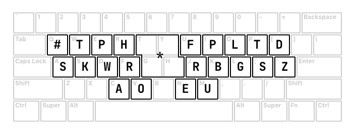
If possible, I would also recommend flipping the top row of keycaps to bring the top row a little closer to the bottom row. This helps a lot with pressing two keys vertically:

It is definitely possible to learn theory with a regular keyboard (even one that doesn’t support n-key rollover), but it might be frustrating depending on your patience.
Steno software
This series requires you to use Plover; a free and open source steno engine available on Linux, macOS, and Windows. Follow the instructions in the Plover wiki (link below) to set up the app and your machine. If you are using a QWERTY keyboard, make sure to read over the page and the relevant sections.
Beginner’s Guide to Plover
Chapter 3: How to learn steno
Steno is difficult
Before starting to learn steno, it is important to know that it is not something that can be easily picked up within a week. Personally, it took me about 3 months to achieve a consistent 30 WPM speed. While not nearly as difficult as learning a new language, the difficulty is definitely comparable to something like learning a musical instrument. Learning steno takes a lot of (good) practice and patience. You should not be expecting to double your typing speed in just a month.
In fact, it took me 6 months to reach 150 WPM on some TypeRacer quotes, but my speed varied quite a lot as novel and unfamiliar words would throw me off. While my top speed was indeed quite fast during this period, my average speed of 90 WPM wasn’t significantly faster than a good QWERTY typist. Another 6 months later, I was at a consistent 180 WPM on most Monkeytype quotes. Another year and a half after that, I completely switched to steno for all computer tasks.
I hope reading this has not discouraged you from picking up steno, but I do have to be honest and straightforward about it. If you are not discouraged, however, I do believe you have the right mindset to succeed!
Take steno as a challenge!
When I first started learning stenography, I knew that people were saying it is very difficult to learn. Instead of being discouraged by this, it motivated me even more. In the back of my mind, I wanted to prove that steno wasn’t that difficult and that maybe I could learn it faster than most people. While this is quite egotistical, I do think this mindset helped me along the way; even though I did not learn steno as fast as I had hoped.
If you’re not feeling this way, but still want to learn, try to convince yourself that you can do this! Compared to other skills or technical abilities, steno is something that I truly believe anyone can do. You don’t have to necessarily have quick fingers, and you don’t have to have an exceptional memory. In my opinion, all you need is a lot of free time, some patience, and a good steno board.
I should also mention that if, at any point in your steno journey, you are feeling discouraged at your progress, don’t give up! Most people take 6 months to a year to reach their old typing speed. It is a gradual process, and one that you should be finding fun.
Believe in yourself! Face learning steno as a challenge!
How do I learn?
Lapwing chapters
This series is aimed at being a complete guide to learning steno. While you will learn everything that you need to know to be fast at steno, practice and fluency is key.
Each chapter in this series follows the same basic format: new theory and practice material introduced in subsections followed by a chapter test. The purpose of this test is to ensure that you have learned the material well enough. It is crucial that you are comfortable and well acquainted with each chapter before moving onto the next.
Everyone’s threshold of being “comfortable” differs and it is up to you to decide what this means for you. For some, maybe this just means reading through the chapter with a little practice. For others, maybe this means practising the drills for a week. It is completely up to you to decide when to proceed to the next chapter. However, if you have no idea when you should move on, I recommend following the recommended passing requirement at the end of each chapter test.
Optional briefs
Lapwing is full of briefs and write-outs. A brief is an abbreviated outline that is used for speed. It may not follow theory at all and can be completely arbitrary. On the other hand, write-outs are outlines that are logical and follow theory rules. Until you start speed building, you should focus on write-out entries.
This book will emphasize learning the rules behind write-outs, but a lot of common words are written using briefs. Many of these briefs are covered gradually in each chapter. It’s not important to explicitly memorize them, but I would suggest at least skimming through them at the end of your practice. After all, these briefs will be covered again in a later chapter; you are free to ignore the optional briefs at the end of each chapter if you wish to learn them all at once in chapter 16.
Daily practice
Try to aim for at least 15 minutes of practice a day. Ideally, one hour would be best. As mentioned, consistency is key to becoming fluent at steno. However, any more than three hours a day is approaching excessive. Steno is not simply something you can throw more time at to expect better results. By nature, it is something that has to be developed over a long period (like learning a musical instrument or a language). Remember to take breaks, and do not force yourself to practise more than you want to!
Incorporating steno into your computer usage
It’s always a good idea to apply your learning to complement exercises in a textbook. However, I would only recommend incorporating steno into your computer usage after reaching chapter 18. If not, you will have to make liberal use of the lookup tool. It is very important to know how to use this tool correctly. If you blindly follow the entries that show up, you may find yourself confused and frustrated as to why a word is written the way it is. You may also force yourself to inadvertently memorize more briefs.
Plover has a built-in tool to easily look up outlines. It can be found in Tools → Lookup. Make sure to read the tips below if you would like to use this tool.
Use the longest outline available
Due to the nature of briefs and write-outs, briefs tend to use fewer strokes and write-outs tend to use more. When you type in a word into the lookup tool, both types of entries will be present. I recommend using the longest outline in the lookup tool as that is overwhelmingly likely to be a write-out.
In the following example, the first two entries are briefs, while the last two are write-outs. You should be using one of these two. Defaulting to the longest outline available is very safe.

That being said, if one of the shorter outlines makes sense to you, then by all means use it!
Be careful of hidden affixes
The Lapwing dictionary may not contain every single valid outline. You will later learn of affix strokes which attach to root words. For example, the word “thoroughly” contains “thorough” as a root word and “^ly” as a suffix. One way to write “thoroughly” is THOR/KWROE/HREU. However, it does not show up in the dictionary:

Instead, remove the “^ly” suffix and look up the word “thorough”. You will find THOR/KWROE as a valid outline:

To write the “^ly”, you could look this up too:
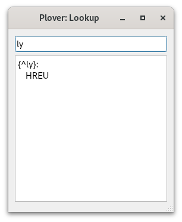
The curly braces indicate that this word is special. In this case, the caret indicates that it will attach on that side. Putting these two outlines together, you would get THOR/KWROE/HREU. This is the canonical way you would write the word “thoroughly” even though it is not in the dictionary.
Problematic words
In grade school English, we learn of rules that allow us to pronounce words. However, as you may have realized, there are exceptions to almost every rule. Lapwing is no different, and you may encounter words in the default dictionary that are unintuitive and go against a rule.
There is a table in chapter 22 which aims to list these words. If you’ve come across a word whose outlines don’t make sense to you, I suggest checking this table or even using the search bar to see if it is mentioned anywhere else in this book.
Switching to steno completely from day 1
If you’re familiar with learning alternative keyboard layouts such as Colemak and Dvorak, you may be tempted to try and use steno for everything right from day 1.
I would not recommend this at all.
In contrast to typing where you only need to know the location of the keys, there is much more complexity with steno. If you try to ditch regular typing too early on, you will constantly encounter concepts that won’t make sense and will only fuel your frustration. Furthermore, to switch to steno full time, you need to be able to write things that are not just English words. This includes symbols, keyboard shortcuts, editing text, and more. Trying to learn all of this at once is unwise.
Instead, I would highly encourage you to follow the structure of this book; the concepts are spread out over 26 chapters which makes the learning curve much less steep. Treat learning steno as a hobby on the side. Your ultimate goal may be to replace your regular keyboard with steno, but you need to at least be familiar with basic theory before doing so. Rushing will not get you anywhere.
Chapter 4: The layout
Useful links
Finger positions
Recall this graphic from chapter 2:
I recommend keeping this graphic in a convenient place to refer to. The yellow circles indicate the resting home position of your fingers. Your fingers should be curled and resting on the cracks of the keys. It’s important to memorize this layout to the point that you are able to press the right key when prompted for.
The best way to go about memorizing this layout is splitting it into memorable chunks and doing a lot of drills. It’s one thing to know which finger is responsible for which key(s), but the most effective way of building muscle memory for the layout is simply drilling it.
The backspace key
From here on, you can play around with the keys and press random things to see what you get for fun. You could also jump right into the drills. In any case, it’s very important to know how to backspace what Plover outputs. For this, press the asterisk key (*) and Plover will delete the last translation caused by the last stroke.
What’s important to note is that doing so does not delete the last word necessarily. Try this: press the stroke PAOEU into a text editor. You should see the word “pie” outputted by Plover. Now, press the stroke THOPB. You should now see that Plover backspaces the “ie” and replaces it with “ython” to give you the word “python”.
What you’ve just done is write a multistroke outline for the word “python”; to delete this, you will need to press the asterisk key twice. Try it out!
You can also watch this GIF:
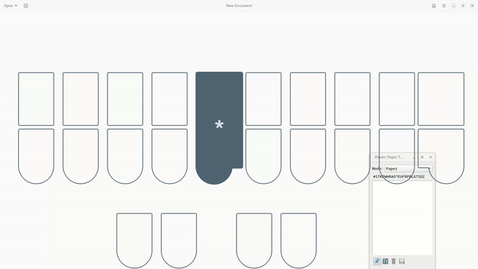
Notice how pressing the asterisk once doesn’t delete the word—it only deletes the last stroke and therefore leaves the PAOEU (pie) stroke alone.
For now, this isn’t very crucial at the moment as the majority of words covered in these early chapters are written with one stroke. However, do keep in mind that the asterisk does not behave like a backspace key in the traditional sense.
Steno Jig
If you are using Javelin, make sure to read Appendix C for instructions on setting up your keyboard with these drills.
For learning the layout, Steno Jig has some helpful “Learn the Steno Keyboard” drills.
For each drill, you may choose to enable hints, which show where each key is located on the steno layout. Ultimately, you want to be able to do these drills without using any hints. Do not worry about the “Speed (strokes per minute)” parameter just yet.
If you are unsure where to start, these 5 drills are recommended (select them in the dropdown menu):
- Left hand, bottom row
- Right hand, full bottom row
- Left hand, top row
- Right hand, full top row
- Vowels
In order to do the drills, you must disable all your dictionaries by unchecking them in Plover’s main window:

Click on the check marks next to each dictionary to disable them. After you’ve done this, Plover will output raw steno when you write a key. Simply press the key that is prompted during the drills. If you make a mistake, press the asterisk key to backspace.
Why does Plover output a hyphen?
With your dictionaries unchecked, try pressing the right side “T” key (or really any consonant key on the right side). You’ll notice that Plover outputs -T with a hyphen. The hyphen indicates that this “T” is on the right side of the keyboard. If you are prompted to press S, you must press the “S” key on the left side. If you see -S, this indicates that the S is on the right side and so you must press the right side “S” key.
This hyphen is included in all strokes that contain only right hand consonant keys. If you were to press the right hand “R”, “P”, and “L” keys, Plover would output -RPL. If a stroke contains a vowel or the asterisk, however, the hyphen is omitted. This syntax of raw steno makes it easy to differentiate repeat letter keys on both sides of the keyboard.
How should I start?
If you’d like, you can just jump right into the drills; that is a valid way to learn the layout. However, I would suggest coming up with mnemonics first just to make the memorization process a little bit easier. These should be personal as they’re more likely to stick.
For example, these are some mnemonics I used when first starting off:
-
Left hand, bottom row (
SKWR)- some kettle valley railway (
SKWR)- A historical railway in my area (“v” is not quite “W”, but it was close enough)
- some kettle valley railway (
-
Right hand, full bottom row (
-RBGSZ)- red, blue, green (
RBG)- Like “RGB” but not quite
- Bottom right pinkie key is
-Sjust like bottom left pinkie - The “Z” sound is similar to “S” and is immediately to the right of
-S -Zis also on the end, just like in the alphabet
- red, blue, green (
-
Left hand, top row (
#TPH)- hash is right above
S - the power of hydrogen (“TPH”)
- As in the chemistry term “pH”
- hash is right above
-
Right hand, full top row (
-FPLTD)- Index finger presses
-F - personal learning time (
-PLT)- You can also combine the previous key with this mnemonic where
-Frepresents an expletive (-FPLTD)
- You can also combine the previous key with this mnemonic where
- The “D” sound is just the voiced “T” sound and is right next to
-T(-D)
- Index finger presses
-
Vowels (
AOEU)- ay yo, eu! (
AOEU)- An individual really passionate about the European Union
- You could also pronounce “ao” as “ow” for someone who dislikes the European Union
- ay yo, eu! (
Clearly some of these mnemonics are rather silly (and also very specific), but that makes them easier to remember for me. I do encourage you to come up with your own! At some point, the keys will become natural to you and you will not need to recall any mnemonics. It is at this point that you should proceed to the test.
Other drills
If, after a few days, you feel pretty comfortable practising the previous drills, you may want to try other practice material. The other Steno Jig drills are fair game:

The drills outside of the red box incorporate theory you have not learned yet, and are not recommended.
If you have already done these drills and are quite comfortable, I would recommend moving onto the test.
Chapter 4 test
For this test, we will also be using Steno Jig. This time, we will be making a custom drill here:

Click here to take you to the page shown above.
Copy and paste the following into the text box:
SAP HUD SOG TOD WET POG ROD KUS PEB ROR WEZ WEL TER TAT WEF KAB WES SAP TAS RET TAD PEP SEB KOF TUZ PEF HEL PUB RAT WAF TAB RAS HUP WUP PEZ SOF HUR PUZ SOB POT KED WUD SAG RAP RAL ROL WOZ KAD KAT KOB RAD TAR SAL ROF SOR WOT HUF TUR KAF HOR SOD KOT SEF RED HAP PAP KEG KOZ TUS SOZ TAG HAS TAF HES HOL WUR TEB HAB HER PER TOP HAZ POL WOS HOP SUT TOR REL PAT SER WUS PUP KAG POD SUB HED SAB SUL TEF SOL
This test is a little different to previous drills in that you are writing entire strokes rather than single keys. Consonants on the left side of a vowel should be pressed with the left hand, and consonants on the right side should be pressed with the right hand. So SAP would be written like:
It is important that you press all three keys all at once for every stroke you are prompted to write (do not press each key letter by letter).
Select “Shuffle words” and make sure your dictionaries are also unchecked just like in previous drills. Once you have done so, you are ready to go!
Recommended completion goal
This is only a suggestion if you are unsure of when to move on to the next chapter; it is not a strict requirement!
You should be able to complete this test in 10 minutes or fewer with an accuracy of at least 90%.
Extra practice
KEP SAT TEP REF PUT KUR RAB KUF RAG WUT KUB ROB TUF TOT WUL WUF KEZ ROT KAZ KEF RUT PUG RAF SUR REP TUD TOS SEZ SUD KUL KAP TOZ ROZ PAB KUT PUS KOD RUG TED HOT SAS HAG HEZ SUZ WAT KUP HAT PAL HOZ POS PAD PUR KOR PAZ TEZ REZ ROS KUZ WOL TUP HUG HOB HAR RER TOG REG TUB HUL PAR TOF WUZ PUL HEG POR RUL SEL TOB KER HOF SUF RUF WUG WER RUR SAD SOT TUG REB SES HAD HOG KEB POP TES KOG HUZ KAS SAF HEB
TEL KOL POB KUD HAL TUT ROP WAD WAL TAP RES SEG WOG RUB WOP PUD WAG PED WAS PUF HET KOS WEP HOS KAR SOP RUD KOP TET HUS TOL PET HAF HEF SAZ WAR SEP SUG TUL RUP KET WOF KEL SOS HOD RAZ PES KAL WAB SUS HEP WEG SUP PEG HUB WOD KES PAF SAR PEL WEB TEG SET WOB PAS POF RAR WOR WUB POZ ROG HUT WAZ WED KUG TAZ SED RUZ TAL RUS WAP PAG
Chapter 5: Lapwing setup and basics
Useful links
- Typey Type custom lessons
- Basic single syllable words drill
- Basic left hand single syllable words drill
- Single syllable dbl words drill
- Chapter 5 test
Lapwing setup
The Plover app comes loaded with a default theory called Plover theory. As this series is for learning Lapwing theory, there are a few modifications needed before proceeding. There are two options: install the plover-lapwing-aio plugin, or add the Lapwing dictionaries manually (not recommended). If in doubt, follow the instructions below for the all-in-one plugin as discussed below.
If you are using Javelin, make sure to read Appendix C for instructions on setting up your keyboard with Lapwing.
Using the all-in-one plugin
In Plover’s main window, click on Tools → Plugins Manager. Scroll down until you see plover-lapwing-aio and select it. Press Install/Update and make sure to press the Restart button afterwards.
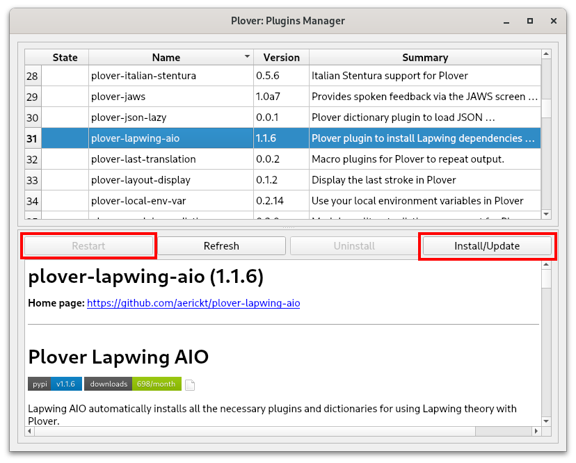
NOTE: just closing the main window is not sufficient to restart Plover. You will have to press the restart button or manually quit Plover by going to
File → Quit Ploverand opening Plover again.
Once Plover has been restarted, in Plover’s main window, click on Configure → System and change the system to Lapwing. Press Apply and OK—you should now be good to go!
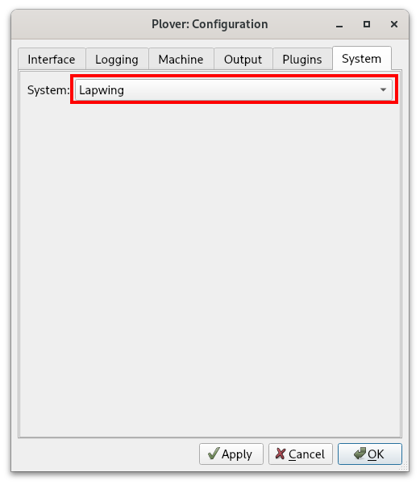
If you’d like to know more about the default dictionaries that come with the all-in-one plugin, have a look at the homepage. Many of these plugins are useful if you would like to use steno for computer tasks other than just writing. You are completely free to delete these from your dictionary stack if you do not require them.
Dictionary updates
The Lapwing dictionary and theory are pretty stable, but the dictionary is updated on a weekly basis to fix mistakes and typos. Occasionally there are also changes to the theory itself to make it more consistent and easier to learn. This book is always in sync with the latest version of the dictionary. However, the plugin (and therefore the dictionary) do not autoupdate. To update the plugin and dictionaries:
- Open the plugins manager and find
plover-lapwing-aio. - Press the update button.
- In Plover’s main window, go to
File → Open Config Folder. - Delete the dictionary you want to update (e.g.
lapwing-base.json) - Restart Plover
Setting up Lapwing manually
If you do not want to use the all-in-one plugin, please see Appendix B if you wish to set up Lapwing dictionaries manually (not recommended).
Typey Type
From this point on, exercises will be done on Typey Type. The benefit is that custom lessons with their own recommended outlines can be configured.

Click here to access Typey Type shown above
Lessons in this series will be provided as links to text files. Left clicking on these links will display the contents of each lesson. Copy and paste the entire file (Ctrl + A or Cmd + A to select the whole page) into the text box above. After that, press Start custom lesson.
Make sure to sort the words randomly on the right hand side.

You may tweak additional settings to your liking, but the defaults are perfectly fine. If you would like to try this out, here is one example of a lesson:
Click here to access a sample lesson
Single key basics
Each steno stroke is made up of three main parts: the initial consonant, the vowel, and the ending consonant.

If a single key makes up one of these parts, it will represent the sound that the letter is associated with.
For example, the strokes TAP and HUT from the previous chapter’s test represent the words “tap” and “hut” respectively. The stroke KAT represents the word “cat”.
NOTE: most consonants are phonetic, meaning that we care about the pronunciation rather than the spelling. This is why the initial consonant in “cat” is given the
Kkey. You will later see that not all steno aspects are phonetic—some are orthographic (meaning that they are based upon spelling instead).
If one of these parts of the steno stroke is not a single key (i.e. it is a chord), it will not necessarily represent the combination of the individual letter sounds. Sometimes this does work; combining the left hand S and H keys can represent the initial “sh” sound as in “shut”.
However, sometimes the individual keys in a chord have nothing to do with the actual sound it represents. For example, the right hand -PB chord represents the ending “n” sound as in “sun”.
These chords are covered later on, so do not worry too much about this for now. The main takeaway of this section is understanding what to do for simple words whose parts can be composed of single keys.
Consonant keys
Some consonants may represent multiple sounds. This table will clear up any ambiguities.
| Steno key | Examples |
|---|---|
S | sat sill |
T | ten tap |
K | king car |
P | pat pull |
W | win watt |
H | hot hum |
R | red ran |
-F | puff cough |
-P | hip sap |
-B | lob hub |
-L | fall lol |
-G | sag tug |
-T | right pit |
-S* | pass has |
-D | tad rid |
-Z | jazz fizz |
*-S is used whenever the ending sound is spelled with the letter “s”. This is why “has” and “pass” both use -S, despite having a different sound.
Short vowel sounds
Vowel keys are more tricky than consonants because they are not entirely phonetic or orthographic. We will first look at what short vowels are in Lapwing.
The term short vowel is an informal term that is often taught in North American classrooms. It is not very linguistically sound, so the next few sections will attempt to define them more rigorously.
Throughout the vowel sections, the IPA (International Phonetic Alphabet) for each sound is listed. This is only intended for those who are already familiar with it. Do not worry at all if you are not familiar with IPA!
Short a
IPA: /æ/
- cat
- hat
Short e
IPA: /ɛ/
- pet
- sell
Short i
IPA: /ɪ/
- will
- sit
Short o
IPA: /ɑ/
- cot
- rod
In my accent, /ɑ/, /ɔ/, and /ɒ/ all are merged. If they are distinct in your accent, they can all be considered as short o.
Short u
There are two sounds associated with this term.
IPA: /ʌ/
- cup
- hut
IPA: /ʊ/
- could
- pull
The schwa
Schwa is an English sound that all vowel letters can sometimes represent. For example, the underlined letters in the following words are all pronounced as schwas—they are not enunciated like any of the vowel sounds above.
- about
- petition
- pencil
- potato
- support
It’s not too important to understand what a schwa is—it’s basically just another short vowel sound. However, if you’d like to know more, I recommend watching Tom Scott’s video on the subject:
Simple vowels rule #1:
Short vowel sounds and schwa spelled with a single letter use the key/chord that matches the spelling.
Examples
- hat
HAT - pet
PET - cot
KOT - hut
HUT
NOTE: short vowels are almost always spelled with the sound they represent. However, one exception is the word “son”, which has a short u vowel. Remember that we care about spelling for short vowels, this word would be written using the
Okey.
The i chord
There is no “i” key on the steno layout; it is instead represented by the EU chord.
Examples
- hit
HEUT - pill
PEUL - pit
PEUT - tip
TEUP
Simple vowels rule #2:
Short vowel sounds spelled with multiple letters use the key/chord that matches the sound.
Schwa sounds that are spelled with multiple letters are fairly uncommon. If you encounter any, you are meant to use any of the vowel letters that spell part of the sound. If you run into a missing entry, just add it to your personal dictionary.
Examples
- could
KUD - head
HED - said
SED - tough
TUF
Vowels with r
In a General North American accent, inclusion of the letter “r” after a vowel can alter the pronunciation of the vowel. Take, for example, the following pairs of words:
| Normal | r | IPA |
|---|---|---|
| cat | car | /ɑɹ/ |
| head | her | /ɝ/ or /ɚ/ |
| sit | sir | /ɝ/ or /ɚ/ |
| pot | pore | /ɔɹ/ |
| pull | purr | /ɝ/ or /ɚ/ |
These sounds are also considered to be in the same group as short vowels, so rule 1 applies. We will still write these words with the key that spells the vowel, even if it is phonetically a different sound.
NOTE: keep in mind that you still have to identify short vowels before using rule 1. For example, the vowel in “cure” is not a short vowel and cannot be written like
KUR.
Examples
- car
KAR - her
HER - sir
SEUR - pore
POR - purr
PUR
Section practice material
Basic single syllable words drill
Steno order
Looking at the steno layout, why is it that “car” must be written using the left K, and the right hand -R?
The answer is steno order.
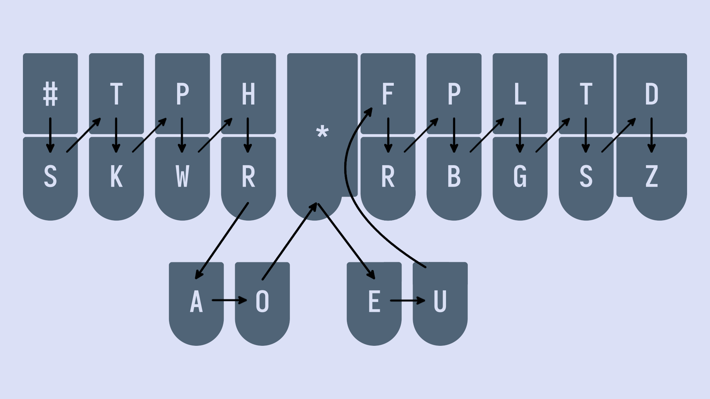
Sounds you make on the layout are supposed to follow this order.
#STKPWHRAO*EUFRPBLGTSDZ
Therefore, the only correct way to write the word “car” would be KAR.
#STKPWHRAO*EUFRPBLGTSDZ
The following is an incorrect way to write “car”; it is actually notated like KRA:
It’s not necessary to memorize steno order explicitly (as in the #STKPWHRAO*EUFRPBLGTSDZ string). However, it’s important to internalize steno order with regard to the location of the keys. With enough practice, it should be immediately obvious that the “-st” sound as in “past”, for example, cannot be represented in steno order.
Impossible single syllable words
Below are two single syllable words that cannot be written in one stroke because of steno order.
- trust
- Closest would be
TRUTS - #STKPWHRAO*EUPBLGTSDZ
- Closest would be
- turf
- Closest would be
TUFR - #STKPWHRAO*EUFRPBLGTSDZ
- Closest would be
To represent a sound in a steno stroke, the sounds should be available on the layout and should fall in the correct order. Although the sounds are indeed available on the layout, they fail the second requirement. For now, do not worry about writing these words—they involve more advanced chords and concepts that will be introduced later.
Combining single left hand keys
On the initial consonants side, there are several chords whose sounds are simply just the combination of the individual keys. Some of these are:
STas in “stop”SKas in “scar”SPas in “spot”SHas in “shop”THas in “thug”TRas in “trap”KHas in “chug”KRas in “crop”PRas in “prat”
KHfor “ch” might not be immediately obvious, but just remember thatKis used for the “hard c” sound. Thus, if you accept thatKcan represent the letter “c”, then combining it with theHkey makes some sense.
This does not just apply to chords with two keys. For example, THR can represent the “thr” sound as in “thread”. Chances are, if a chord makes sense based on the individual keys it is made of, it is valid.
Section practice
Basic left hand single syllable words
Left hand d, b, and l
TKis “d” as in “dab”PWis “b” as in “bot”HRis “l” as in “let”

Examples
- dad
TKAD - bar
PWAR - lap
HRAP - bled
PWHRED
Mnemonics
Feel free to come up with your own or even suggest some!
- Each of these chords are simply two keys in a column
TKis pressed by the left hand ring fingerPWis pressed by the left hand middle fingerHRis pressed by the left hand index finger
- Think “DBL”
- double (these are double keys)
- From Art of Chording
- decibel
- database lover
- double (these are double keys)
Section practice
Chapter 5 test
This chapter’s test consists of all the practice drills you have done so far in this chapter. Make sure your settings are configured as such:
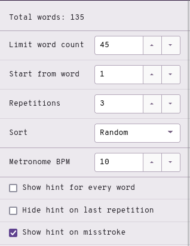
- Limit word count: 45
- Start from word: 1
- Repetitions: 3
- Sort: random
- Show hint for every word: unchecked
- Hide hint on last repetition: unchecked
- Show hint on misstroke: checked
Click here to access the chapter 5 test
Recommended completion goal
This is only a suggestion if you are unsure of when to move on to the next chapter; it is not a strict requirement!
Aim for 10–20 WPM with 90% accuracy.
You may use the test material as practice!
Chapter briefs
This section is completely optional, but recommended. If you prefer to learn these all at once, they will be covered in chapter 16.
| Word | Brief | Explanation |
|---|---|---|
| are | R or -R | Sounds like the letter “R” |
| did | TK | did |
| do | TKO | Matches the spelling |
| I | EU | Matches the spelling |
| is | S | Common word for a single key brief |
| so | SO | Matches the spelling |
| the | -T | Common word for a single key brief |
| you | U | Sounds like the letter “U” |
| . | TP-PL | Symmetrical shape for the period/full stop. |
| ? | KW-PL | Shape resembles a rising intonation. |
NOTE: remember that these are briefs; the explanations are not applicable to any arbitrary word.
Practice sentences
- I do tip the lad.
- you are so rad.
- is the dip bad?
- did you pat the cat?
Answers
EU/TKO/TEUP/-T/HRAD/TP-PLU/-R/SO/RAD/TP-PLS/-T/TKEUP/PWAD/KW-PLTK/U/PAT/-T/KAT/KW-PL
Extra briefs
| Brief | Outline | Explanation |
|---|---|---|
| did you | TKU | TK + U |
| do you | TKOU | TKO + U |
| is the | S-T | S + -T |
| so the | SOT | SO + -T |
| are the | R-T | R + -T |
| are you | RU | R + U |
Chapter 6: Left hand consonants continued
Useful links
- Single syllable fqm words drill
- Single syllable gny words drill
- Single syllable zvj words drill
- Chapter 6 test
Left hand f, q, and m
TPis “f” as in “fad”
KWis “q” as in “quit”
PHis “m” as in “mod”
Examples
- far
TPAR - flat
TPHRAT - quill
KWEUL - quip
KWEUP - met
PHET - more
PHOR
Wouldn’t PH as “f” make more sense?
Why not use PH for “f”? After all, this would be easier to remember since “ph” has the same sound as “f”. However, it would be impossible to chord “fl” sounds as the PH and HR chords overlap. PHR already represents the initial “pl” consonants. We would run into ambiguity if we also defined PHR to be the “fl” consonants (e.g., “plat” and “flat”).
Mnemonics
Feel free to come up with your own or even suggest some!
- Each of these chords are simply two keys in a row
TPis the top row pressed by the ring and middle fingersKWis the bottom row pressed by the ring and middle fingersPHis the top row pressed by the middle and index fingers
- Think “FQM” in steno order (top to bottom, left to right!)
- fully qualified mountain
- first quill made
Section practice
Left hand g, n, and y
TKPWis “g” as in “get”
NOTE:
TKPWis only used for the “hard g” sound. For example, the word “gel” would not useTKPWas the initial consonant is a “soft g” (a “j” sound).
TPHis “n” as in “not”
KWHis “y” as in “yet”
KWH is only used when the word starts with the letter “y”; if a word has a “y” sound but doesn’t start with a “y”, simply don’t use a left hand consonant chord.
Examples
- gloss
TKPWHROS - gull
TKPWUL - nap
TPHAP - net
TPHET - yet
KWHET - yes
KWHES - use
AOUS
Mnemonics
Feel free to come up with your own or even suggest some!
- Grapes nourish you
TKPWis a group of 4 keys pressed by the ring and middle fingersTPHis a row of 3 keys pressed by the ring, middle, and index fingersKWHis three keys in a rising shape, like the intonation when asking “why?”
Section practice
The initial “y” consonant was recently changed. Check chapter 5 for instructions to update your dictionary if you have a different outline for “y” words.
Left hand z, v, and j
STKPWis “z” as in “zit”
SRis “v” as in “vat”
SKWRis “j” as in “job”
Mnemonics
Feel free to come up with your own or even suggest some!
- Zits are ’sgusting!
- The chemical element strontium (symbol Sr) is not vanadium
SKWRis just the bottom row of the left hand
Examples
- zap
STKPWAP - zip
STKPWEUP - var
SRAR - ver
SRER - jib
SKWREUB - jot
SKWROT
Section practice
The initial “z” consonant was recently changed. Check chapter 5 for instructions to update your dictionary if you have a different outline for “z” words.
Chapter 6 test
This chapter’s test consists of all the practice drills in this chapter. Make sure your settings are configured as such:
- Limit word count: 45
- Start from word: 1
- Repetitions: 3
- Sort: random
- Show hint for every word: unchecked
- Hide hint on last repetition: unchecked
- Show hint on misstroke: checked
Click here to access the chapter 6 test
Recommended completion goal
This is only a suggestion if you are unsure of when to move on to the next chapter; it is not a strict requirement!
Aim for 10–20 WPM with 90% accuracy.
You may use the test material as practice!
Chapter briefs
This section is completely optional, but recommended. If you prefer to learn these all at once, they will be covered in chapter 16.
| Word | Brief | Explanation |
|---|---|---|
| again | TKPWEPB | Drops the first vowel |
| and | SKP | Completely arbitrary, but useful in phrases |
| ask | SK | Drops the first vowel |
| before | PW-FR | Drops all vowels |
| have | SR | have |
| it | T | it |
| no | TPHO | Matches the spelling |
| said | SED | Completely phonetic |
| very | SRE | very |
NOTE: remember that these are briefs; the explanations are not applicable to any arbitrary word.
Practice sentences
- I ask the mod again and again.
- before you said you quit.
- is it fit?
- yes I got it.
- no it is very well.
Answers
EU/SK/-T/PHOD/TKPWEPB/SKP/TKPWEPB/TP-PLPW-FR/U/SED/U/KWEUT/TP-PLS/T/TPEUT/KW-PLKWHES/EU/TKPWOT/T/TP-PLTPHO/T/S/SRE/WEL/TP-PL
Extra briefs
| Brief | Outline | Explanation |
|---|---|---|
| and you | SKPU | SKP + U |
| and I | SKPEU | SKP + EU |
| and the | SKP-T | SKP + -T |
| so the | SOT | SO + -T |
| are the | R-T | R + -T |
| are you | RU | R + U |
| have you | SRU | SR + U |
| is it | ST | S + T |
| it is | T-S | T + -S (for “is”) |
Chapter 7: Vowels
Useful links
- Single syllable
OE,OU, andOEUwords drill - Single syllable
AEUwords drill - Single syllable
AOUwords drill - Chapter 7 test
Intro
Vowels are reportedly the most difficult part of learning steno. Part of this is due to the fact that vowels are pronounced differently in different dialects of English. Unfortunately, I grew up learning General American English. This is the accent that Lapwing is based on.
If you speak a different accent, you may have to subvocalize with an American accent (sorry).
I’m making an effort to include IPA with the hopes that they will be useful for some. However, I must make the disclaimer that I have never taken a formal linguistics course nor am I an enthusiast. I apologize for any errors that may be present in this page—do reach out to me if you have corrections!
OE, OU, and OEU
OEis the long o vowel as in “tote”- /oʊ/
Linguistically, calling this a long vowel is incorrect (this is actually a diphthong), but it’s what most people would be familiar with (see here).
OUis the “ow” sound as in “cow”- /aʊ/
OURis the sound as in “hour”- /aʊ ər/
OEUis the sound as in “toy”- /ɔɪ/
Examples
- foe
TPOE* - sow
SOE - foul
TPOUL* - power
POUR - coil
KOEUL - soy
SOEU
If you’re having trouble associating the
OEandOUchords, I suggest remembering the words marked with *.
Mnemonics
Feel free to come up with your own or even suggest some!
- The word “foe” is spelled with the letters
OE.- Apply this to other words with the same vowel sound!
- The word “our” is spelled with
OU. OEUcan be thought of asO+EUor “oi” which resembles its pronunciation and spelling (as in the word “soil”)
Section practice
Single syllable OE, OU, and OEU words drill
AEU
AEUis the long a vowel as in “pay”- /eɪ/
NOTE: be careful with words like “bag”, “tank”, and “sag”; these use
Afor /æ/ and notAEU. The difference is subtle, but try to convince yourself that these are different vowels.
AEURis the sound as in “pair”- /ɛr/
Examples
- day
TKAEU - lay
HRAEU - care
KAEUR - pair
PAEUR
Mnemonics
Feel free to come up with your own or even suggest some!
AEUcan be thought asA+EUor “ai” which resembles its pronunciation and spelling (as in the word “paid”)- If the notion of long vowels and short vowels (as described above) is familiar,
AEUcan be thought of as transforming theAkey into a long a by combining it with the two keys on the other side- Long a =
A+ (vowel keys on other hand)
- Long a =
Section practice
Single syllable AEU words drill
AOU
-
AOUrepresents two different sounds:- The long u sound as in “cube”
- /ju/
- The “oo” sound as in “glue”
- /u/
- Only when the sound is not spelled with “oo”
- E.g., “loo” would not use
AOU
- E.g., “loo” would not use
- The long u sound as in “cube”
-
AOURis the sound as in “cure”- /ʊər/
Examples
- ew
AOU - sue
SAOU - lure
HRAOUR - pure
PAOUR
Mnemonics
Feel free to come up with your own or even suggest some!
- If the notion of long vowels and short vowels (as described above) is familiar, the
AOUchord can be thought of as transforming theUkey into a long u by combining it with the two keys on the other side- Long u =
U+ (vowel keys on other hand)
- Long u =
- The long u sound is also quite similar to the “oo” sound
Section practice
Single syllable AOU words drill
Chapter 7 test
This chapter’s test consists of all the practice drills you have done in this chapter. Make sure your settings are configured as such:
- Limit word count: 45
- Start from word: 1
- Repetitions: 3
- Sort: random
- Show hint for every word: unchecked
- Hide hint on last repetition: unchecked
- Show hint on misstroke: checked
Click here to access the chapter 7 test
Recommended completion goal
This is only a suggestion if you are unsure of when to move on to the next chapter; it is not a strict requirement!
Aim for 5-20 WPM with 90% accuracy.
You may use the test material as practice!
Chapter briefs
This section is completely optional, but recommended. If you prefer to learn these all at once, they will be covered in chapter 16.
| Word | Brief | Explanation |
|---|---|---|
| a | AEU | Sounds like the letter “A” |
| can | K | Single key brief for a common word |
| for | TP-R | Drops the vowel |
| in | TPH | in |
| if | TP | if |
| new | TPHU | The proper long u TPHAOU vowel is reserved for the word “knew” |
| to | TO | Matches the spelling |
| two | TWO | Matches the spelling |
| , | KW-BG | Symmetrical shape like the period/full stop. |
| ! | TP-BG | Shape resembles a lowering intonation (not accurate to the exclamation mark, but contrasts with the question mark). |
NOTE: remember that these are briefs; the explanations are not applicable to any arbitrary word.
Practice sentences
- can you say two?
- I paid for a can!
- I got a new car in the house.
- if you trade, can I pay for the place?
Answers
K/U/SAEU/TWO/KW-PLEU/PAEUD/TP-R/AEU/K/TP-BGEU/TKPWOT/AEU/TPHU/KAR/TPH/-T/HOUS/TP-PLTP/U/TRAEUD/KW-BG/K/EU/PAEU/TP-R/-T/PHRAEUS/KW-PL
Extra briefs
| Brief | Outline | Explanation |
|---|---|---|
| for the | TP-RT | TP-R + -t |
| can you | KU | K + U |
| in the | TPH-T | TPH + -T |
| if the | TP-T | TP + -T |
| to the | TOT | TO + -T |
Chapter 8: Vowels continued
Useful links
- Single syllable
AOEwords drill - Single syllable
AOEUwords drill - Single syllable
AUwords drill - Single syllable
AEwords drill - Single syllable
AE,AEU, andAOEwords drill - Single syllable
AOwords drill - Chapter 8 test
Intro
Vowels are reportedly the most difficult part of learning steno. Part of this is due to the fact that vowels are pronounced differently in different dialects of English. Unfortunately, I grew up learning General American English. This is the accent that Lapwing is based on.
If you speak a different accent, you may have to subvocalize with an American accent (sorry).
I’m making an effort to include IPA with the hopes that they will be useful for some. However, I must make the disclaimer that I have never taken a formal linguistics course nor am I an enthusiast. I apologize for any errors that may be present in this page—do reach out to me if you have corrections!
What is a conflict?
Since steno is a primarily phonetic system, homophones can be tricky to deal with. For example, the words “pair” and “pear” are pronounced exactly the same, but it is not possible to assign them both to PAEUR. We would call this an example of a conflict; two words conflict with the same outline. In Lapwing theory, spelling is the primary way to resolve conflicts. This particular example of “pair” and “pear” is covered later in this chapter.
AOE
AOEis the long e sound as in “beet”- /i/
AOERis the sound as in “peer”- /ɪər/
Examples
- peel
PAOEL - teal
TAOEL - here
HAOER - seer
SAOER
Mnemonics
Feel free to come up with your own or even suggest some!
- If the notion of long vowels and short vowels (as described in the previous chapter) is familiar, you can think of transforming the
Ekey into a long e by combining it with the two keys on the other side- Long e =
E+ (vowel keys on other hand)
- Long e =
Section practice
Single syllable AOE words drill
AOEU
AOEUis the long i sound as in “ice”- /aɪ/
AOEURis the sound as in “ire”- /aɪər/
Examples
- light
HRAOEUT - tile
TAOEUL - liar
HRAOEUR - tire
TAOEUR
Mnemonics
Feel free to come up with your own or even suggest some!
- If the notion of long vowel and short vowels (as described in the previous chapter) is familiar, you can think of transforming the “i” chord into a long i by combining it with the two keys on the other side
- Long i =
EU+ (vowel keys on other hand)
- Long i =
Section practice
Single syllable AOEU words drill
AU
In chapter 5, the short vowel rules suggest that words like “bought” and “caught” would use the O key.
Short vowel rule #1: short vowel sounds and schwa spelled with a single letter use the key/chord that matches the spelling.
Short vowel rule #2: Short vowel sounds spelled with multiple letters use the key/chord that matches the sound.
However, “bought” and “caught” are homophones with “bot” and “cot” (at least with the accent Lapwing assumes). Therefore, we instead give an exception to the short o sound with regard to the two rules above.
The short o sound is only written with O if it is spelled with a single “o”. Any other spellings of the short o sound are written with AU.
So while “bot” and “cot” are written as PWOT and KOT, respectively, “bought” and “caught” are written like so:
- bought
PWAUT - caught
KAUT
Minor conflicts
Words spelled with “au” are given A*UL when there is a conflict:
- call
KAUL - caul
KA*UL - hall
HAUL - haul
HA*UL
Words spelled with “awl” are also given A*UL when there is a conflict:
- all
AUL - awl
A*UL - ball
PWAUL - bawl
PWA*UL
There aren’t very many of these conflicts to warrant a practice drill, but it is important to keep this in mind when you encounter unexpected output in everyday writing. This is also one area where it is completely safe to change the logic and remap words in your own personal dictionary.
Section practice
Single syllable AU words drill
AE for AEU
Take a look at the following words:
- pair
- pear
The PAEUR outline cannot be assigned to both of these words. This is where AE comes into play. It is a secondary chord that can represent the same vowel as AEU when there is conflict.
In these conflicts involving the long a sound, one word will use AEU. This is the word with higher priority. The other word will use AE; this is the word with lower priority. Spelling is used to determine the priority to assign to a word.
Highest priority: “ai” or “ei” spellings
Words spelled with “ai” or “ei” get the highest priority, and are always written using AEU:
AEUTeightTPAEURfairPHAEUPBmainPAEURpair
Medium priority: “a_e” spellings
These words receive medium priority. Use AE for these words if there is a conflict with a word in the above category.
AETate (AEUTis already “eight”)TPAERfare (TPAEURis already “fair”)TAEURtare (“tair” is not a word)PHAEPBmane (PHAEUPBis already “main”)
Lowest priority: “ea” spellings
These words get lowest priority. If there is a conflict with any of the two categories above, use AE.
TAERtear (TAEURis already “tare”)PAERpear (PAEURis already “pair”)SWAEURswear (“swair” and “sware” are not words)
NOTE: remember that
AEis only used to resolve conflicts. Try not to associate this chord with any specific spelling or sound.
Flowchart Summary
Here’s a flowchart to summarize the above:

AE for AOE
In addition to the AEU vowel, AE can also represent the AOE vowel when there are conflicts. Again, certain spellings are assigned to higher priority, while lower priority spellings use AE.
Highest priority: “ee” spellings
All words spelled with “ee” use AOE
TPAOETfeetPAOEpeeSAOEDseedTAOEtee
Medium priority: “ie” spellings
PAOESpiece
Lowest priority: “ea” spellings
TPAETfeat (TPAOETis already “feet”)PAEpea (PAOEis already “pee”)PAESpeace (PAOESis already “piece”)TAEtea (TAOEis already “tee”)
Flowchart Summary
Here’s a flowchart to summarize the above:
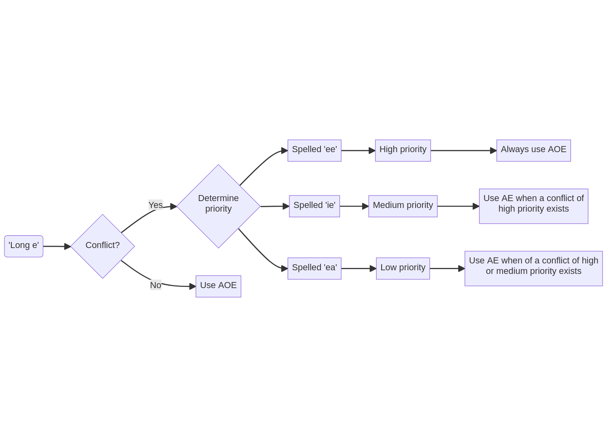
Other uses of AE for disambiguating
AE can also be used for “ea” spellings that conflict with short vowels.
- lead
HRAED(HREDis already “led”) - bread
PWRAED(PWREDis already “bred”)
AE 3-way conflicts
You may wonder about, or even encounter a few 3-way conflicts. For example, “pair”, “pare”, and “pear”. There really aren’t that many of these so Lapwing doesn’t actually provide any rules on how to deal with these.
By default the Lapwing dictionary assigns PAER to “pear” and PA*EUR to “pare”. The reason for this is that “pear” is much more common and is considered higher priority than “pare”. You are, of course, free to disagree with this logic and change things around! It is really up to you how you want to deal with these conflicts.
NOTE: considering priority based on how common words are is generally used as a last resort where the rules are fuzzy or nonexistent (like in this example). You will not see this in any concrete Lapwing rules.
Section practice
Single syllable AE words drill
Single syllable AE, AEU, and AOE words drill
AO
This chord has two uses:
- Words spelled with “oo”, regardless of their pronunciation
- wood
WAOD - hood
HAOD - blood
PWHRAOD - tool
TAOL
- wood
- Words spelled with “oa” to resolve conflicts
- oar
AOR(ORis already “or”) - soar
SAOR(SORis already “sore”) - boar
PWAOR(PWORis already “bore”) - road
RAOD(ROEDis already “rode”)
- oar
NOTE: you may be tempted to write “boat” as
PWAOT, but this is incorrect. The word “boat” should be written asPWOET, first and foremost (since there are no homophones with “boat”). Therefore,PWAOTis actually the word “boot”.
Section practice
Single syllable AO words drill
Chapter 8 test
This chapter’s test consists of all the vowel drills (including chapter 7 material). Make sure your settings are configured as such:
- Limit word count: 45
- Start from word: 1
- Repetitions: 3
- Sort: random
- Show hint for every word: unchecked
- Hide hint on last repetition: unchecked
- Show hint on misstroke: checked
Click here to access the chapter 8 test
Recommended completion goal
This is only a suggestion if you are unsure of when to move on to the next chapter; it is not a strict requirement!
Aim for 5–20 WPM with 90% accuracy.
You may use the test material as practice!
Chapter briefs
This section is completely optional, but recommended. If you prefer to learn these all at once, they will be covered in chapter 16.
| Word | Brief | Explanation |
|---|---|---|
| had | H | Single key brief for a common word |
| people | P | Single key brief for a common word |
| this | TH | this |
| there | THR | there |
| when | WH | when |
| why | KWH | KWH is the initial “y” chord |
| will | HR | will |
| with | W | Single key brief for a common word |
Enter or Return | R-R | return (equivalent to pressing Enter or Return on a keyboard). |
Capitalize the next word and suppress a space | KPA* | This useful for starting new sentences in text fields where you don’t want a leading space. |
NOTE: remember that these are briefs; the explanations are not applicable to any arbitrary word.
Practice sentences
- When are the people here?
- This is why we fight.
- There are no moose!
- Will you sleep now?
- I have had it with you!
Answers
KPA*/WH/R/-T/P/HAOER/KW-PLKPA*/TH/S/KWH/WAOE/TPAOEUT/TP-PLKPA*/THR/-R/TPHO/PHAOS/TP-BGKPA*/HR/U/SHRAOEP/TPHOU/KW-PLKPA*/EU/SR/H/T/W/U/TP-BG
Extra briefs
| Brief | Outline | Explanation |
|---|---|---|
| had the | H-T | H + -T |
| this is | TH-S | TH + -S |
| there is | THR-S | THR + -S |
| there’s | THR*S | THR + -S + * |
| there are | THR-R | THR + -R |
| there’re | THR*R | THR + -R + * |
| when is | WH-S | WH + -S |
| when’s | WH*S | WH + -S + * |
| when are | WH-R | WH + -R |
| why is | KWH-S | KWH + -S |
| why’s | KWH*S | KWH + -S + * |
| why are | KWH-R | KWH + R |
| will the | HR-T | HR + -T |
| will you | HRU | HR + U |
Chapter 9: Right hand chords
Useful links
- Single syllable right hand -v words drill
- Single syllable right hand -m and -k words drill
- Single syllable right hand -mp, -th, and -lk words drill
- Chapter 9 test
Right hand -v
- “v” as in in “cave” is
-F
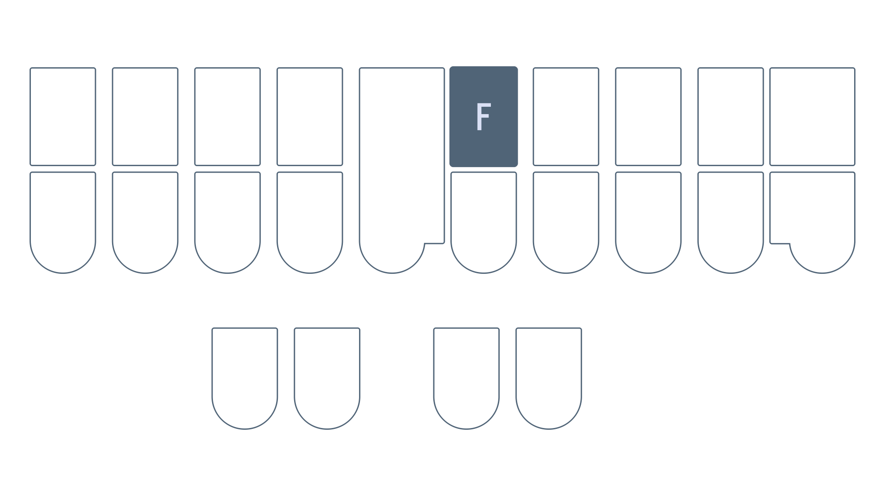
Examples
- solve
SOF - move
PHAOUF - love
HROF
Mnemonics:
Feel free to come up with your own or even suggest some!
- The “v” sound is quite similar to “f” (“v” is simply voiced “f”)
Conflicts with f
With -F as both “f” and “v”, conflicts such as “safe” and “save” can arise; both of these would be written as SAEUF. In these cases, -F is reserved for the word spelled with “f” and *F is used for the word spelled with “v”:
- safe
SAEUF - save
SA*EUF - waif
WAEUF - waive
WA*EUF
Section practice
Right hand m and k
-PLis “-m” as in “calm”
-BGis “k” as in “back”
Examples
- crumb
KRUPL - form
TPORPL - lark
HRARBG - sack
SABG
Mnemonics
- Each of these chords are simply two keys in a row
-PLis the top row pressed by the middle and ring fingers-BGis the bottom row pressed by the middle and ring fingers
- Think “plum” for
-PL
Section practice
Right hand mp, th, and lk
*PLis “-mp” as in “bump”
*Tis “-th” as in “path”
*LGis “-lk” as in “calc”
Examples
- crimp
KR*EUPL - shrimp
SHR*EUPL - bath
PWA*T - moth
PHO*T - elk
*ELG - talc
TA*LG
Mnemonics
Feel free to come up with your own or even suggest some!
*PLis the “m” chord with an asterisk*Tis the-Tkey with an asterisk- The “g” and “k” sounds are quite similar and
*LGis the-LGchord with an asterisk
Section practice:
Single syllable mp, th, and lk words
Chapter 9 test
This chapter’s test consists of all the practice drills in this chapter. Make sure your settings are configured as such:
- Limit word count: 45
- Start from word: 1
- Repetitions: 3
- Sort: random
- Show hint for every word: unchecked
- Hide hint on last repetition: unchecked
- Show hint on misstroke: checked
Click here to access the chapter 9 test
Recommended completion goal
This is only a suggestion if you are unsure of when to move on to the next chapter; it is not a strict requirement!
Aim for 5–20 WPM with 90% accuracy.
You may use the test material as practice!
Chapter briefs
This section is completely optional, but recommended. If you prefer to learn these all at once, they will be covered in chapter 16.
| Word | Brief | Explanation |
|---|---|---|
| about | PW | about |
| after | AF | after |
| that | THA | Drops the last consonant to be useful in phrases |
| their | THAEUR | |
| were | WR | were |
| what | WHA | Drops the last consonant to be useful in phrases |
| which | WEU | Drops the last consonant |
| who | WHO | Matches the spelling |
Enter (and capitalize next word) | R*R |
NOTE: remember that these are briefs; the explanations are not applicable to any arbitrary word.
Practice sentences
- after that, the dog will like you.
- were you in their room?
- it is what it is.
- who were you with?
- it is with which I come about.
- what is in there?
Answers
AF/THA/KW-BG/-T/TKOG/HR/HRAOEUBG/U/TP-PLWR/U/TPH/THAEUR/RAOPL/KW-PLT/S/WHA/T/S/TP-PLWHO/WR/U/W/KW-PLT/S/W/WEU/EU/KOPL/PW/TP-PLWHA/S/TPH/THR/KW-PL
Extra briefs
| Brief | Outline | Explanation |
|---|---|---|
| about the | PW-T | PW + -T |
| that the | THAT | THA + -T |
| what the | WHAT | WHA + -T |
| what you | WHAU | WHA + U |
| were the | WR-T | WR + -T |
| were you | WRU | WR + U |
| who the | WHOT | WHO + T |
Chapter 10: Right hand chords continued
Useful links
- Single syllable right hand n, j, and lj words drill
- Single syllable right hand rv, rf, ng, and nk words
- Single syllable right hand ch, sh, and rch/nch words
- Chapter 10 test
Right hand n, j, and lj
-PBis “-n” as in “lawn”
-PBLGis “-j” as in “grudge”
-LGrepresents two two sounds:- “-lj” as in “bulge”
- “-lch” as in “mulch”
Examples
- fin
TPEUPB - sign
SAOEUPB - lodge
HROPBLG - nudge
TPHUPBLG - bilge
PWEULG - belch
PWELG - squelch
SKWELG
Mnemonics:
Feel free to come up with your own or even suggest some!
- Think “peanut butter” for
-PB -PBLGis a cluster of 4 keys pressed with the right hand middle and ring fingers-LGresembles the “-lg” sound in spelling and is somewhat close to the “-lch” sound
Section practice
Single syllable right hand n, j, and lj/lch words
Right hand rv, rf, ng, and nk
-FRBis “-rv” as in “swerve”
*FRBis “-rf” as in “turf”
The reason
-FRBis “-rv” and not “-rf” is that the former is a bit more common.
-PBGrepresents two sounds:- “-ng” as in “tang”
- “-nj” as in “strange”
*PBGis “-nk” as in “plank”
Examples
- curve
KUFRB - carve
KAFRB - turf
T*UFRB - serf
S*EFRB - ling
HREUPBG - sing
SEUPBG - tank
TA*PBG - sink
S*EUPBG
Mnemonics:
Feel free to come up with your own or even suggest some!
-FRBcontains the-Rkey and also looks like the letter “v” on its side- The “v” and “f” sounds are quite similar; the “-rf” chord is almost the same as the “-rv” but with the asterisk
-PBGis simply just the “n” chord and the-Gkey combined*PBGis just the “-ng” chord with the asterisk (the “-ng” and “-nk” sounds are quite similar)
Section practice
Single syllable right hand rv, rf, ng, and nk words
Right hand ch, sh, and rch
-FPis “-ch” as in “couch”
-RBis “-sh” as in “trash”-RBSis the “shus” sound as in “cautious”
-FRPBrepresents two sounds:- “-rch” as in “arch”
- “-nch” as in “hunch”
Examples
- hitch
HEUFP - patch
PAFP - mash
PHARB - sash
SARB - luscious
HRURBS - spacious
SPAEURBS - larch
HRAFRPB - parch
PAFRPB - crunch
KRUFRPB - punch
PUFRPB
Mnemonics:
Feel free to come up with your own or even suggest some!
-FPand-RBare rows of horizontal keys pressed by the right hand index and middle fingers- These are both *h chords, remember that
-FPcomes before-RBin steno order which matches up with the letter “c” coming before “s” in the alphabet
- These are both *h chords, remember that
- The “-rch”/“-nch” chord
-FRPBis the combination of the previous two
Section practice
Single syllable right hand ch, sh, and rch/nch words
Chapter 10 test
This chapter’s test consists of all the practice drills in this chapter. Make sure your settings are configured as such:
- Limit word count: 45
- Start from word: 1
- Repetitions: 3
- Sort: random
- Show hint for every word: unchecked
- Hide hint on last repetition: unchecked
- Show hint on misstroke: checked
Click here to access the chapter 10 test
Recommended completion goal
This is only a suggestion if you are unsure of when to move on to the next chapter; it is not a strict requirement!
Aim for 5–20 WPM with 90% accuracy.
You may use the test material as practice!
Chapter briefs
This section is completely optional, but recommended. If you prefer to learn these all at once, they will be covered in chapter 16.
| Translation | Brief | Explanation |
|---|---|---|
| be | -B | Single key brief for a common word |
| been | PW-PB | Drops the vowel |
| differ | TKEUFR | Drops the second vowel (using -FR for the “f_r” sound is a common briefing technique) |
| even | AOEFPB | Drops the second vowel |
| of | -F | Single key brief for a common word |
| one | WUPB | Not so much a brief as just an odd word |
| only | OEPBL | only |
| self | SEFL | Uses an inversion of steno order |
| they | THE | they |
| think | THEU | think (easier to write than TH*EUPBG) |
NOTE: remember that these are briefs; the explanations are not applicable to any arbitrary word.
Practice sentences
- they even think of mulch.
- hat and cat differ only in one thing.
- I have been very well.
- self love is a must.
Answers
THE/AOEFPB/THEU/-F/PHULG/TP-PLHAT/SKP/KAT/TKEUFR/OEPBL/TPH/WUPB/THEUPBG/TP-PLEU/SR/PW-PB/SRE/WEL/TP-PLSEFL/HROF/S/AEU/PHUFT/TP-PL
Extra briefs
| Brief | Outline | Explanation |
|---|---|---|
| they are | THER | THE + -R |
| they’re | TH*ER | THE + -R + * |
| one of | WUFPB | WUPB + -F |
Chapter 11: Right hand compound clusters
Useful links
- Right hand -shun, -kshun, and -x words
- Right hand -ment and -let words drill
- Right hand
-BLwords drill - Right hand -shus and -shal words drill
- Chapter 11 test
Intro
All the chords covered so far represent single sounds. However, there are some chords (particularly on the right hand) that can represent multiple syllables. These are referred to as compound clusters.
Right hand -shun, -kshun, and -x
-GSis “-shun” as in “ocean”
-BGSrepresents two sounds:- “-x” as in “tax”
- “-kshun” as in “friction”
Examples
- motion
PHOEGS - caution
KAUGS - fax
TPABGS - tex
TEBGS
-kshun and -x conflicts
Some words like “axe” and “action” conflict with the same outline: ABGS. In these cases, the “-x” sound is given higher priority and “-kshun” sound is relegated to *BGS (same chord, but with the asterisk key).
Examples
- faction
TPA*BGS(sinceTPABGSis already “fax”) - section
S*EBGS(sinceSEBGSis already “sex”)
Mnemonics:
Feel free to come up with your own or even suggest some!
- “mugs in the ocean”
-BGSas the “-x” chord is simply just the combination of the “-k” chord-BGand the-Skey-BGSas the “-kshun” chord overlaps with the “-k” chord-BGand the “-shun” chord-GS
Section practice
Right hand shun, kshun, and x words
Right hand -ment and -let
-PLTis “-ment” as in “moment”
-LTis “-let” as in “scarlet”
Examples
- garment
TKPWARPLT - torment
TORPLT - roulette
RAOULT - wallet
WAULT
Mnemonics:
Feel free to come up with your own or even suggest some!
- Taking the middle out of “ment” gives “mt” which is what
-PLTrepresents - Taking the middle out of “let” gives “lt” which is what
-LTrepresents
Section practice
Right hand -ment and -let words
Unfortunately, there is not a lot of practice material for single stroke words containing these chords.
Right hand -BL and -BLT
-BLrepresents the “-bl” sound as in “global”- When this sound is preceded by a vowel, the
-BLchord can be extended to represent the whole sound as in:- “pliable”
- “possible”
- When this sound is preceded by a vowel, the
-BLTrepresents the “-bility” sound as in “stability”- When this sound is preceded by a vowel, the
-BLTchord can be extended to represent the whole sound as in:- “capability”
- “feasibility”
- When this sound is preceded by a vowel, the
Examples
- rebel
REBL - playable
PHRAEUBL - terrible
TERBL - mobility
PHOEBLT - viability
SRAOEUBLT
Mnemonics:
Feel free to come up with your own or even suggest some!
-BLalready looks a lot like the sounds it represents, it just sometimes skips over an unemphasized vowel.-BLTis just building off of-BLwith a “ity” sound.
Section practice
Right hand -BL and -BLT words drill
Right hand -shus and -shal
-RBSis the “shus” sound as in “cautious”
-RBLis the “shal” sound as in “social”
Examples
- nauseous
TPHAURBS - precious
PRERBS - facial
TPAEURBL - special
SPERBL
Section practice
Right hand -shus and -shal words drill
Unfortunately, there is not a lot of practice material for single stroke words containing these chords.
Chapter 11 test
This chapter’s test consists of all the practice drills in this chapter. Make sure your settings are configured as such:
- Limit word count: 45
- Start from word: 1
- Repetitions: 3
- Sort: random
- Show hint for every word: unchecked
- Hide hint on last repetition: unchecked
- Show hint on misstroke: checked
Click here to access the chapter 11 test
Recommended completion goal
This is only a suggestion if you are unsure of when to move on to the next chapter; it is not a strict requirement!
Aim for 10–20 WPM with 90% accuracy.
You may use the test material as practice!
Chapter briefs
This section is completely optional, but recommended. If you prefer to learn these all at once, they will be covered in chapter 16.
| Translation | Brief | Explanation |
|---|---|---|
| every | EFR | every |
| first | TPEUFRT | Uses an inversion of steno order (-R and -F are swapped) with the -F representing “s” |
| follow | TPOL | follow |
| where | W-R | where |
| could | KUD | |
| would | WUD | |
| should | SHUD | |
| through | THRU | THRAOU is the word “threw” |
NOTE: remember that these are briefs; the explanations are not applicable to any arbitrary word.
Practice sentences
- should you follow them?
- could we first pass through?
- would you know every place?
- where are they?
Answers
SHUD/U/TPOL/THEPL/KW-PLKUD/WAOE/TPEUFRT/PAS/THRU/KW-PLWUD/U/TPHOE/EFR/PHRAEUS/KW-PLW-R/-R/THE/KW-PL
Extra briefs
| Brief | Outline | Explanation |
|---|---|---|
| everyone | EFRPB | EFR + -PB |
| everywhere | WEFRB | EFR + W-R |
| where the | W-RT | W-R + -T |
| through the | THRUT | THRU + -T |
Chapter 12: Wrapping up basic words
Useful links
Great job!
If you’ve been following the recommended pacing, you should now be anywhere from 3 to 7 weeks into your stenography journey! That is very impressive and you should be proud of your perseverance! With this kind of commitment, chances are you will continue to do well in later chapters.
What we’ve learned so far
You should be pretty familiar with the steno layout and you should also understand how to write most single syllable words—even if you’re not very fast yet. We will finally wrap up single syllable words in this chapter before moving onto other topics.
-F as s
Some words end in consonant groups that start with an “s” sound, such as “trust”. In these cases, we would not be able to use -S since it comes after the right hand -T key in steno order. We can instead use -F to represent these “s” sounds.
Examples
- bask
PWAFBG - spasm
SPAFPL - task
TAFBG - trust
TRUFT
Conflicts
This rule occasionally conflicts with words ending in “-ft” and “-st”. In these cases, the “-ft” word is given priority, and *s is used as a secondary chord for “-st”.
- lift
HREUFT - list
HR*EUS - loft
HROFT - lost
HRO*S
Section practice
Miscellaneous orthographic chords
Left hand chords
We’ve already learned a few orthographic chords like AU and AO whose usages depend on spelling rather than pronunciation. There are also a few left hand consonant chords that behave the same way.
- “ph” as in “phase” is written with
TP* - “wr” as in “write” is written with
WR - “wh” as in “when” is written with
WH
All of these except TP* are pretty intuitive as their steno keys match the spelling that they represent.
KR for c in conflicts
When there is a conflict between a word that contains the “soft c” sound and another word that is spelled with an s, use KR.
Examples
- cent
KREPBT- As
SEPBTis already “sent”
- As
- cite
KRAOEUT- As
SAOEUTis already “sight”
- As
KH for hard c spelled ch
Words spelled with “ch” can sometimes be homophones with words spelled with only a single “c”. In these cases, we use K for the words spelled with a “c” and KH for words spelled with “ch”.
KH can also be used in general for words spelled with “ch” but pronounced with a “hard c”. For example, in the word “choreography”, the initial consonant is a “hard c” so K would typically be used on the left hand. However, using KH is also a valid choice. This is helpful if your first instinct is to use the “ch” spelling to form the left hand consonant.
NOTE: the dictionary is not complete when it comes to “ch” words pronounced with a “hard c” and written with
KH. I would recommend sticking toKand only usingKHwhen there is a conflict. However, you are completely free to add these if you wish.
Examples
- chord
KHORDKORDis already “cord”
- charisma
KHA/REUS/PHAKA/REUS/PHAis also valid
-S for all s
Use -S for an ending “s” letter, regardless of if it is pronounced as a “z”.
Examples
- fuse
TPAOUS - cruise
KRAOUS
Conflicts
You will inevitably run into some conflicts such as “race”, “raise”, “raze”, and “raiz”. -S is given to “race” since it has an “s” sound, but how do we deal with the rest? It’s actually entirely up to you as to how you might want to proceed. Conflicts such as these are tricky because they don’t appear very often; you’re better off memorizing the exceptions than trying to learn rules to deal with them.
By default, Lapwing gives -Z to “raise” since it’s quite common and is spelled with an “s” (thereby giving it higher priority, in a sense). To write “raze”, you’d use an alternative vowel chord: RAEZ. Finally, for “raiz”, you could use the asterisk key. Although, this word isn’t even in the default dictionary. Thus, you’d write these words like so:
- “race”
RAEUS - “raise”
RAEUZ - “raze”
RAEZ - “raiz”
RA*EUZ
This illustrates how messy the English language can be and how designing a theory to work around all of these conflicts without any arbitrary rules/briefs can be a difficult task. When you run into conflicts with more than three words in the future, do remember that (unless explicitly stated) it is perfectly acceptable (even expected!) to change around some outlines. It’s best to create outlines that make sense to you instead of memorizing someone else’s personal intuition.
y sound without the letter y
If you encounter a word that has the “y” sound, only use KWH if it is spelled with a “y”. If it isn’t spelled with a “y” don’t use any left hand consonant chord.
Examples
- yes
KWHES - yep
KWHEP - use
AOUS - usual
AOURB/WAL- There aren’t, unfortunately, a lot of single stroke words to demonstrate this
NOTE:
AOURBis also defined as “usual” in the default dictionary. This is a briefing style where the first stroke(s) of a write-out is defined as the full word.
Section practice
Left hand single syllable orthographic chords drill
It’s very recommended that you complete this drill.
The stroke separator
So far we have only been looking at single stroke words. We will soon look at words that require multiple strokes to be written. To notate these multistroke outlines, we use the slash character / to separate strokes.
For example, to write the outline TPEUL/-PL, you would press TPEUL, release all the keys, and then press -PL.
When sounds can’t follow steno order
Sometimes, it is impossible to write a single syllable word using in a single stroke (see the examples below). In these cases, write as much of the word as you can in a single stroke, and then complete the rest using the corresponding right hand key or chord that finishes the word. Note that some right chords are different to their canonical form when using this technique:
- To end a word with “-t”, use
*T - To end a word with “-f” or “-v”, use
*F
There will be no practice material for this section, but do keep this technique in mind.
Examples
- film
TPEUL/-PL - helm
HEL/-PL - help
HEL/-P - kelp
KEL/-P - list
HREUS/*T- Also
HR*EUS(recommended, see note below)
- Also
- thirst
THEURS/*T- Also
TH*EURS(recommended, see note below)
- Also
- sixth
SEUBGS/*T - elf
EL/*F - shelf
SHEL/*F - peddle
PED/-L - saddle
SAD/-L
NOTE: remember that
*Scan be used to represent the “-st” cluster when-Fis not available. It is highly recommended you use*Sinstead of splitting these words into two strokes.
Overlapping compound clusters
Some words end in a compound cluster that was covered in the previous chapter. However, there may be another sound that prevents the compound cluster chord from being included. For example, the word “partial” ends in a “-shal” sound which can be written with -RBL. However, it is preceded by an “r”. Therefore, the first stroke has to be PAR. Since this already contains the -R key, it’s not possible to insert -RBL into this stroke.
NOTE:
PARBLis defined as “partial” in the default dictionary. You’re free to use this, but keep in mind it is considered more of a brief since the “r” is dropped.
There are two ways to deal with these scenarios. The first method involves writing as much as the word as possible, and then splitting the remaining compound cluster as a separate stroke. For the word “partial”, this results in PAR/-RBL. This is a lot like the previous section where sounds break steno order.
The second method uses the syllabic splitting technique found in chapter 15. However, instead of using a compound cluster, the second stroke utilizes the whole keyboard to represent an entire syllable. This results in PAR/SHAL.
Either method is valid, but given that syllabic splitting has not been introduced yet, I would recommend using the first method for now.
Examples
- rumble
RUPL/-BL - possible
POS/-BL - credibility
KRED/-BLT - solubility
SOL/-BLT - bracelet
PWRAEUS/-LT - pamphlet
PAPL/*F/-LT - fragment
TPRAG/-PLT - parchment
PAFRPB/-PLT - martial
PHAR/-RBL - partial
PAR/-RBL - conscious
KOPB/-RBS - noxious
TPHOBG/-RBS
Right hand xt
-GTis “-xt” as in text
There are only a handful of words in English that end in “-xt” and only two that are one syllable long in the Lapwing dictionary. You can pretty much just memorize these as briefs.
Examples
- text
TEGT - next
TPHEGT
Conflicts between chords and individual keys
Some groups of words like “slug” and “shrug” would normally be given the same steno outline without any additional rules: SHRUG. In this case, the HR chord can either represent “l” or “hr”—Lapwing generally assigns lower priority to the word where the keys match one to one with the letters. The asterisk is used to different between the two:
- slug
SHRUG - shrug
SHR*UG
NOTE: you may occasionally run into inconsistencies in the default dictionary that contradict this rule. If you spot any, please let me know! However, do keep in mind that you’re at a stage where you should be tailoring your own dictionary. If you’d like to change this rule and switch around the priorities, go for it!
-al- words
For some American speakers, the “l” in words like “palm” aren’t audible at all. Instead of having to include this sound in the steno stroke, Lapwing essentially treats this as silent. Therefore, this word would be written like PAUPL. This makes it easier to write in one stroke rather than two: PAUL/-PL.
Remember: even though this word is spelled with a single “a”, the vowel is closer to the one in “cot”
KOTthan “cat”KAT, so we cannot simply use theAkey; we need to useAU.
Examples
- calm
KAUPL - chalk
KHAUBG - psalm
SAUPL- Note that the “p” is silent
- stalk
STAUBG
No test this chapter!
Chapter briefs
This section is completely optional, but recommended. If you prefer to learn these all at once, they will be covered in chapter 16.
| Translation | Brief | Explanation |
|---|---|---|
| also | HR-S | also |
| animal | PHAPBL | Various vowels dropped and steno order out the wazoo (“anml” → “manl”) |
| any | TPHEU | First vowel dropped and EU used as the long e sound |
| help | HEP | Dropped “l” consonant |
| other | OER | Dropped “th” consonant |
| mother | PHO*RT | Folded -R key is in the middle of the word, but represents a sound on the end |
| mother | PHOER | Drops the “th” consonant |
| your | KWHUR | The initial “y” consonant was recently changed. If KWHUR does not output correctly, you can either use the lookup tool to learn a different brief, or update your dictionary and relearn the initial “y” chord as KWH. |
| many | PHA*EPB |
NOTE: remember that these are briefs; the explanations are not applicable to any arbitrary word.
Practice sentences
- it is also an animal!
- I will help him.
- mother will not like it.
- many do not need your stuff.
Answers
T/S/HR-S/APB/PHAPBL/TP-BGEU/HR/HEP/HEUPL/TP-PLPHO*RT/HR/TPHOT/HRAOEUBG/T/TP-PLPHA*EPB/TKO/TPHOT/TPHAOED/KWHUR/STUF/TP-PL
Extra briefs
| Brief | Outline | Explanation |
|---|---|---|
| anyone | TPHEUPB | TPHEU + -PB |
| anything | TPHEUG | TPHEU + -G (-G is used for “-ing”) |
Chapter 13: Prefixes and suffixes
Useful links
- Words with -y and -ly suffixes drill
- Words with -ar, -or, and -er suffixes drill
- Words with -ful and -ness suffixes drill
- Right hand ment and let words
- Right hand
-BLwords drill - Right hand
-BLTwords drill - Right hand
KWRsuffix words drill - Chapter 13 test
Intro
For words with more than one syllable, outlines with multiple strokes are used. There are two primary techniques: affix strokes (prefixes and suffixes) and syllabic splitting. The former is slightly more straightforward and is covered in this chapter.
Prefix strokes
Every translation so far found in examples or exercises have been regular words without any special formatting. For these words, Plover will insert a space before every word. To see how this works behind the scenes, open the main window of Plover, and go to Tools → Add Translation. Writing STROEBG into the Strokes field will show the following:
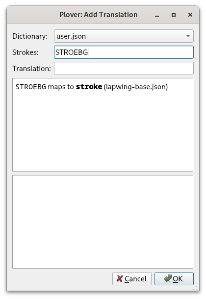
Compare this to prefix strokes; writing PRAOE (the prefix stroke for “pre^”) into the Strokes field results in:

Here, the curly braces denote that there is special formatting rules contained inside the braces. The caret tells Plover to suppress the space where it is located; any translation of the form {abc^} is a prefix.
Prefix strokes enable writing words such as “preview” like so: PRAOE/SRAOU. Most prefix strokes are fairly intuitive and take precedence when they conflict with other translations. For example, the “for^” prefix as in “forget” TPOR/TKPWET is written as TPOR while the word “for” is briefed. It’s not necessary to memeorize many of these prefix strokes.
Common Prefix Strokes
- a^
A- As in “around”
A/ROUPBD
- As in “around”
- co^
KOE- As in “costar”
KOE/STAR
- As in “costar”
- de^
TKAOE- As in “deplane”
TKAOE/PHRAEPB
- As in “deplane”
- for^
TPOR- As in “forgo”
TPOR/TKPWOE
- As in “forgo”
- in^
EUPB- As in “infix”
EUPB/TPEUBGS
- As in “infix”
- mis^
PHEUS- As in “mistake”
PHEUS/TAEUBG
- As in “mistake”
- non^
TPHOPB- As in “nonstop”
TPHOPB/STOP
- As in “nonstop”
- pro^
PROE- As in “protip”
PROE/TEUP
- As in “protip”
- re^
RAOE- As in “retake”
RAOE/TAEUBG
- As in “retake”
- sub^
SUB- As in “subway”
SUB/WAEU
- As in “subway”
Prefix usage
It is difficult to write certain words using prefixes alone. For example, KOPB/TPAOUS may be a valid outline for “confuse”, but this requires knowing if KOPB is a prefix stroke. Furthermore, “fuse” is not the root word of “confuse”—the two words aren’t related in meaning. Syllabic splitting is used for this word instead (covered in chapter 15).
For now, only use prefix strokes when they make sense semantically. A prefix stroke should modify a root word that can exist on its own.
In this context, a root word is any group of letters that can exist by itself as a word; “do” would be considered the root word in “redo”, but “tain” in “contain” would not be considered one (“tain” is not a word).
Prefixes with different pronunciations
English pronunciation differs from person to person, but even a single speaker may pronounce a word differently depending on the context. For example, the word “defect” can be pronounced with a long e TKAOE/TKEFBGT or a short e TKE/TKEFBGT depending on if it is a noun or a verb.
Here is a non-exhaustive list of some alternative prefix strokes:
- “de-”
TKE - “pre-”
PRE - “pro-”
PRO - “re-”
RE
This chapter later covers looking up prefixes and suffixes which is handy for finding these alternative prefix strokes.
Practice material?
There is no practice material for this section. It’s not important to explicitly know and memorize prefix strokes as they tend to be implicitly used with the syllabic splitting technique (to be covered later).
Suffix strokes
Much like how a prefix stroke attaches to the next word, a suffix stroke attaches to the previous word. Unlike prefix strokes, however, suffixes tend to be less intuitive and most have to be memorized. This section is split into smaller subsections with different “families” of suffix strokes to hopefully make them easier to remember.
It is very important to understand when it is appropriate to use a suffix. In most cases, they can only be used to modify a root word (much like prefix strokes).
Pay careful attention to the information in each subsection telling you when it is appropriate to use those suffix strokes.
* suffixes
The following suffixes all contain a single vowel key, an asterisk, and the -R.
| Stroke | Suffix | Example outline | Example translation |
|---|---|---|---|
A*R | ^ar | KREL/A*R | cellar |
O*R | ^or | ABGT/O*R | actor |
*ER | ^er | TAOEFP/*ER | teacher |
In chapter 15, you will learn that
KWRcan also represent a glide.KWRAR,KWROR, andKWRERwould actually represent ^iar, ^ior, and ^ier, respectively. For all other suffixes, these are merged in the same stroke starting withKWR. However, these three suffixes have a lot more potential conflicts, so they are kept separate, so these suffixes follow a different pattern.
Use these suffixes only to modify a root word. Ensure that the root word relates to the full word semantically.
Examples of correct usage
- upper
UP/*ER - player
PHRAEU/*ER - planar
PHRAEPB/A*R - hangar
HAPBG/A*R - tormentor
TORPLT/O*R - sailor
SAEUL/O*R
Examples of wrong usage
- imposter
EUPL/POFT/*ER❌- “impost” does not refer to a deceptive action in the same way “imposter” refers to the person who partakes in this action
- mutter
PHUT/*ER❌- “mutter” does not relate to “mutt” (slang for a dog)
- pillar
PEUL/A*R❌- “pill” refers to a medicinal substance while “pillar” refers to an upright post
- sugar
SHUG/A*R❌SHUGis not a word
- humor
HAOUPL/O*R❌HAOUPLis not a word
- mentor
PHEPBT/O*R❌- “ment” is not the root of “mentor”
These are correctly written with syllabic splitting covered in chapter 15.
Practice material
Words with -ar, -or, and -er suffixes drill
5–10 minutes is sufficient for this drill.
Right hand chord suffixes
These suffixes are composed entirely of consonant keys on the right hand.
| Stroke | Suffix | Example outline | Example translation |
|---|---|---|---|
-FL | ^ful | HEL/-P/-FL | helpful |
-PBS | ^ness | EUL/-PBS | illness |
Use these suffixes only to modify a root word. Ensure that the root word relates to the full word semantically.
Examples of correct usage
- hopeful
HOEP/-FL - rightful
RAOEUT/-FL - ripeness
RAOEUP/-PBS - thickness
THEUBG/-PBS
Both “ful” and “ness” are rarely used in English as non-suffixes so it’s difficult to find examples of incorrect usage.
Practice material
Words with -ful and -ness suffixes drill
Right hand compound cluster suffixes
Like the last subsection, these suffixes are also composed entirely of consonant keys on the right hand.
| Stroke | Suffix | Example outline | Example translation |
|---|---|---|---|
-PLT | ^ment | TRAOET/-PLT | treatment |
-BLT | ^ability or ^ibility | EUPB/-BLT | inability |
-BL | ^able | PHRAEU/-BL | playable |
-LT | ^let | EUPB/-LT | inlet |
These suffixes can be used whenever as they are also compound clusters.
Examples: as a root word + suffix
In these words, the suffix is used to modify a root word.
- basement
PWAEUS/-PLT - movement
PHAOUF/-PLT - possibility
POS/-BLT - sensibility
SEPBS/-BLT - readable
RAED/-BL - viewable
SRAOU/-BL - outlet
OUT/-LT - sublet
SUB/-LT
Examples: as a compound cluster
In these words, the suffix is used as a compound cluster; notice how the group of letters before the suffix are not root words related to the full translations.
- cement
SE/-PLT - ferment
TPER/-PLT - probability
PROB/-BLT - pliability
PHRAOEU/-BLT - humble
HUPL/-BL - arable
AEUR/-BL - omelet
OPL/-LT - bullet
PWU/-LT
Compound clusters in a single stroke
Several of these examples can be written in one stroke by putting the suffix chord into the first stroke. The above examples are only to illustrate these how these compound clusters have the second function of behaving as suffix strokes.
For these chords, it is recommended to include the suffix chord in the first stroke for a slight speed advantage. To determine if an outline can be compressed into one stroke, take into account steno order and whether any keys are being overlapped.
For example, SEPLT is perfectly valid as none of the keys in SE overlap with the keys in -PLT. However, to write “humble” in one stroke, the -BL chord would have to overlap with the -PL chord in the first stroke as -B comes in between -P and -L in steno order.
The following are the same words from above but with the compound cluster in the first stroke:
- cement
SEPLT - ferment
TPERPLT - pliability
PHRAOEUBLT - arable
AEURBL - bullet
PWULT
The rest of the examples are not possible to write in one stroke:
- probability
PROB/-BLT-Bkey overlaps in both strokes
- humble
HUPL/-BL-Lkey in the second stroke overlaps with the-PLchord in the first stroke
- omelet
OPL/-LT-Lkey overlaps in both strokes
NOTE: although overlapping these strokes is not valid in Lapwing theory, they are perfectly valid briefs as long as there are no entries already existing in the dictionary. Feel free to add/use
PROBLT,HUPBL, orOPLTas briefs.
Practice material
The -PLT, -LT, and -BL compound clusters should already be already be familiar, however, the practice material is listed below as a refresher if needed.
KWR suffixes
The KWR chord has two uses in Lapwing theory. It is widely used in suffixes where it could be thought of as a linker chord without any associated sound; its job is simply to connect to the previous word. This subsection has many suffix strokes to memorize, but they should hopefully be somewhat intuitive as they resemble their phonetic sounds to some degree.
| Stroke | Suffix | Example outline | Example translation |
|---|---|---|---|
KWRAL | ^al | SPAOEUPB/KWRAL | spinal |
KWRAPBT | ^ant | SAOEL/KWRAPBT | sealant |
KWRAEUGS | ^ation | TPHROET/KWRAEUGS | flotation |
KWRAOEUZ | ^ize | PHOEBL/KWRAOEUZ | mobilize |
KWROUT | ^out | HOELD/KWROUT | holdout |
KWREUF | ^ive | TPEFT/KWREUF | festive |
KWREUFPL | ^ism | TAOUR/KWREUFPL | tourism |
KWREUFT | ^ist | ART/KWREUFT | artist |
KWREUPB | ^in | PHRUG/KWREUPB | plugin |
KWREUBG | ^ic | PWAEUS/KWREUBG | basic |
KWREPB | ^en | SOFT/KWREPB | soften |
Use these suffixes only to modify a root word. Ensure that the root word relates to the full word semantically.
Examples of correct usage
- coolant
KAOL/KWRAPBT - bailout
PWAEUL/KWROUT - flirtation
TPHREURT/KWRAEUGS - stylize
STAOEUL/KWRAOEUZ - active
ABGT/KWREUF - realism
RAEL/KWREUFPL - purist
PAOUR/KWREUFT - herein
HAOER/KWREUPB - cubic
KAOUB/KWREUBG - rotten
ROT/KWREPB
Examples of incorrect usage
- pedant
PED/KWRAPBT❌- “ped” unrelated to “pedant”
- captive
KAPT/KWREUF❌- “capt” unrelated to “captive”
Practice material
Right hand KWR suffix words drill
EU suffixes
The suffixes in this subsection contain the EU vowel and some consonant on the left hand. While the EU chord represents the short i vowel as in “kiss”, EU is also used for the long e vowel as in “tee” under some circumstances.
This comes from Plover theory’s main.json and it is unfortunately an arbitrary rule that would be difficult to change Lapwing theory. These rules are covered more formally in syllabic splitting.
One such circumstance where EU represents the long e sound is in the following suffixes:
| Stroke | Suffix | Example outline | Example translation |
|---|---|---|---|
KWREU | ^y | KRAEUZ/KWREU | crazy |
HREU | ^ly | TPEURPL/HREU | firmly |
Use these suffixes only to modify a root word.
Remember to not double consonants between strokes. If you are writing a word that already ends in “l”, use
KWREUinstead ofHREU(see “hilly” example below).
Examples of correct usage
- chatty
KHAT/KWREU - hilly
HEUL/KWREU - freely
TPRAOE/HREU - mostly
PHOEFT/HREU
Examples of incorrect usage
- city
SEUT/KWREU❌- This would be “sitty”
- hilly
HEUL/HREU❌- Cannot double the “l”
- lily
HREUL/KWREU❌- “lil” is not the root word of “lily”
Practice material
Words with -y and -ly suffixes drill
Since this only contains two suffixes, it is not necessary to spend too long on this drill. 5 minutes is sufficient.
Suffixes and orthography
The spellings of some words in examples and exercises so far have not been entirely consistent with a prefix stroke modifying a root word. For example, “purist” was listed above as PWAOUR/KWREUFT, but the root word is really spelled “pure” with an “e” at the end.
Here are some other examples where adding a suffix to a root word changes its spelling:
- “haste” + “-y” → “hasty”
- “e” is removed
- “lucky” + “-ly” → “luckily”
- “y” changed to “i”
- “base” + “-ic” → “basic”
- “e” is removed
It is not necessary to think about these spelling differences consciously with suffix strokes; the Lapwing dictionary and the Plover steno engine automatically handles these spelling quirks.
- hasty
HAEUFT/KWREU - luckily
HRUBG/KWREU/HREU - basic
PWAEUS/KWREUBG
Prefix priority
When there are conflicts between prefixes strokes and words, the former will be given higher priority for the primary outline. The words will instead be briefed. This allows writing complicated words fairly intuitively without having to explicitly remember prefixes. Of course, this does come at the cost of having to memorize more arbitrary briefs. Since common words are often briefed, however, it does not require significantly more mental effort.
| Prefix/word | Prefix Outline | Recommended word outline(s) | Explanation |
|---|---|---|---|
| a | A | AEU | A* is already used. |
| bi^ (by) | PWAOEU | PWEU | There is a three way conflict between “by”, “bye”, and “buy”. |
| be | PWE | -B | Useful in phrase briefs. |
| for | TPOR | TP-R or TPAURT | Useful in phrases like “for the” TP-RT. |
| in | EUPB | TPH | Useful in phrases like “in the” TPH-T. |
| or | OR | AOUR or AUR | O*R is already used. |
| out | OUT | AOUT | Alternative vowel chord. |
| on | OPB | AUPB | Alternative vowel chord. |
| tri^ (try) | TRAOEU | TRAO*EU or TREU | The first is the more “formal” outline, but the second matches the pattern with “by”. |
You will see this table again in later chapters.
Looking up prefixes and suffixes
The Plover’s lookup tool can be used to find prefix and suffix strokes not listed in this chapter. In Plover’s main window, press Tools → Lookup. Type in the letters that make up the translation and the tool will show outlines for prefixes, suffixes, and regular words; the dictionary formatting with the curly braces and carets is not required.

Tailoring your own dictionary to your understanding of etymology
Trying to use affix strokes only when they make sense semantically can be tricky. It is unreasonable to require learning the etymology of every word before one can write it. In some words, it is somewhat obvious when a suffix stroke shouldn’t be used, but this should be up to the individual’s discretion.
For example, the Lapwing dictionary doesn’t view “cop” as the root word of “copper”. This is because “cop” refers to a police officer, and “copper” is an element. This reasoning is very obvious to me. However, “copper” has another meaning; it is also slang for police officer. “Cop” is simply just a shortened version of “copper”. That being said, this usage is not part of my dialect—I have never heard anyone in speech say “copper” to mean police officer. Therefore, I don’t consider “cop” and “copper” to be related semantically, and I don’t use affix strokes.
Maybe for you, these two words are very related. In this case, you should definitely add
KOP/*ERfor “copper”! Although, this particular word already works (without being explicitly defined) because of the orthography rules.
It is completely acceptable bend the rules about modifying root words with affixes. It is not necessary to add entries that only follow the “correct etymology”. Outlines should be quick to recall. Having to look up origin and history of a word defeats this purpose. Steno is highly personal—one should use their own understanding and intuition.
NOTE: before adding your own entries, I highly encourage you to read past chapter 15. It covers the other method for writing multisyllable words. Most words in the default Lapwing dictionary can be written with this technique, while affix stroke usage tends to be more strict.
Seemingly incorrect prefix usage
This section mentions topics that have not yet been covered, but if you tend to use the lookup tool a lot, make sure to read it over. There are several outlines in the dictionary that may seem like they are using prefix strokes incorrectly.
Regular prefixes in syllabic splitting
In chapter 15, you will learn to write words like “trident” as TRAOEU/TKEPBT. It may seem like this is violating prefix usage since “dent” is not the root word of “trident”—the two are unrelated in meaning. However, this outline is actually just a a result of the syllabic splitting method covered in chapter 15. Syllabic splitting does not care if TRAOEU is a prefix or not.
Keep this in mind when you use the lookup tool. If you spot an outline that uses an affix incorrectly, the outline in question is just using syllabic splitting. It’s not that prefix rules are being broken; the outline has just been constructed use an entirely different method.
Brief versions of multistroke prefixes
Prefix outlines do not have to be one stroke long. Using syllabic splitting, it is actually possible to construct prefix outlines with multiple strokes. For example, the prefix auto^ is written as AU/TOE. Again, you may sometimes see outlines like AU/TOE/PHAEUT for “automate” when using the lookup tool. This may seem incorrect, but remember that these outlines aren’t actually using a prefix stroke, only syllabic splitting.
For these multistroke prefixes, there are sometimes briefer one-stroke versions that can be used instead. For AU/TOE, there is OEUT as in OEUT/PHAEUT for “automate”. This may also seem like incorrect usage of a prefix stroke. However, keep in mind that OEUT is a brief-y prefix stroke. Regular one-stroke or multistroke prefixes that are not briefs are still supposed to be used strictly to alter a root word.
Chapter 13 test
This chapter’s test consists of all the practice drills in this chapter. Make sure your settings are configured as such:
- Limit word count: 45
- Start from word: 1
- Repetitions: 3
- Sort: random
- Show hint for every word: unchecked
- Hide hint on last repetition: unchecked
- Show hint on misstroke: checked
Click here to access the chapter 13 test
Recommended completion goal
This is only a suggestion if you are unsure of when to move on to the next chapter; it is not a strict requirement!
Aim for 10–40 WPM with 90% accuracy.
You may use the test material as practice!
Chapter 14: Suffix keys and compound words
Useful links
Suffix keys
One special type of suffix stroke is the suffix key; these are suffix strokes that contain only one key. There are four on the right hand side which are useful for changing the tense of a verb or for pluralizing nouns.
| Stroke | Suffix | Example outline | Example translation |
|---|---|---|---|
-G | ^ing | PAT/-G | patting |
-S | ^s | KAT/-S | cats |
-D | ^ed | TKPWHRAOU/-D | glued |
-Z | ^s | SAOEUD/-Z | sides |
NOTE: while
-Sand-Zhave the same definition, you are expected to use-Zexclusively as a suffix key.
Examples of correct usage
- fasting
TPAFT/-G - wedging
WEPBLG/-G - typed
TAOEUP/-D - served
SEFRB/-D - faces
TPAEUS/-Z - knives
TPHAOEUF/-Z
Folding
This section on folding is mostly for your interest only. It is not a recommended technique at this point.
Folding is an advanced technique where extra keys are included in a stroke regardless of steno order. Folding a suffix key into a stroke is only possible if they key is not already present in another chord. Of the examples above, the following can be written with folded suffix keys:
- fasting
TPAFGT - knives
TPHAOEUFZ - served
SEFRBD - typed
TAOEUPD
To pluralize words ending in -T, normally the -Z key is used. For example, “crates” is KRAEUT/-Z. However, folding will result in the following stroke:
Some theories will dictate pressing the -T with the ring finger and the -Z with the pinkie finger. However, this is not a technique used in Lapwing. Instead, the proper way to pluralize the word in one stroke uses the -S key: KRAEUTS.
Plover’s steno engine and folded suffix keys
This technique of including a suffix key in the last stroke is “baked” into the English steno engine in Plover. To illustrate this, writing the stroke HAEPZ, will output “happies”. However, this isn’t actually defined in the Lapwing dictionary:
Plover recognizes that the outline HAEP is defined as “happy” (this is a Lapwing/Plover brief) and so tries to fold the -Z suffix key into the translation. Because of the orthography rules built into the English steno engine, Plover removes the ending “y” and adds “ies” to the translation.
This happens with all of the suffix keys—try out HAEPD, HAEPS, and HAEPG.
Should you use folding?
Using the Plover lookup tool, you can find a lot of entries with folded suffix keys. In fact, you won’t find many entries where the suffix keys aren’t folded into the previous stroke. Despite this, it is recommended that you do not fold suffix keys.
Folding can lead to conflicts such as:
| Outline | Canonical Word | Folding Conflict |
|---|---|---|
SAOES | cease | sees |
KRAEUZ | craze | crays |
HRAEUZ | laze | lays |
PHRAEUG | plague | playing |
RAEUZ | raise | rays |
SAOEZ | seize | sees |
While folding can save a stroke for several words, it may not always be faster. Trying to remember any potential conflicts may introduce hesitation; the resulting folded outline may be harder to press (taking longer to stroke); and folding one of these keys may make it easier to accidentally misstroke.
Pressing -G, -S, -D, or -Z as a separate stroke is not significantly slower than folding; single key strokes are fast to write and much less error prone than folding. That being said, folding is a personal choice, and you are more than welcome to try it out.
Section practice
The A “prefix” key
While not nearly treated as specially as the suffix keys, the A key on its own is a prefix stroke. Contrary to other prefixes that should be used to modify a root word, this stroke can be used entirely on its own without any regard to the semantic meanings of the strokes.
Examples
- about
A/PWOUT - accretion
A/KRAOEGS - allow
A/HROU - amend
A/PHEPBD
Compound words
Compound words (more specifically, closed compound words) consist of two words joined together with nothing in between. To write these, asterisk the first stroke of the second word. If there is already an asterisk in this stroke, leave it as is.
Examples
- candlelight
KAPBD/-L/HRAO*EUT - grasshopper
TKPWRAS/HO*P/*ER - eyelash
AOEU/HRA*RB - teamwork
TAEPL/WO*RBG
Section practice
No test this chapter!
Chapter 15: Syllabic splitting
Useful links
Syllabic splitting basics
Earlier chapters covered affix strokes and compound words. Syllabic splitting is the last technique for writing multisyllable words that cannot be written in one stroke. Words are split roughly into their syllables based on the following rules:
- Split the word using other methods (prefixes, suffixes, and compound words)—even just partially
- Split each remaining part by its syllables so that every stroke after the first begins with a consonant
- Ensure not to double consonants across separate strokes
- With multiple ways of splitting syllables, preserve the natural sounds of the word (tip: think of where the inserted pauses would maintain the original sound).
Basic examples and explanations
components
-
First notice that this word can be split into a root word and a suffix: component/s.
-
There are three possibilities for the first stroke: co/mponent/s, com/ponent/s and comp/onent/s. Take note of what the second stroke has to begin with in each of these scenarios (underlined letters).
-
The first scenario is not correct as the second stroke would have to start with “mp” (not a valid left hand consonant). The third scenario is also incorrect since the second stroke begins with a vowel. Only the second method is valid: com/ponent/s.
-
To split the remaining “ponent” group, remember that every stroke must begin with a consonant. The only way to do this is by splitting it as: po/nent.
Full outline: KOPL/POE/TPHEPBT/-Z
shatterproof
-
This word is clearly a compound of “shatter” and “proof”. The last stroke should therefore be
PRAO*F. -
It wouldn’t make sense to use a suffix stroke for the “^er” part, so use syllabic splitting.
-
To begin the second stroke with a consonant, it must be split as: sha/tter.
Full outline: SHA/TER/PRAO*F
exam
-
There are no prefixes, suffixes, or compound words that can be used.
-
Since there is no consonant after the “x”, it should be split across the two strokes.
Full outline: EBG/SAPL
Whenever “x” has to be split across two strokes, use -BG in the first stroke and S in the second.
simile
-
This word does not contain any prefixes, suffixes, and is not a compound word.
-
As each stroke cannot begin with a vowel, there is only one way to split this word: si/mi/le.
Full outline: SEU/PHEU/HRAOE
dependent
-
First split this word into a root and a suffix: “depend” + “-ent”; the last stroke is
KWREPBT. -
There is only one way to split “depend” so that the second stroke begins with a consonant: de/pend.
Full outline: TKE/PEPBD/KWREPBT
ally
-
There are no prefixes, suffixes, or compound words that can be used.
-
Split this in a way that every stroke begins with a consonant results in: a/lly
Full outline: A/HRAOEU
ludicrous
-
No prefixes, suffixes, or compound words are available to use.
-
Since the second stroke must start with a consonant, the first stroke can only contain the first consonant and vowel: lu/dicrous.
-
There are two ways of splitting the rest of the word: lu/dic/rous and lu/di/crous.
-
The latter is more natural as the “cr” in “ludicrous” is closer to one sound than two distinct ones.
Full outline: HRAOU/TKEU/KRUS
wrinkly
-
This can be split into wrinkl(e)/y with the
KWREUsuffix. -
The root word “wrinkle” should be written as
WR*EUPBG/-L.
Full outline: WR*EUPBG/-L/KWREU
efficient
-
No affixes or compound words are available to use.
-
There is only one way to split this word so that every stroke begins with a consonant: e/ffi/cient
Full outline: AOE/TPEU/SHEPBT or E/TPEU/SHEPBT
More examples
- compromise
KOPL/PRO/PHAOEUSorKO*PL/RO/PHAOEUS - dispatcher
TKEUS/PAFP/*ER - hubris
HAOU/PWREUS - inadvertent
EUPB/AD/SRER/TEPBT - occasion
OE/KAEUGS - parliament
PAR/HRAPLT - reassured
RE/A/SHUR/-DorRAOE/A/SHUR/-D - sentiment
SEPB/TEUPLT - example
EBG/SA*PL/-L
Consonant group ambiguity
Some consonant groups contain two or more distinct consonants, and it becomes ambiguous as to how to split them. For example, the word “hydrate” can be written as HAOEUD/RAEUT or HAOEU/TKRAEUT depending on where the “dr” consonant cluster is split. In these scenarios, use the outline that represents how the sounds are grouped. When saying this word, the “dr” group sounds less like two distinct consonants, and more like a single consonant. Therefore, “hydrate” should be written like HAOEU/TKRAEUT.
The strokes
HAOEUD/RAEUTwould instead be the phrase “hide rate”.
In a word like “guardrail”, the “dr” consonants are spoken more like two distinct sounds. Therefore, this word would be split in between the “d” and “r” (even putting aside the fact that this is a compound word).
Unfortunately, there is no standardized method for dealing with this ambiguity. A lot of it is based on my own intuition as a speaker of North American English. For example, I would split “astronomy” as A/STRO/TPHO/PHEU and “astronaut” as AS/TRO/TPHAUT just based on the stress and how the consonant groups sound.
Here are some tips that may be helpful for understanding where to split consonant groups:
- _r consonant groups are kept together on the left hand
- betray
PWE/TRAEU - madrigal
PHA/TKREU/TKPWAL - okra
OE/KRA - regress
RE/TKPWRES
- betray
- consonant groups with two sounds are split in the middle (balanced between the two strokes)
- discover
TKEUS/KO/SRERTKEU/SKO/SRER❌
- pastor
PAS/TORPA/STOR❌
- discover
- consonant groups with three or more sounds are dependent on stress
- astray
A/STRAEU - astronaut
AS/TRO/TPHAUT - astronomy
A/STRO/TPHO/PHEU - distribute
TKEUS/TREU/PWAOUT
- astray
NOTE: these rules are not entirely consistent. If none of the outlines in the lookup tool work for you, add your own!
Section practice
Basic syllabic splitting drill
KWR as a silent linker
Sometimes it is not possible to start a stroke with a consonant. In these cases, use KWR as a silent linker chord to join a stroke to the previous.
KWR with the -R key
In North American English, the letter “r” sometimes alters the sound of the vowel such as in the following examples:
car KAR | cat KAT |
pay PAEU | pair PAEUR |
cue KAOU | cure KAOUR |
hem HEPL | her HER |
When this occurs in multistroke words, treat the -R key as a vowel that is included in the previous stroke. Since the next stroke cannot start with R, use KWR.
Examples
- carry
KAEUR/KWREU - fury
TPAOUR/KWREU - hurry
HUR/KWREU - berry
PWER/KWREU
Why the EU chord?
The examples above all end in the long e sound (/i/) as in “tee”—so why EU? Well, to be quite honest, I’m not entirely sure myself. This is simply what Plover theory sometimes does and it’s just what I’ve gotten used to. This does, unfortunately, mean that Lapwing theory has inherited the quirk.
That being said, the usage of EU vs AOE is more defined in Lapwing theory and is less arbitrary. If a word has a long e sound, use these rules to decide between EU and AOE:
- If the vowel is spelled with a single “i”, use
EU- petite
PE/TEUT - ski
SKEU
- petite
- If the vowel is spelled with “ey” or “y”, use
EU- city
SEU/TEU - key
KEU
- city
- If
EUis already taken by another word, useAOE- marine
PHAR/KWRAOEPB(sincePHAR/KWREUPBis marin)
- marine
- In all other situations, use
AOEorAEas previously covered- cookie
KAO/KAOE - spleen
SPHRAOEPB - here
HAOER - hear
HAER
- cookie
Exceptions
For words that treat “r” as a consonant, it is acceptable (and sometimes the only way in the default Lapwing dictionary) to split the word before the “r” letter.
- arose
A/ROES - derive
TKE/RAOEUF - prerogative
PRE/RO/TKPWA/TEUF - reroute
RE/RAOUT
If you are having trouble with these exceptions, a good rule of thumb is to treat “r” as a consonant if it is preceded by a prefix stroke. This is not always 100% accurate, but it can be helpful if you are having trouble with these quirks of North American English.
Prefix vowel exceptions
The stroke after a prefix may start with a vowel if needed. However, remember to only use prefixes only when there is a semantic relation.
Examples
KOE/OR/TKEU/TPHAEUTcoordinateEUPB/AOE/KWAULinequalPRAOE/OR/TKAEUPBpreordainUPB/A/TAEUPB/-BLunattainable
Section practice
KWR as a silent consonant drill
KWR as “y”
To start a vowel
In addition to being a silent linker chord, KWR can also represent a joining “y” sound in multisyllable words. For completeness, here is a table listing the different situations involving the “y” sound:
| Situation | Appropriate chord | Example | Example outline |
|---|---|---|---|
| Word begins with “y” | KWH | yell | KWHEL |
| Word begins with “y” sound (not spelled) | | use | AOUS |
| “y” sound within a word | KWR | union | AOUPB/KWROPB |
In the three situations above, only the last one should be new.
Examples
- bunion
PWUPB/KWROPB - opinion
OE/PEUPB/KWROPB - onion
OPB/KWROPB - trunnion
TRUPB/KWROPB
Between two vowels
The KWR chord can also represent the “y” sound that occurs between two vowels. In my accent, the words “piano” or “aioli” have a subtle “y” sound in the second syllable (“pee-ya-no” and “ai-yo-lee”).
Linguistically, this sound is called a glide and is represented with KWR in Lapwing:
- piano
PEU/KWRA/TPHOE - aioli
AOEU/KWROE/HREU
If explanation of a glide doesn’t make sense to you, you can also just treat
KWRas a silent linker just like in previous sections.
Essentially, if there are two distinct vowel sounds next to each other which cannot be represented by a single vowel chord, use KWR to link them in separate strokes.
Examples
KAEU/KWROSchaosTKAOEU/KWRA/KREU/TEUBGdiacriticAOEU/TKAOE/KWRAideaSRAOEU/KWROLTviolet
As a vowel pair
How is “alleviate” written? With everything covered so far, it may be tempting to use A/HRAOE/SREU/KWRAEUT (a/lle/vi/ate). However, four strokes is quite a lot. This outline needs to be compressed into fewer strokes if the goal is to be fast at steno.
To do this, let the KWRAEU stroke represent the entire “ia” sound. This sound is made up of two distinct vowels that are blended together. The “ia” pair is composed of the long e /i/ vowel as in “beet” and the long a /ei/ vowel as in “bait”. These are blended together to form the sound “ee-ait” /iˌeɪt/.
Say “alleviate” out loud and see if you can identify this “ee-ait” vowel pair in the last syllable!
Instead of treating KWR as a silent linker chord, it can also be used to represent the first vowel sound in this pair. The second sound would be written with the thumb keys. This way, KWRAEU represents the “ia” sound. By doing so, the start of the last stroke has effectively been shifted: instead of a/lle/vi/ate, it can be split as a/lle/v/iate Finally, the “v” sound can also be shifted to the second stroke: a/llev/iate
- alleviate
A/HRAOEF/KWRAEUT
Another way of thinking about this is that
KWRis representing a subtle “y” sound just like in the previous section. If you can hear a “y” sound in alleviate (as in “a-leev-yait”), then you can simply useKWRto represent this sound, and write the rest of the vowels using the thumbs.
Thinking about vowel pairs is a great way of understanding how KWR can be used in these situations. However, if it is a bit slow, I recommend thinking about KWR as a “y” sound. We can approximate complicated vowel sounds just by using a “y” sound and a vowel we’ve learned before.
Examples
In the following examples, try to pronounce each word by approximating the vowel pair with a “y” sound. Notice how these approximations still resemble the word being pronounced.
- appreciate
A/PRAOERB/KWRAEUTKWRAEUrepresents “ia” vowel pair
- aficionado
A/TPEURB/KWRO/TPHA/TKOEKWROrepresents “io” vowel pair
- nefarious
TPHE/TPAEUR/KWRUSKWRUrepresents the “iou” vowel (the “o” is silent)
- video
SREUD/KWROEKWROErepresents the “eo” vowel
Section practice
Prefix priority
Sometimes a given steno outline can have both a word and a prefix that it can represent. For example, to write the simple word “by” the obvious steno outline is PWAOEU. However, there also exists the “bi-” prefix as in the words “bicycle” PWAOEU/SAOEUBG/-L, “bifurcate” PWAOEU/TPUR/KAEUT, and “bilateral” PWAOEU/HRA/TER/KWRAL.
NOTE: these examples with the
PWAOEUaren’t all being used correctly from a prefix perspective (they aren’t altering a root word semantically). However, from a syllabic splitting perspective, these are correct.
Therefore, it makes sense to assign a different stroke other than PWAOEU to the word “by”. Otherwise, if PWAOEU is used for the prefix and the word, conflicts such as the following can arise:
PWAOEU/SAOEUBG/-L/-G- Can be the word “bicycling”
- Can be the phrase “by cycling” as in “We can achieve hover by cycling between engine modes.”
PWAOEU/HRA/TER/KWRAL- Can be the word “bilateral”
- Can be the phrase “by lateral” as in “Love waves cause damage by lateral movement of the ground.”
Below is a table of some basic word/prefix conflicts. Prefixes will be given to the intuitive outline and the word variant will use the asterisk key or a different vowel chord. However, for some common words, it’s useful to brief them as it is useful in phrases.
NOTE: you are free to add your own briefs for the word variants.
| Prefix/word | Prefix Outline | Recommended word outline(s) | Explanation |
|---|---|---|---|
| a | A | AEU | A* is already used. |
| bi- (by) | PWAOEU | PWEU | There is a three way conflict between “by”, “bye”, and “buy” (see below). |
| be | PWE | -B | Useful in phrase briefs. |
| for | TPOR | TP-R or TPAURT | Useful in phrases like “for the” TP-RT. |
| in | EUPB | TPH | Useful in phrases like “in the” TPH-T. |
| or | OR | AOUR or AUR | O*R is already used. |
| out | OUT | AOUT | Alternative vowel chord. |
| on | OPB | AUPB | Alternative vowel chord. |
| tri- (try) | TRAOEU | TRAO*EU or TREU | The first is the more “formal” outline, but the second matches the pattern with “by”. |
Multistroke prefixes
There are also conflicts between words and prefixes that are more than one stroke long. In these cases, the rules are much more simple. Use the asterisk key on the last stroke of the outline to write the word variant, and no asterisk to write the prefix.
| Prefix/word | Prefix Outline | Word Outline |
|---|---|---|
| auto | AU/TOE | AU/TO*E |
| intro | EUPB/TROE | EUPB/TRO*E |
| over | OE/SRER | OE/SR*ER |
| under | UPB/TKER | UPB/TK*ER |
Some of these can also be briefed. Feel free to use the look up and discover briefs.
Three way conflict between “by”, “bye”, and “buy”:
| Word | Outline |
|---|---|
| by | PWEU |
| bye | PW*EU |
| buy | PWAO*EU |
Again, feel free to change around these outlines.
Next chapter
Don’t worry too much about trying to memorize these briefs just yet. It’s only important that to understand the motivation as to why some basic words aren’t very intuitive. These briefs (along with others) are covered in the next chapter with practice material.
Chapter 15 test
This chapter’s test consists of all the practice drills in this chapter. Make sure your settings are configured as such:
- Limit word count: 45
- Start from word: 1
- Repetitions: 3
- Sort: random
- Show hint for every word: unchecked
- Hide hint on last repetition: unchecked
- Show hint on misstroke: checked
Click here to access the chapter 15 test
Recommended completion goal
This is only a suggestion if you are unsure of when to move on to the next chapter; it is not a strict requirement!
Aim for 10–40 WPM with 90% accuracy.
You may use the test material as practice!
Chapter 16: Top 200 common English words
You can skip this if you’ve already been learning the briefs in each chapter!
Useful links
Introduction
In English, the 200 most frequently used words account for something like 80% of all writing. Because of this, these words tend to be written with abbreviated outlines heavily for speed and comfort. About 50 of the 200 most common English words need to be memorized; they cannot always be written with theory principles covered so far. It’s important to be comfortable writing all of these words by the end of this chapter.
Write-outs versus briefs
A write-out refers to an outline that adheres to theory principles very closely. They are the canonical outline to use when in doubt. On the other hand, a brief is an outline that doesn’t necessarily follow theory. It is an abbreviated entry that is used for greater speed.
Some words do not have a write-out entry and will only have a brief which needs to be memorized. On the other hand, some words may only have a write-out. Finally, some may also have a brief and a write-out. If no explanation is provided, you may use either one.
NOTE: you may find other briefs in the dictionary that are not mentioned in this page. I recommend not using them until you are done theory and are comfortable with your dictionary.
How to complete this chapter
It would be extremely hard to memorize many of these briefs just by reading this page. Instead, first skim through this page and then use Typey Type to discover new words. Use these settings:
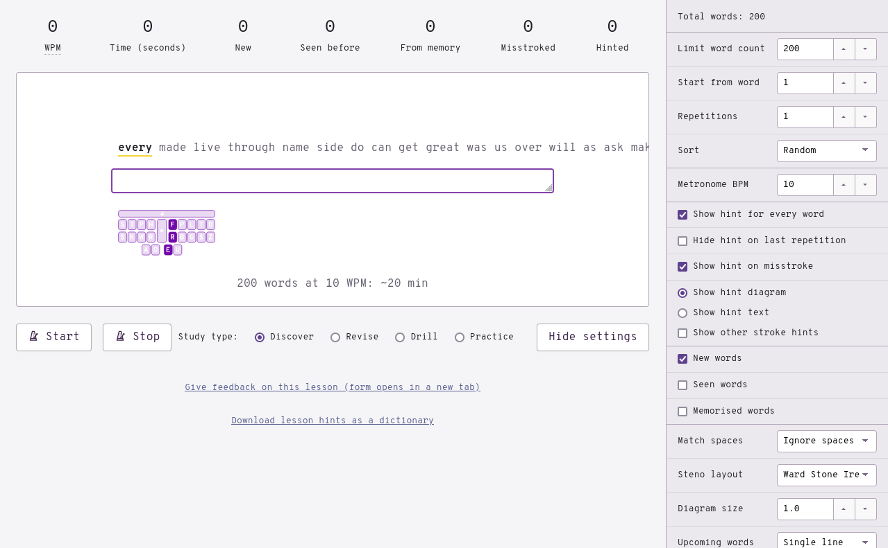
- Study type: Discover
- Limit word count: 200
- Repetitions: 1
- Sort: Random
- Hide hint on last repetition: unchecked
This way, you can learn the words by simply reading the hints provided. If you come across a brief that is confusing, check back on this page to see if there is an explanation.
Practice material
1–50
the
Brief: -T
of
Brief: -F
to
Brief: TO
Write-out: TAOU
Both outlines are valid to use.
and
Brief: SKP
Useful in phrases such as SKP-T “and the” and SKPU “and you”.
a
Write-out: AEU
A is the “a-” prefix.
in
Brief: TPH
EUPB is the “in-” prefix.
is
Brief: S
it
Brief: T
you
Brief: U
that
Brief: THA
Useful in phrases such as THAT “that the” and THAEU “that I”.
he
Write-out: HAOE
was
Write-out: WAS
for
Brief: TP-R
TPOR is the “for-” prefix.
on
Brief: AUPB or O*PB
OPB is the “on-” prefix.
are
Brief: R or -R
Useful in phrases such as R-T “are the” and THR-R “there are” (see there).
with
Brief: W
Useful in phrases such as W-T “with the” and WU “with you” (see you).
as
Write-out: AS
I
Brief: EU
AOEU is the word “eye”.
his
Write-out: HEUS
they
Brief: THE
Useful for dealing with the “their”, “there”, and “they’re” three-way conflict as “they’re” can be written as THER.
be
Brief: -B
PWE is the “be-” prefix and PWAOE is the word “bee”.
at
Write-out: AT
one
Write-out: WUPB
have
Brief: SR
Useful in phrases like SR-T “have the” and SRU “have you”. HAF is also the word “half”.
this
Brief: TH
Useful in phrases like STH “is this” and TH-S “this is”.
from
Write-out: TPROPL
or
Brief: AOUR or AUR
OR is the “or-” prefix.
had
Brief: H
by
Brief: PWEU
PWAOEU is the “bi-” prefix.
hot
Write-out: HOT
but
Write-out: PWUT
some
Write-out: SOPL
what
Brief: WHA
Useful in phrases like WHAT “what the” and WHAEU “what I”.
there
Brief: THR
Useful in phrases like THR-R “there are” and THR-S “there is”.
we
Write-out: WAOE
To write the word “wee”, use WAO*E.
can
Brief: K
out
Brief: AOUT or O*UT
OUT is the “out-” prefix.
other
Brief: OER
Write-out: O*T/KWRER
The brief is recommended for this common word.
were
Brief: WR
Write-out: WER
The brief is useful in phrases such as WR-T “were the” and WRU “were you”.
all
Write-out: AUL
your
Write-out: KWHUR
The initial “y” consonant was recently changed. If
KWHURdoes not output correctly, you can either use the lookup tool to learn a different brief, or update your dictionary and relearn the initial “y” chord asKWH.
when
Brief: WH
Useful in phrases such as WH-S “when is” and WHU “when you”.
up
Write-out: UP
use
Write-out: AOUS
word
Write-out: WORD
how
Write-out: HOU
said
Brief: SED
The awkward spelling of this word makes a write-out impractical.
an
Write-out: APB
each
Write-out: AOEFP
she
Write-out: SHAOE
51–100
which
Brief: WEU or KH
WEUFP and WHEUFP are the words “witch” and “whisp”.
do
Brief: TKO
TKAOU and TKAO*U are the words “due” and “dew”.
their
Write-out: THAEUR
time
Write-out: TAOEUPL
if
Brief: TP
Useful in phrases like TPU “if you” and TP-T “if the”.
will
Brief: HR
Useful in phrases like HRU “will you” and HR-T “will the”.
way
Write-out: WAEU
about
Brief: PW
many
Brief: PHA*EPB
then
Write-out: THEPB
them
Write-out: THEPL
would
Write-out: WUD
write
Write-out: WRAOEUT
like
Write-out: HRAOEUBG
so
Brief: SO
SOE is the word “sow”.
these
Write-out: THAOES
her
Write-out: HER
long
Write-out: HROPBG
make
Write-out: PHAEUBG
thing
Write-out: THEUPBG
see
Write-out: SAOE
him
Write-out: HEUPL
two
Brief: TWO
has
Write-out: HAS
look
Write-out: HRAOBG
more
Write-out: PHOR
day
Write-out: TKAEU
could
Write-out: KUD
go
Write-out: TKPWOE
come
Write-out: KOPL
did
Brief: TK
Useful in phrases like TK-T “did the” and TKU “did you”.
my
Write-out: PHAOEU
sound
Write-out: SOUPBD
no
Brief: TPHO
TPHOE is the word “know”.
most
Write-out: PHOEFT
number
Write-out: TPHUPL/PWER
who
Brief: WHO
WHAOU is the word “whew”.
over
Brief: AUFR
OEFR is the prefix and AU is an easy to press alternative chord.
know
Write-out: TPHOE
water
Write-out: WAU/TER
than
Write-out: THAPB
call
Write-out: KAUL
first
Brief: TPEUFRT
Write-out: TP*EURS
TPEUFRT uses an inversion (violation of steno order) which is more of a briefing technique than a theory rule.
people
Brief: P
Write-out: PAOEPL
may
Brief: PHAEU
down
Write-out: TKOUPB
side
Write-out: SAOEUD
been
Brief: PW-PB
now
Write-out: TPHOU
find
Write-out: TPAOEUPBD
101–150
any
Brief: TPHEU
new
Brief: TPHU
TPHAOU is the word “knew”
work
Write-out: WORBG
part
Write-out: PART
take
Write-out: TAEUBG
get
Write-out: TKPWET
place
Write-out: PHRAEUS
made
Write-out: PHAED
live
Write-out: HREUF
where
Brief: W-R
Write-out: WHER
after
Brief: AF or AFR
Write-out: AF/TER
back
Write-out: PWABG
little
Brief: HREUL
Write-out: HREUT/-L
only
Brief: OEPBL
Write-out: OEPB/HREU
round
Write-out: ROUPBD
man
Write-out: PHAPB
year
Write-out: KWRAO*ER
came
Write-out: KAEUPL
show
Write-out: SHOE
every
Brief: EFR
good
Write-out: TKPWAOD
me
Write-out: PHAOE
give
Write-out: TKPWEUF
our
Write-out: OUR
under
Brief: TPH-PB or UPBD
Write-out: UPB/TK*ER
UPB/TKER is the “under-” prefix.
name
Write-out: TPHAEUPL
very
Brief: SRE
Write-out: SRER/KWREU
through
Brief: THRU
THRAOU is the word “threw”.
just
Write-out: SKWRUFT
form
Write-out: TPORPL
much
Write-out: PHUFP
great
Write-out: TKPWRAET
think
Brief: THEU
Write-out: TH*EUPBG
If you’re having trouble with the awkward write-out, use the brief instead.
say
Write-out: SAEU
help
Brief: HEP
Write-out: HEL/-P
low
Write-out: HROE
line
Write-out: HRAOEUPB
before
Brief: PW-FR
Write-out: PWE/TPOR
turn
Write-out: TURPB
cause
Write-out: KAUS
same
Write-out: SAEUPL
mean
Write-out: PHAOEPB
differ
Brief: TKEUFR
Write-out: TKEU/TPER
move
Write-out: PHAOUF
right
Write-out: RAOEUT
boy
Write-out: PWOEU
old
Write-out: OELD
too
Write-out: TAO
does
Write-out: TKOS
tell
Write-out: TEL
151–200
sentence
Brief: STEPBS
Write-out: SEPB/TEPBS
set
Write-out: SET
three
Write-out: THRAOE
want
Write-out: WAPBT
air
Write-out: AEUR
well
Write-out: WEL
also
Brief: HR-S
play
Write-out: PHRAEU
small
Write-out: SPHAUL
end
Write-out: EPBD
put
Write-out: PUT
home
Write-out: HOEPL
read
Write-out: RAED
hand
Write-out: HAPBD
port
Write-out: PORT
large
Write-out: HRARPBLG
spell
Write-out: SPEL
add
Write-out: AD
even
Brief: AOEFPB
land
Write-out: HRAPBD
here
Write-out: HAOER
must
Write-out: PHUFT
big
Write-out: PWEUG
high
Write-out: HAOEU
such
Write-out: SUFP
follow
Brief: TPOL
Write-out: TPO/HROE
act
Write-out: ABGT
why
Brief: KWH
Useful in phrases such as KWH-R “why are” and KWH-T “why the”
ask
Brief: SK
Write-out: AFBG
men
Write-out: PHEPB
change
Write-out: KHAEUPBG
went
Write-out: WEPBT
light
Write-out: HRAOEUT
If you feel that “lite” should be written HRAOEUT, feel free to swap these around. However, “lite” is quite a bit more uncommon that I feel it should be given the asterisk.
kind
Write-out: KAOEUPBD
off
Brief: AUF
OF is the prefix.
need
Write-out: TPHAOED
house
Write-out: HOUS
picture
**Brief: P*EUFP **
Write-out: PEUBG/KHUR
try
Brief: TREU
TRAOEU is the “tri-” prefix.
us
Write-out: US
again
Brief: TKPWEPB
Write-out: A/TKPWEPB or A/TKPWAEUPB
Just like with said, the spelling of this word makes a write-out entry ambiguous and slightly impractical.
animal
Brief: PHAPBL or APB/PHAL
Write-out: A/TPHEU/PHAL
The one-stroke brief completely violates steno order. The two-stroke brief drops the “i” vowel as it is unstressed (unemphasized).
point
Write-out: POEUPBT
mother
Brief: PHOER or PHO*RT
Write-out: PHO/THER
world
Write-out: WORLD
near
Write-out: TPHAOER
build
Write-out: PWEULD
self
Brief: SEFL
Write-out: SEL/*F
Remember to use *F when ending a word with the “f” sound.
earth
Write-out: *ERT
father
Brief: TPA*URT
Write-out: TPAU/THER
Chapter 16 test
This chapter’s test consists of the words listed on this page. Use the following settings:
- Limit word count: 45
- Start from word: 1
- Repetitions: 3
- Sort: random
- Show hint for every word: unchecked
- Hide hint on last repetition: unchecked
- Show hint on misstroke: checked
Click here to access the chapter 16 test
Recommended completion goal
This is only a suggestion if you are unsure of when to move on to the next chapter; it is not a strict requirement!
Aim for 10–40 WPM with 90% accuracy.
You may use the test material as practice!
Chapter 17: Shortening techniques
Introduction
All the techniques covered up until this point will allow writing almost any word. However, words are usually split into outlines such that one stroke corresponds to one syllable. This is not terribly efficient. To put this into perspective, professional stenographers have to write 225 WPM (or 5.25 syllables per second) to graduate. Even for professionals, 5 strokes per second is almost too fast.
Instead of relying entirely on finger speed, steno outlines can be shortened. This is done through various techniques that either compress more sounds into each stroke, or drop unnecessary sounds altogether. Shortening techniques are not applicable to any arbitrary word (nor are they entirely conflict free), but they can still be extremely helpful for whole families of words. The techniques listed on this page are low in conflicts and it may also be the case that some words cannot be written without one or more of these techniques. It is very recommended to learn these.
Keep in mind, however, that several of the outlines listed on this page may not be in the default Lapwing dictionary. Many of the outlines are suggestions and examples of how these techniques can be used.
As you build speed and proficiency with steno, you’ll want to tailor your dictionary to how you write. It is very crucial to become comfortable with adding to your dictionary, especially if you decide to use these shortening techniques very heavily. Adding entries that use these techniques is completely normal and to be expected.
Useful links
- R-folding drill
- L-folding drill
- T-folding drill
- E-folding drill
- Folding drill (combined)
- Dropping unstressed vowels with folding drill
- [Inversions](17-inversions.txt)
- Left hand clusters drill
NOTE: it is recommended to complete these in order as some of the later drills incorporate techniques from the previous exercises.
Folding
Folding is a technique where a key (or chord) is inserted into a stroke to represent a sound that is typically found at the end of a word.
R-folding
Folding -R into a stroke can add an ending “r” sound like in the following examples:
- equator
AOE/KWAEURT=AOE/KWAEUT+-R - humor
HAOURPL=HAOUPL+-R - modulator
PHO/SKWRAOU/HRAEURT=PHO/SKWRAOU/HRAEUT+-R - shimmer
SHEURPL=SHEUPL+-R
Some outlines using this technique would conflict with preexisting words (e.g., TARP for “tarp” or “tapper”). In cases where A is the vowel, AE can be used as an alternative vowel chord.
- hammer
HAERPL=HAPL+ER - tapper
TAERP=TAP+ER
R-folding is high in conflicts for single stroke outlines but low in conflicts for multistroke outlines. It is safe to use this technique for ending multistroke words.
L-folding
Folding -L into a stroke can add a sound containing the “l” consonant on the end of the word. Usually this is the “-ly” or “l” sound as in the following examples:
- mostly
PHOEFLT=PHOEFT+-L - portal
PORLT=PORT+-L - final
TPAOEUPBL=TPAOEUPB+-L - funnel
TPUPBL=TPUPB+-L
This technique mostly fails whenever the steno outline already has the -L key in it, or if the stroke is too difficult to press. In these cases, folding the initial HR can sometimes work.
- finally
TPHRAOEUPBL=TPAOEUPB+-L+HR - basically
PWHRAEUFBG=PWAEUFBG* +HR
*See section below on dropping unstressed vowels.
L-folding is low in conflicts; use it whenever possible.
T-folding
Folding -T can add the “-ity” or “-ty” sounds to the end of a word:
- entirety
EPB/TAOEURT=EPB/TAOEUR+-T - eternity
AOE/TERPBT=AOE/TERPB+-T - porosity
POR/KWROFT=POR/KWROF+-T - sanity
SAPBT=SAPB+-T
T-folding is low in conflicts; use it whenever possible.
Using this technique might lead to difficult chords to press like
-TD. Do not feel obliged to use T-folding in these scenarios.
E-folding
A long e /i/ vowel at the end of a word can be represented by folding the E key into a stroke:
- auditory
AU/TKEU/TOER=AU/TKEU/TOR+E - respiratory
RES/PRA/TOER=RES/PRA/TOR+E - antimony
APB/TEU/PHOEPB=APB/TEU/PHOPB+E - coffee
KOEF=KOF+E - crumbly
KRUPL/EBL=KRUPL/-BL+E - humbly
HUPL/EBL=HUPL/-BL+E - numerically
TPHAOU/PHER/KAEL=TPHAOU/PHER/KAL+E - symbolically
SEUPL/PWOL/KAEL=SEUPL/PWOL/KAL+E - carefully
KAEUR/EFL=KAEUR/-FL+E - dreadfully
TKRED/EFL=TKRED/-FL+E - happy
HAEP=HAP+E- happier
HAERP(Eand-Rfolding)
- happier
- fancy
TPAEPBS=TPAPBS+E- fancier
TPAERPBS(Eand-Rfolding)
- fancier
E-folding with AEU
Words like “carry” would normally be written like KAEUR/KWREU. The ending long e sound can’t be represented with E-folding normally, since the previous stroke already contains the E key. Instead, AER can be used to represent this sound in one stroke.
- carry
KAER - estuary
ES/KHAOU/KWRAER - corollary
KOR/KWRO/HRAER - solitary
SO/HREU/TAER
E-folding is high in conflicts for single stroke outlines but low in conflicts for multistroke outlines. It is safe to use this technique for ending multistroke words.
Practice material
Dropping unstressed vowels
Keep in mind the examples may only apply to General North American English.
In conversational speech, a lot of vowels typically aren’t emphasized. For example, the first “e” in the word “elephant” is enunciated very clearly, but the second is not. This second “e” can be dropped without affecting the pronunciation significantly. For example, listen to the two ways of saying “elephant”:
Dropping the second “e” in “elephant” is advantageous; it is now now possible to write this word in two strokes instead of one: EL/TPA*PBT.
This technique can be tricky, and it doesn’t always work with any arbitrary word. A great way to learn stress identification is to practice it in everyday life. When reading a word, pay attention to the vowels that aren’t emphasized. In particular, try dropping vowels from a word and observing if the word is still intelligible. For example, try saying “elephant” out loud in the two ways shown above. When reading the next few examples, try this out yourself.
definite
Write-out: TKE/TPEU/TPHEUT
Unstressed vowel(s) dropped: definite → defnit
The first “i” is unstressed and the “f” can be moved to the right hand.
Shorter outline: TKEF/TPHEUT
demand
Write-out: TKE/PHAPBD
Unstressed vowel(s) dropped: demand → dmand
The “e” is unstressed and the “dm” cluster can be moved to the left hand with TKPH.
Shorter outline: TKPHAPBD
deplorable
Write-out: TKE/PHROR/-BL
Unstressed vowel(s) dropped: deplorable → dplorbl
Every vowel except the “o” can be dropped. The resulting consonants can easily fit on the steno layout.
Shorter outline: TKPHROBL
derivative
Write-out: TKE/REU/SRA/TEUF
Unstressed vowel(s) dropped: derivative → drivtive
The “e” and the “a” are dropped.
Shorter outline: TKREUF/TEUF
electric
Write-out: E/HREBG/TREUBG
Unstressed vowel(s) dropped: electric → lectric
First vowel can be dropped.
Shorter outline: HREBG/TREUBG
differ
Write-out: TKEU/TPER
Unstressed vowel(s) dropped: differ → difr
The “e” can be dropped and the “f” and “r” can be moved to the right hand with -FR.
Shorter outline: TKEUFR
engineer
Write-out: EPB/SKWREU/TPHAOER
Unstressed vowel(s) dropped: engineer
The “i” can be dropped so that the “ng” sound can represented with -PBG on the right hand.
Shorter outline: EPBG/TPHAOER
geology
Write-out: SKWRAOE/KWRO/HRO/SKWREU
Unstressed vowel(s) dropped: geology → geolgy
The second “o” can be dropped and the “l” can be moved to the right hand.
Shorter outline: SKWRAOE/KWROL/SKWREU
modulator
Write-out: PHO/SKWRAOU/HRAEUT/O*R
Unstressed vowel (s) dropped: modulator → modlator
The “u” can be dropped and the j sound can be moved to the right hand.
Shorter outline: PHOPBLG/HRAEUT/O*R
NOTE: this can be combined with R-folding:
PHOPBLG/HRAEURT!
possible
Write-out: PO/SEUBL
Unstressed vowel(s) dropped: possible → posbl
The “i” is unstressed, and the “s” can be represented with -F.
Shorter outline: POFBL
suppose
Write-out: SU/POES
Unstressed vowel(s) dropped: suppose → sppose
The “u” is unstressed.
Shorter outline: SPOES
Tom Scott and schwa
In many of these examples, the unstressed vowel is a schwa. This sound is always unstressed, and therefore can be dropped whenever possible. Identifying schwas quickly can therefore be very beneficial to automatically dropping unstressed vowels. Tom Scott has created a helpful video on understanding this sound which I highly encourage watching:
At 2:41, Tom mentions three words where the schwa is dropped entirely in spoken word. Instead of writing these words in three strokes like,
SE/PAR/KWRAT,KHO/KO/HRAT, andKA/PHER/KWRA, can you think of two stroke outlines for each?
As an exercise, you can try looking back at the previous examples and identify the schwas. Note that not all unstressed vowels are schwas, and not all schwas in the examples are necessarily dropped.
Caveats
Sometimes this technique doesn’t work for a few reasons. First of all, the shortened outline might already conflict with another valid word. Here are some examples:
PWOUTcan be “bout” or “about”
This technique may also fail if there are too many consonants in the shortened word. For example, in the word “consonant”, every other vowel after the first “o” is unstressed:
- cons
onant → consnnt
However, it is not possible to include the “n” two times on the right side of the steno layout. We can, however, write it in two strokes as KOPBS/TPHAPBT.
If you’re brave,
KOFPBTcould be a valid outline!
Consonant group splitting quirks
After dropping an unstressed vowel, a word can typically be split at the point where the vowel used to be. For example, the word “literal” would be split like HREUT/RAL rather than HREU/TRAL—even if that pronunciation is more natural to you.
However, if a vowel is completely silent, like the second “e” in “veterinarian”, it is often preferred to treat the remaining consonants as one sound (just like it was shown in chapter 15).
This is one place where you may want to tweak your dictionary.
Practice material
Inversions
It is sometimes acceptable to break steno order when shortening outlines. It is especially helpful to invert the order of two keys for some words where dropping unstressed vowels is not enough. For example, in the word “fabricate”, the “i” can be dropped:
- fabr
icate → fabrcate
Despite this, it is still not possible to represent the resulting sound in two strokes; the “br” cluster is problematic and forces the use of three: TPAB/R/KAEUT. This is where an inversion can be helpful—if the R key moved to the previous stroke, this word can be written in two strokes: TPARB/KAEUT.
Examples
- migr
atoryPHAOEURG/TOER - secr
etarySERBG/TAER - patr
imonyPART/PHOEPB - b
esideSPWAOEUD
*crossing out indicates dropped unstressed vowels.
Practice material
[Inversions](17-inversions.txt)
work-in-progress
Left hand compound clusters
In addition to the left hand chords learned in the very early chapters, there are also more advanced chords that can represent more than just a single consonant.
SPWis “int” or “ent” as in “entire” or “intern”KPis “comp” as in “complement”KPWis “comb” as in “combine”KPHis “com” as in “comment”Wis “v” as in “divine”STKis “d_s” as in “design” or “disarm”
KPW,KPH, andSTKtechnically aren’t compound clusters, but are the result of other shortening techniques. However, it is easy to explicitly remember these as compound clusters as they are quite common.
Examples
- entire
SPWAOEUR - intern
SPWERPB - compli
antKPHRAOEUPBT - compliment
KPHREUPLT - commend
KPHEPBD - commit
KPHEUT - d
eviceTKWAOEUS - d
ivideTKWAOEUD - decide
STKAOEUD - dis
appearSTKPAOER
*crossing out indicates dropped unstressed vowels.
Practice material
NOTE: many of the words in this drill also utilize other techniques.
Dropping other sounds
Sometimes it may be convenient to arbitrarily drop more sounds to shorten steno outlines. For example, the “n” in “assignment” is not really enunciated, allowing it to be written in two strokes instead of three:
- assignment
A/SAOEUPLT- Instead of
A/SAOEUPB/-PLT
- Instead of
This technique can also be applied to the following words:
- confinement
KOPB/TPAOEUPLT - consignment
KOPB/SAOEUPLT
The words that work with this technique depend a lot on your accent and even personal speech patterns. If you find an intuitive outline missing from
lapwing-base.json, you should not hesitate to add it to your personal dictionary.
While these last few examples may have been somewhat intuitive, it is also valid to drop sounds arbitrarily whenever a stroke can be saved:
- abutment
A/PWUPLT- first “t” is dropped
- amb
iguityAPL/TKPWAOUT- “b” is dropped
- discard
STKARD- “c” is dropped
- fragment
TPRAPLT- “g” is dropped
efficientTPEURBT- “n” is dropped
- patient
PAEURBT- “n” is dropped
*crossing out indicates dropped unstressed vowels.
NOTE: this technique depends heavily on if there are existing words the resulting outline may conflict with.
As this technique is highly personal to each individual, it is not particularly useful to drill the words that can be found in the dictionary. Instead, cater this method to your own personal accent and speech patterns when adding new entries to your dictionary. Feel free to learn the shortened outlines in the dictionary that utilize this technique, but you are not at all obliged to follow them.
Shortened prefix strokes
In chapter 13, shortened prefix strokes were introduced. Instead of writing AU/TOE/PHAEUT for the word “automate”, you can instead write OEUT/PHAEUT with OEUT representing the auto^ prefix. While “mate” is not the root word of “automate” (making this seem like an incorrect usage of a prefix stroke), this outline is really just using syllabic splitting. OEUT is being used to represent the “auto” sound and it just so happens to be mapped to the auto^ prefix.
NOTE:
OEUis a pretty uncommon vowel sound in the English language. Therefore, it is often used in Lapwing theory (and Plover theory) as a wildcard sound in a lot of briefs.
Some examples of shortened outlines using these briefer prefix strokes:
- internet
EURPBT/TPHETEURPBTin place ofEUPB/TER
- paradise
PA*R/TKAOEUSPA*Rin place ofPAEUR/KWRA
- supermarket
SAOURP/PHARBGTSAOURPin place ofSAOU/PER
- telecommunication
T*EL/KPHAOUPB/KAEUGST*ELin place ofTE/HRE
Until a list of some useful shortened prefix strokes can be created, I suggest using the lookup tool whenever you encounter a multistroke prefix outline.
Chapter 18: Fingerspelling and numbers
Useful links
{kind=link}
{kind=link}
{kind=link}
Intro
There won’t be any practice material for this chapter as these topics are easy to practise in everyday writing. It may be helpful to keep the tables on this page in an easy to read place (i.e., printed out and taped to the wall).
Fingerspelling
To write a short acronym or a word that is not yet defined, a letter-by-letter spelling technique called fingerspelling can be used. This is done by pressing a letter chord plus the asterisk key with the right hand.
Lowercase
| a | b | c |
| d | e | f |
| g | h | i |
| j | k | l |
| m | n | o |
| p | q | r |
| s | t | u |
| v | w | x |
| y | z |
Uppercase
To write uppercase letters, use -P on the right hand.
| a | b | c |
| d | e | f |
| g | h | i |
| j | k | l |
| m | n | o |
| p | q | r |
| s | t | u |
| v | w | x |
| y | z |
Attachment behaviour
Fingerspelling uses glue (&) formatting. These translations stick to other translations that also have glue. For example, writing HE/HROE/A*/PW*/KR* will result in hello abc. Since the translation for HE/HROE contains no glue, the subsequent fingerspelling chord inserts a space after hello. However, as the subsequent fingerspelling chords all contain glue, they stick together.
Numbers
With Lapwing, numbers are written with a numberpad system much like the ones found on regular keyboards and calculators. The number key is pressed with the left hand, and the right hand is responsible for the number. Since there are only two rows on the steno layout, we use vertical chords to represent the middle row.
| 1 | 2 | 3 |
| 4 | 5 | 6 |
| 7 | 8 | 9 |
| 0 | 00 | 000 |
The right hand vowel keys can be combined with a number chord to add some trailing zeros:
#ER10#EUPB5000#UP800#EB20
Attachment behaviour
Numbers use the same glue formatting as fingerspelling by default. To prevent numbers from sticking to other glued translations, include T with the chord.
Examples
A*/PW*/KR*/#-R/#-B/#-Gabc123A*/PW*/KR*/#T-R/#T-B/#T-Gabc 1 2 3
Chapter 19: Proper nouns
Proper nouns
Proper nouns in Lapwing theory are written exactly the same as regular words, except with the addition of the number key in the first stroke. Proper nouns can be multiple words long, but only the first stroke has to contain the number key (see examples below). The inclusion of the number key reduces conflicts, such as between “mat” and “Mat”.
Examples
#A/TPHAAnna#KAL/TKPWAR/KWREUCalgary#PHATMat#SRAPB/KAOU/SRER/AOEU/HRAPBDVancouver Island
Proper nouns starting with “j”
#SKWR is a difficult chord to press, especially when writing at speed. #STKPWHR can be used as an alternative chord for proper nouns starting with “j”.
#STKPWHRER/PHA/TPHEUGermany#STKPWHRO/TPHO/THAPBJonathan
The initial j consonant for proper nouns was recently changed. Check chapter 5 for instructions to update your dictionary if you have a different outline for “j” proper nouns.
Alternative proper nouns with a prefix stroke
If you have no complaints with using the number key in proper noun strokes, you can skip this section.
Some machines may not be compatible with remapping the top S- key. In this case, it is also possible to use the number key as a prefix stroke for proper nouns. This is handled through the lapwing-prefixed-proper-nouns.json dictionary.
To download it, right click the following link and press Save link as.
https://raw.githubusercontent.com/aerickt/steno-dictionaries/main/lapwing-prefixed-proper-nouns.json
To add it to your dictionary stack, in Plover’s main window, press the green plus button and Load dictionaries. Then, select the lapwing-prefixed-proper-nouns.json dictionary that you just downloaded.
Examples
#/A/TPHAAnna#/KAL/TKPWAR/KWREUCalgary#/PHATMat#/SRAPB/KAOU/SRER/AOEU/HRAPBDVancouver Island
Chapter 20: Punctuation and Commands
Useful links
{kind=link}
Intro
This chapter will cover punctuation and Plover commands. As these are not really tied to any words, they may be less intuitive. Many of these will simply have to be memorized. There is no practice material for this chapter; instead, incorporating steno into daily computer tasks can be a great way to practise these miscellaneous outlines. It may be helpful to print out the punctuation graphic and keep it in a easy to reference location (such as taped to a wall). Playing typing games such as TypeRacer or monkeytype is also a great way to practise steno at this point.
Punctuation
Punctuation is a lot different to regular words where a space is almost always inserted before. For different punctuation, there may be different scenarios for spacing on one side or the other. Furthermore, punctuation can sometimes also govern the capitalization of the next word. Therefore, punctuation strokes contain special formatting rules to control the spacing and capitalization.
The following table lists several common punctuation marks along with the name, formatting, steno outline, and a mnemonic to aid with memorization.
| Character | Name | Formatting | Steno outline | Mnemonic |
|---|---|---|---|---|
. | Period | Attaches to the previous word and capitalizes the next word. | TP-PL | Top row ring and middle fingers on both hands. |
? | Question mark | Attaches to the previous word and capitalizes the next word. | KW-PL | Same fingers as the period outline, but the shape resembles a rising intonation as would happen in a question. |
! | Exclamation mark | Attaches to the previous word and capitalizes the next word. | TP-BG | Same fingers as the question outline, but the shape is sloped downwards to mirror the question mark outline. |
. | Decimal point | Attaches to the previous word and the next word. | P-P | Resembles the period outline, but with only the middle fingers. |
, | Comma | Attaches to the previous word. | KW-BG | Same fingers as the period outline, but on the bottom row. |
… | Ellipses (three dots) | Attaches to the previous word and capitalizes the next word. | SKW-BGS | Symmetrical shape of three keys. |
“ | Opening quotation mark | Attaches to the next word. | KW-GS | As in “quotation”. |
“ | Closing quotation mark | Attaches to the previous word. | KW*GS | Same as opening quotation mark outline, but with the asterisk. |
’ | Opening single quotation mark | Attaches to the next word | KR-RG | Like the double quote outline, but one key shifted over. |
’ | Closing single quotation mark | Attaches to the previous word | KR*RG | Same as opening single quotation mark, but with the asterisk. |
` | Opening backtick | Attaches to the next word. | KH-FG | Shape resembles a backtick. |
` | Closing backtick | Attaches to the previous word. | KH*FG | Same as the opening backtick, but with the asterisk. |
( | Opening parenthesis | Attaches to the next word. | PREPB | Makes the sound “pren” as in parenthesis |
) | Closing parenthesis | Attaches to the previous word | PR*EPB | Same as the opening parenthesis outline, but with the asterisk. |
{ | Opening curly brace | Attaches to the next word. | TPR-BGT | This symbol is also called a “French bracket” (hence the outline). |
} | Closing curly brace | Attaches to the previous word. | TPR*BGT | Same as the opening curly brace outline, but with the asterisk. |
[ | Opening square bracket | Attaches to the next word. | PWR-BGT | Resembles “bracket”. |
] | Closing square bracket | Attaches to the previous word. | PWR*BGT | Same as the opening square bracket outline, but with the asterisk. |
: | Colon (for writing) | Attaches to the previous word | #TPH-FPLT | The entire top row of keys except the asterisk. |
; | Semicolon | Attaches to the previous word. | #TPH*FPLT | Same as the colon outline, but with the asterisk. |
: | Colon (for time) | Attaches to the previous word and the next word. | KHR-PB | Resembles the word “colon”. |
— | Emdash | Attaches to the previous word and the next word. | PH-RB | Resembles “emdash”. |
– | Endash | Attaches to the previous word and the next word. | TPH-RB | Resembles “endash”. |
– | Endash | Space before and after. | TPH*RB | Same as the outline for regular endash, but with the asterisk. |
- | Hyphen | Attaches to the previous word and the next word. | H-PB | Resembles “hyphen”. |
- | Hyphen | Space before and after. | H*PB | Same as the regular hyphen outline, but with the asterisk. |
‽ | Interrobang | Attaches to the previous word and capitalizes the next word | TRAPBG | Resembles the word “interrobang”. |
/ | Slash | Attaches to the previous word and the next word | OEU |
NOTE: the colon and semicolon outlines were recently changed from
STPH-FPLTandSTPH*FPLTto#TPH-FPLTand#TPH*FPLT. If the latter outlines are not working, make sure to update your dictionaries.
| . | ? | ! |
| . | , | “ |
| “ | ` | ` |
| ‽ | ( | ) |
| { | } | / |
| [ | ] | : |
| ; | : | — |
| – | - |
NOTE: the colon and semicolon outlines were recently changed from
STPH-FPLTandSTPH*FPLTto#TPH-FPLTand#TPH*FPLT. If the latter outlines are not working, make sure to update your dictionaries.
Commands
Situations may arise where Plover will have to be explicitly told how to format a word. The following section goes over some useful formatting commands.
Enter
Outline: R-R
Enter (capitalize next word)
Outline: R*R
Insert a space
Outline: S-P
Mnemonic: space
Although Plover will automatically insert spaces before regular words, it may be necessary to manually insert a space so that two strokes should not be interpreted as a multistroke outline.
Example
KOR/TPHETcornetKOR/S-P/TPHETcore net
Retroactively insert a space
Outline: S-PD
Mnemonic: the S-P outline but with -D to indicate that this is a retroactive command.
Example
KOR/TPHETcornetKOR/TPHET/S-PDcore net
NOTE: this does not work with multistroke outlines if
S-PDis pressed in between two strokes part of the same word. For example, the phrase “core nettle” cannot be written likeKOR/TPHET/S-PD/-L.
Suppress the next space
Outline: SP-S
Mnemonic: suppress space
Example
- how ever
HOU/-FR - however
HOU/SP-S/-FR
Retroactively suppress the last space
Outline: SP-LS
Mnemonic: suppress last space
Example
PHOR/AUFRmore overPHOR/AUFR/SP-LSmoreover
Capitalize the next word
Outline: KPA
Mnemonic: the word “cap” but with the “a” and “p” out of order
Example
-T/KPA/AOEU/HRAPBDthe Island
Retroactively capitalize the last word
Outline: KA*PD
Mnemonic: the word “capped” but with the asterisk
Example
-T/AOEU/HRAPBD/KA*PDthe Island
Capitalize the next word and suppress the next space
Outline: KPA*
Mnemonic: the KPA outline with the asterisk
This is useful for starting a new sentence.
Uncapitalize the next word
Outline: HRO*ER
Mnemonic: the word “lower” but with the asterisk
Retroactively uncapitalize the next word
Outline: HRO*ERD
Mnemonic: the HRO*ER outline but with -D to indicate the retro command.
Chapter 21: UK spellings
Intro
Lapwing theory is very North American centred as that is the dialect of English I am familiar with. However, being from Canada, I often need to use both American and British spellings of words in writing. I’ve created a dictionary that adds in British spellings with alternative outlines. Unfortunately, this dictionary does not account for pronunciation differences, and it also prioritises the American forms of words—there may not always be short briefs available for British spellings.
Ideally, there would be a separate stand-alone lapwing dictionary for British English, but creating one would be very difficult, particularly for someone who does not speak this dialect. If you would like to contribute a lapwing dictionary for British speakers, please do get in touch!
Setup
Ensure that plover-lapwing-aio is installed and Lapwing is selected as the system. Alternatively, if you are setting up Lapwing manually (not recommended), ensure that lapwing-uk-additions.json is in your dictionary stack.
Quick switching
The recommended way to switch from an American word to its British form is by using #TPH as a suffix stroke of sorts. This is guaranteed to always work unlike the other methods outlined later.
Examples
- center
SEPB/TER- centre
SEPB/TER/#TPH
- centre
- fulfill
TPUL/TPEUL- fulfil
TPUL/TPEUL/#TPH
- fulfil
- harbor
HAR/PWOR- harbour
HAR/PWOR/#TPH
- harbour
- organize
OR/TKPWA/TPHAOEUZ- organise
OR/TKPWA/TPHAOEUZ/#TPH
- organise
Dealing with suffixes
If you are writing a word with a suffix, switch the word into its British form first before writing the suffix. It is not guaranteed to work if the suffix is written before #TPH.
Examples
- organising
OR/TKPWA/TPHAOEUZ/#TPH/-G - economises
AOE/KO/TPHO/PHAOEUZ/#TPH/-Z - energiser
EPB/KWRER/SKWRAOEUZ/#TPH/*ER - immortalised
EUPL/PHOR/TAL/KWRAOEUZ/#TPH/-D
ae spellings
Regardless of pronunciation, words that are spelled with “ae” can be written with AE.
Examples
- aetiology
AET/KWROLG - encyclopaedia
EPB/SAOEU/KHROE/PAE/TKEU/KWRA - haemoglobin
HAE/PHOE/TKPWHROE/PWEUPB - leukaemia
HRAOU/KAEPL/KWRA
ise spellings
Words spelled with “ise” can be written by using -S instead of -Z.
- magnetise
PHAG/PHE/TAOEUS - stabiliser
STAEUBL/KWRAOEUS/*ER - utilising
AOUT/HRAOEUS/-G - initialise
EUPB/KWREURBL/KWRAOEUS
oe spellings
Words spelled with “oe” can be written using OE regardless of pronunciation.
Examples
- oedema
OE/TKE/PHA - foetus
TPOE/TUS - homoeopathy
HOEPL/KWROE/PATH/KWREU - oestrogen
OES/TROE/SKWREPB
ou spellings
Words spelled with “ou” can be written using OU only to disambiguate between British and American spellings.
Examples
- candour
KAPB/TKOUR - colour
KO/HROUR - favour
TPAEU/SROUR - neighbour
TPHAEU/PWOUR
re spellings
For British words spelled with “re” the asterisk key can be included in the stroke containing ER.
Examples
- calibre
KA/HREU/PW*ER - litre
HREU/T*ER - mitre
PHAOEU/T*ER - centimetre
SEPB/TEU/PHAO*ERT
Miscellaneous briefs
If adding the asterisk into an a brief is possible, then it will very likely work for the British spelling.
Examples
- metre
PHAO*ERT - organise
O*RG - neighbour
TPHA*EURB
Chapter 22: Theory principles wrap-up
Intro
This page serves as a reference for all the miscellaneous theory principles that only apply to a few words. It’s not important to explicitly memorize the content on this page, as it is very likely these situations will arise in everyday writing.
When you do find odd entries via the lookup tool, first consult this page. If you cannot find an explanation, free to contact me on Discord (@aerbg) or start a discussion on GitHub (login required). It may be that I have not yet documented the oddity here or that the entry itself may be incorrect.
Acronyms
For capitalized acronyms, Lapwing treats these as regular words for the most part. Write the first stroke with the asterisk and the number key, but continue the rest of the acronym with regular theory rules. It is generally okay to break steno order. Usually writing an acronym involves spelling the letters it is made up of. For short acronyms, it can also be faster to fingerspell.
- AWOL
#A*EU/WOL - LAN
#HRA*PB - PDF
#P*FD
Contractions
Contractions are written like regular words, but with the asterisk key.
Some common contractions:
| Contraction | Outline |
|---|---|
| he’s | HAO*ES |
| he’ll | HAO*EL |
| we’re | WAO*ER |
| who’s | WHO*S |
NOTE: there are several outlines for contractions that do not have the asterisk key, and these can be used at your convenience (since outlines without the asterisk key are generally easier to press). However, due to conflicts, not all contractions can be written without the asterisk key.
Some contractions that are based off of common words that are briefed in Lapwing are written a bit less intuitively:
| Contraction | Outline |
|---|---|
| what’s | WHA*S |
| that’s | THA*S |
I’ll and aisle
“I’ll” and “aisle” are assigned contrary to this rule by default (AOEUL and AO*EUL, respectively). This is done since “I’ll” is a much more common word, and is given the easier outline. It’s perfectly reasonable to swap these around to match the general contractions rule.
-RB for “-rb” vs “-sh”
Sometimes it can be ambiguous whether -RB represents “-rb” or “-sh” as in the following pair of words:
- cash
- carb
In these cases, “-sh” gets precedence and the word with “-rb” is instead asterisked.
Disambiguating “ou” with OU
Lapwing is somewhat strict in using OU only phonetically. However, for cases where where existing outlines with OU do not exist, it is generally okay to use this chord for disambiguation.
TPOURfourTPORis already “for^”
SOULsoulSOELis already “sole”
PHOURPBmourn*PHORPBis already “morn”
* Not in the Lapwing dictionary
Tricky “ou” words
In some accents, the words “tour” and “mourn” would be written like TOR and PHORPB. However, since these two outlines already exist as other words, Lapwing uses AOUR instead. The reasoning for this is that this pronunciation of “tour” is more standard in a North American accent.
PHAOURPBmournTAOURtour
W for glides
For some words, using W for a glide might be closer phonetically:
EBG/WEU/TEUequityEBGS/TEUPBG/WEURBextinguishEUPB/TAOU/WEU/TEUFintuitiveAOU/PWEUBG/WEU/TEUubiquity
“-graph” words
“-graph”
Write the first part as if it is its own standalone word and then use TKPWRAF to write the “-graph” part separately:
AU/TOE/TKPWRAFautographPAEUR/KWRA/TKPWRAFparagraphPHEUPL/KWROE/TKPWRAFmimeographTE/HRE/TKPWRAFtelegraph
“-graphy”
Write the “-graph” part separately and then use the KWREU suffix to add the “-y”:
SKWRAOE/KWRO/TKPWRAF/KWREUgeographyOR/THO/TKPWRAF/KWREUorthographySTE/TPHO/TKPWRAF/KWREUstenographySREUD/KWRO/TKPWRAF/KWREUvideography
Alternative “-graphy” outline
TKPWRAEF can be used as a shorter stroke for “-graphy”:
SKWRAOE/KWRO/TKPWRAEFgeographyOR/THO/TKPWRAEForthographySTE/TPHO/TKPWRAEFstenographySREUD/KWRO/TKPWRAEFvideography
This alternative outline uses e-folding.
“-grapher”
Write the “-graph” part separately and then use the *ER suffix to add the “-er”:
KAR/TO/TKPWRAF/*ERcartographerKHOR/KWRO/TKPWRAF/*ERchoreographerHREBG/SEU/KO/TKPWRAF/*ERlexicographerOEGS/KWRO/TKPWRAF/*ERoceanographer
Alternative “-grapher” outline
Instead of TKPWRAF/*ER, you can also use TKPWRAFR:
KAR/TO/TKPWRAFRcartographerKHOR/KWRO/TKPWRAFRchoreographerHREBG/SEU/KO/TKPWRAFRlexicographerOEGS/KWRO/TKPWRAFRoceanographer
This uses a briefing technique where -FR can represent the “fer” sound.
“-graphic”
Write the “-graph” part separately and then use the KWREUBG suffix to add the “-ic”:
*ET/TPHOE/TKPWRAF/KWREUBGethnographicHO/HRO/TKPWRA*F/KWREUBGholographicEUPB/TPOE/TKPWRAF/KWREUBGinfographicPEUBG/TO/TKPWRAF/KWREUBGpictographic
Alternative “-graphic” outline
Instead of TKPWRAF/KWREUBG, you can also use TKPWRAFBG:
*ET/TPHOE/TKPWRAFBGethnographicHO/HRO/TKPWRAFBGholographicEUPB/TPOE/TKPWRAFBGinfographicPEUBG/TO/TKPWRAFBGpictographic
This alternative outline employs dropping the unstressed “i” in “graphic”.
“-ology” words
These are written using regular syllabic splitting:
ARBG/KWRO/HRO/SKWREUarchaeologyA/STRO/HRO/SKWREUastrologyAOE/KO/HRO/SKWREUecologyOR/TPHEU/THO/HRO/SKWREUornithology
Alternative “-ology” chord
Instead of writing the O/HRO/SKWREU cluster, you can instead use the OLG chord.
ARBG/KWROLGarchaeologyA/STROLGastrologyAOE/KOLGecologyOR/TPHEU/THOLGornithology
This is simply just a briefing pattern. These outlines are much shorter than the write-outs and are highly recommended.
Ambiguous glide vowels
In some words containing glides represented with KWR or W, the proceeding vowel sound is spelled with two letters. The sound itself is an unstressed schwa (a short vowel), and so the second vowel letter is what determines which key to use.
Here are some examples to illustrate:
KAF/KWRATcaveatKORPB/KWRALcornealHRAOEPB/KWREPBSleniencePHA/TREU/HREUPB/KWRALmatrilineal
Another way of thinking about this is that the KWR or the W glide represents the first vowel letter and the second vowel letter is represented by the vowel key in the steno stroke.
“-ual” words
It is very difficult to write the “-ual” sound using regular syllabic splitting rules. For example, to write the word “manual” in a way that the second stroke begins with a consonant is only possible as PHA/TPHAOU. It is possible to finish the word with WAL, but three strokes for such a short word is not very fast indeed. Instead, the WAL stroke on its own can represent the entire “-ual” cluster. Thus, by including the “n” consonant in the first stroke, it is possible to write this word with only two: PHAPB/WAL.
WAL
Another way of thinking of the WAL stroke is that the W key represents the “u”, and the AL represents the “al”.
AOEBG/WALequalHA/PWEUFP/WALhabitualPER/PEFP/WALperpetualAOURB/WALusual
It can also be used like a suffix:
KOPB/TRABGT/WALcontractualKOPB/TEGT/WALcontextualHA/PWEUT/WALhabitualSEBGS/WALsexual
TWAL
You can also use TWAL as the “chwal” cluster like in the following words:
TPABG/TWALfactualHA/PWEU/TWALhabitualEUPB/TE/HREBG/TWALintellectualSREUR/TWALvirtual
I prefer using TWAL over WAL (when possible) as it more closely resembles the pronunciation it is supposed to represent.
KWRAOUL
You are also free to come up with your own strokes for dealing with these words. In hindsight, KWRAOUL would be a better fit to some of these words. I am already accustomed to WAL, so I am not about to change these around. That said, if PHA/TPHAOU/WAL or PHA/TPHAOUL make more sense to you, add it to your dictionary!
Doubling consonants with prefixes
With prefix strokes, doubling consonants between two strokes is allowed if it makes sense to do so.
EUPL/PHOE/PWAOEULimmobileEUPLis the “im-” prefix
- need more examples
There can also be alternative strokes that exist in the dictionary (for example, EUPL/KWROE/PWAOEUL). Use whichever makes the most sense to you, or add your own!
Splitting a sound at “ng”
To split a word at “ng”, use ...PBG/TKPW...
There are also two other alternative splitting methods:
...PB/TKPW......PBG/KWR...
Examples
- bingo
PWEUPBG/TKPWOEorPWEUPB/TKPWOEorPWEUPBG/KWROE - tango
TAPBG/TKPWOEorTAPB/TKPWOEorTAPBG/KWROE
Prefix outline conflicts
Single stroke briefed prefixes
Here are once again the tables from chapter 12 and 15:
| Prefix/word | Prefix Outline | Recommended word outline(s) | Explanation |
|---|---|---|---|
| a | A | AEU | A* is already used. |
| bi^ (by) | PWAOEU | PWEU | There is a three way conflict between “by”, “bye”, and “buy”. |
| be | PWE | -B | Useful in phrase briefs. |
| for | TPOR | TP-R or TPAURT | Useful in phrases like “for the” TP-RT. |
| in | EUPB | TPH | Useful in phrases like “in the” TPH-T. |
| or | OR | AOUR or AUR | O*R is already used (see below). |
| out | OUT | AOUT | Alternative vowel chord. |
| on | OPB | AUPB | Alternative vowel chord. |
| tri^ (try) | TRAOEU | TRAO*EU or TREU | The first is the more “formal” outline, but the second matches the pattern with “by”. |
Three way conflict between “by”, “bye”, and “buy”:
| Word | Outline |
|---|---|
| by | PWEU |
| bye | PW*EU |
| buy | PWAO*EU |
Again, feel free to change around these outlines.
Generic way of dealing with multisyllable prefix outlines
Press the asterisk in the last stroke of a multisyllable outline to get the word variant.
| Prefix/word | Prefix Outline | Word Outline |
|---|---|---|
| auto | AU/TOE | AU/TO*E |
| intro | EUPB/TROE | EUPB/TRO*E |
| over | OE/SRER | OE/SR*ER |
| under | UPB/TKER | UPB/TK*ER |
Some of these can also be briefed. Feel free to use the look up and discover briefs.
Special conflicts
Another technique for disambiguating between prefixes and words is using alternative vowels. One common case is using AU instead of OE and O. This is sometimes recommended over using the asterisk key as it is much easier to press:
| Prefix/word | Prefix Outline | Word outline |
|---|---|---|
| on | OPB | AUPB |
| or | OR | AUR |
| over | OEFR | AUFR |
| off | OF | AUF |
Prefix strokes vs compound words
Sometimes it can be arbitrary to determine whether a word should be written as a compound word rather than a word with a prefix. For example, the Lapwing dictionary by default treats words like “upright” and “downwards” as compound words; they can be only be written as UP/RAO*EUT and TKOUPB/WA*RD/-Z. It is perfectly reasonable to make changes and add extra prefix strokes if desired.
Strokes starting with EU
For words like “illuminate” and “immense”, there are multiple way valid outlines.
Syllabically
First, these words can be written using the same syllabic splitting rules in chapter 15.
- illuminate
EU/HRAOU/PHEU/TPHAEUT - immense
EU/PHEPBS
Prefixes
For some words like “illuminate” and “immobilize”, it is natural to use predictions:
- illuminate
EUL/HRAOU/PHEU/TPHAEUT - immobilize
EUPL/PHOEBL/KWRAOEUZ
Normally, two consonant chords cannot be doubled across two strokes. In the “immobilize” outline, the -PL and PH chords are next to each other in the first and second strokes. However, since the first stroke EUPL is a prefix, this is allowed.
Incorrect prefixes
For some other words like “immense” and “immune”, using a prefix would not make much sense since the remaining letters would not form a word (“mense” and “mune” are not words). However, words starting with EU are exempt from this rule. Therefore, the following outlines are all valid:
- immense
EUPL/KWREPBSorEUPL/PHEPBS - immune
EUPL/KWRAOUPBorEUPL/PHAOUPB
Why
Since EU on its own is the word “I”, I originally had concerns that outlines like EU/HREUFT and EU/SHAOU would cause some issues. Therefore, I opted to make all of these words not adhere to syllabic splitting, and instead force them to be written with prefixes. However, upon closer examination, there are not very many conflicts. Therefore, I’ve added the syllabic splitting outlines, and am keeping the others as fallbacks. Eventually, the incorrect prefixes may be removed.
Words ending in “h”
The asterisk * key is used for words ending in “h”.
- hah
HA* - heh
H*E - meh
PH*E
Problematic words
This table contains words that don’t quite follow main theory principles.
| Word | Recommended outline | Explanation |
|---|---|---|
| ah | A*E | A* is already used for fingerspelling, so AE is used to disambiguate. |
| alt | ALT | AULT is the canonical outline, but “all the” is a more useful phrase and is given priority. |
| cache | KAERB | KARB and KA*RB are both already used as “cash” and “carb” so the E key is used to disambiguate. |
| doth | TKA*UT | TKO*T is assigned to the more common phrase “do the”. |
| fore | TPOER | TPOR and TPO*R are already used so we use the E as a disambiguation key. |
| herein | HAOER/KWREUPB or HAOERPB | It’s not recommended to treat this as a compound word as it would use a fingerspelling stroke: HAOER/TPH*. |
| hi | HEU | HAOEU is the word “high” already. |
| hour | HOUR | OUR is already used so the H key is added even though it is silent. |
| lunch | HRUFRPBLG | HRUFRPB is already used so -LG is used as a disambiguation chord. This is recommended over HR*UFRPB as it is slightly easier to press. |
| nought | TPHA*UT | TPHAUT, TPHOT, and TPHO*T are already used. |
| poll/pole | POL/POEL | No real reason. Feel free to change things around and/or use the asterisk key for disambiguation. |
| scene | SKAOEPB | SAOEPB is already the word “seen” so “scene” is written with the K to disambiguate. |
| wolf | WOEFL or WOFL | While you could write this as WOEL/*F or WOL/*F, it’s just much faster to learn one of these briefs. |
| werewolf | lots of outlines | You can use WAEUR or WER for the first stroke. However, if you use WER, you will have to to asterisk the second word since there is a potential conflict between the phrase “were wolves” and the word “werewolves”. |
Chapter 23: End of basic theory
End of basic theory!
Congratulations on making it this far! If your goal was to be able to write English text with steno, you’ve certainly achieved it!
From here on out, there are only about two or three more things you should be thinking about in your steno journey.
- Being comfortable with your own dictionary
- Writing shorter and building finger speed
- Switching to steno full time (optional)
This page will give a quick summary of how to achieve these 3 goals. Later chapters will discuss these in more detail, and are recommended that you read them. However, these chapters will be more like reference pages for you to read and check every so often.
Being comfortable with your own dictionary
Looking up words
English is a complicated language and it would be very difficult to create a theory that covers every single edge case. Furthermore, ensuring that a dictionary is complete and contains every single word is also practically impossible.
As such, you may come across words that are just impossible to write using the default Lapwing dictionary. This may be because it does not exist in the dictionary, or the theory is lacking rules that dictate how it should be written.
This is where Plover’s lookup tool comes in handy. If you are struggling to write a tricky word, don’t be afraid to just look it up. If several outlines show up in the lookup tool, I would first recommend trying the write-out entry which is the longest outline available. You can also identify the write-out entry as the one that follows theory rules. I will discuss later why you might want to look at any of the shorter outlines later.
Adding new words
If you’ve used the lookup tool and found that none of the outlines make sense, first try looking at any relevant pages and see if you’ve missed any theory. If you are on Discord, feel free to ask in the #lapwing-theory channel.
However, it is possible that these outlines aren’t covered under basic Lapwing theory—you’ve encountered a theory gap! At this point, you can decide to learn one of these outlines, or add your own.
To add your own entry, stroke TKUPT to bring up the add translation tool. In the strokes field, start writing the outline you want to add. Then, move to the translation field by pressing TA*B and fingerspelling the word you want to add.

It is also very important that you don’t add new outlines to lapwing-base.json. If you intend to update the Lapwing dictionary, you will have to replace this entire file which will throw away any edits you have made.
An example of a theory gap
We know that prefix strokes generally take precedence over word strokes when there is a conflict. However, sometimes there are more than just one conflicting entry. Here are some examples:
| Word/prefix | Outline |
|---|---|
| bi- | PWAOEU |
| buy | PWAO*EU |
| by | PWEU |
| bye | PW*EU |
| Word/prefix | Outline |
|---|---|
| di^ | TKAOEU or TKEU |
| die | TKAO*EU |
| dye | TK*EU |
| Word/prefix | Outline |
|---|---|
| tri^ | TRAOEU |
| try | TREU or TRAO*EU |
At the moment, I have not thought of a consistent way of resolving these conflicts. This is one area where you may want to move around some outlines or come up with your own.
How do I build speed?
Practice
You need lots and lots of practice. At this point, it’s a good idea to try out sites that aren’t steno-specific. Personally, I spent about an hour or two everyday on typing sites like TypeRacer and Monkeytype after I had learned basic theory. 3 months of practice later, and I was frequently hitting 150 WPM on short TypeRacer quotes. on Monkeytype, I was reaching 180 WPM on the 60 second test.
Using these sites are a great way of increasing your finger speed. If you would like to track exactly how fast your finger speed is, I would recommend using a metronome. You can use an app on your phone or a website on desktop. Start the metronome at a speed that you can handle (say, 30 BPM) and try writing some material either through a website (like any of the ones linked) or just writing into a text document.
You can then gradually increase the tempo of the metronome until you find your maximum stroke speed. For me, I find this to be where going any faster results in a drop in accuracy. Three to four strokes per second (180 to 240 BPM) is quite fast and adequate for most hobbyists, though professional stenographers often reach five.
Some people have also found listening to music and stroking on beat quite effective. If you’re familiar with subdivision, you could get some effective practice even from slow songs.
Learning briefs
The other way of writing faster is by learning briefs. These abbreviated outlines are very nice because they allow you to increase your speed without having to move your fingers any quicker—you just have to be able to remember them! Obviously, it’s impossible to learn a brief for every single word, so how do you decide when you want to learn a brief?
This is highly personal, but I think a good starting point is whenever you run into a word that is awkward to write. To me, this includes words that have long outlines requiring your fingers to move a lot.
Here are some of the briefs I used in the last paragraph:
| Translation | Brief | Mnemonic |
|---|---|---|
| personal | PERPBL | personal |
| I think | SWR-PBG | Uses Jeff’s phrasing |
| whenever | WH-FR | The briefs of “when” + “ever” |
| you | U | |
| that is | THAS | |
| this | TH | |
| into | TPHAO | into |
| requiring | RAOEUR/-G | requiring |
| finger | TPEURPBG | -R folding |
| syllable | SEUBL | syllable |
Many of these might seem quite arbitrary, but that’s only because the you have not learned some of the techniques yet! Also, the process of memorizing briefs is quite a lot easier than you might think. Compared to, say, learning vocabulary of another language, learning briefs is much easier.
How to learn briefs
The easiest way to learn briefs is just by looking them up with Plover’s lookup tool. Whenever you feel like a word or phrase should be briefed, just look it up! Some people also like to learn briefs using Anki and plugins like plover-clippy-2.
Chapter 24: Phrase briefs
Basic phrase briefs
One word briefs like SKP, T, TPH, and -T can be quite useful especially as they can also be used in phrases.
Here is a non-exhaustive table of some common phrase briefs.
| Brief | Outline | Mnemonic |
|---|---|---|
| “is it” | ST | “is” + “it” |
| “is the” | S-T | “is” + “the” |
| “and the” | SKP-T | “and” + “the” |
| “and he” | SKPE | “and” + E |
| “and I” | SKPEU | “and” + EU |
| “and you” | SKPU | “and” + “you” |
| “at the” | TE | at the (this one is quite arbitrary) |
| “it is” | T-S | “it” + -S |
| “in the” | TPH-T | “in” + “the” |
Again, if you come across a phrase that you think could be briefed, try looking it up first. If an outline is not available, this is where you should add your own!
Lapwing doesn’t contain many phrase briefs (compared to other theories), but this is because I recommend learning Jeff’s phrasing. It is a very useful system that is already packaged in the plover-lapwing-aio plugin.
Jeff’s phrasing
Jeff’s phrasing system enables writing many common phrases, especially those that involve pronouns and verbs. For example, have a look at the following monkeytype quote:
They used to tell me I was building a dream, and so I followed the mob. When there was earth to plow or guns to bear, I was always there, right on the job. They used to tell me I was building a dream with peace and glory ahead. Why should I be standing in line just waiting for bread? Once I built a railroad, I made it run. Made it race against time. Once I built a railroad, now it’s done. Brother, can you spare a dime?
Every bolded phrase can be written in one stroke using Jeff’s phrasing. There are likely some that I have also missed, as I personally do not go beyond the basics of Jeff’s phrasing.
Setup
Ensure that plover-lapwing-aio is installed and Lapwing is selected as the system. Alternatively, if you are setting up Lapwing manually (not recommended), ensure that jeff-phrasing.json is in your dictionary stack.
Basics
Jeff’s phrasing is a Magnum-esque phrasing system that allows you to write phrases involving pronouns and verbs.
In its most basic form, these are some phrases you can write:
- I go
- she does
- he wants
- they need
- we find
- it runs
Jeff’s phrasing works by having pronoun chords on the left side, and verbs on the right side.
While this does mean that a lot of the chords are quite arbitrary (since you don’t have vowels to work with), the speed boost you can achieve is well worth it. This is especially the case as Jeff’s phrasing is quite extensive.
| Pronoun | Chord |
|---|---|
| I | SWR |
| she | SKWHR |
| he | KWHR |
| they | TWH |
| we | TWR |
| it | KPWH |
If you try these chords out on their own, you will find that they output the pronouns by themselves. However, these aren’t particularly useful, so let’s add in some right hand verbs.
| Verb | Chord |
|---|---|
| go | -G |
| find | -PBLG |
| want | -P |
| need | -RPG |
To write a phrase, you just have to combine a pronoun chord and a verb chord. Try some of phrases out!
SWR-RPGI needSKWHR-RPGshe needsTWH-Pthey wantKPWH-Pit wants
Notice how Jeff’s phrasing automatically conjugates the verb by adding an ending “s” where appropriate.
If you want to see all of the possible verbs and ending chords, take a look at the documentation.
Past tense verbs
If you want to write a phrase like “I needed”, you only need to add the -D key to indicate past tense.
SWR-RPGDI neededSKWHR-RPGDshe neededTWH-PDthey wantedKPWH-PDit wanted
Negation
If you want to negate a phrase, use the asterisk key. You can also combine this with the -D key.
SWR*RPGDI didn’t needSKWHR*RPGshe doesn’t needTWH*Pthey don’t wantKPWH*PDit didn’t want
Modifier words
You can add in some modifier words in addition to any of the other negation or tense features.
| Modifier word | Chord |
|---|---|
| can | A |
| shall | O |
| will | AO |
SWRORPGDI should needSKWHRAORPGshe will needTWHO*PDthey shouldn’t wantKPWHOPit shall want
Advance usage
The documentation lists out a lot more features that I have not outlined in this page. I definitely recommend you keep it bookmarked if you want to learn this system. However, I myself have only learned what I have listed on this page plus a few more ending chords and I still find this system incredibly useful. If I get the time to learn the other features, I will update this page.
Chapter 25: Symbols and modifiers
Basic punctuation and Plover commands were covered in chapter 19 but writing other symbols was not. Lapwing theory really only covers writing English prose, and so symbols is beyond its scope. However, instead of adding every symbol to your dictionary, there are preexisting ones that you can download and use. The same goes for writing keyboard shortcuts, also called “modifiers”.
On this page, I’ve listed other dictionaries that I use for symbols and shortcuts. It’s difficult to learn these by drilling them, so instead I recommend referring back to this page you need to. Printing out the graphics on this page and pinning them to your wall can also come in handy.
NOTE: the original dictionaries listed on this page have been altered slightly in the Lapwing plugin. Please keep this in mind if you seek official documentation on any of these dictionaries on their source pages.
I would like to expanding this page and make it the only necessary documentation to learn these dictionaries. If you would like to see this happen sooner, consider contributing :)
Python dictionaries
Most dictionaries for writing symbols and modifiers use python dictionaries. In contrast to JSON or RTF dictionaries (which are essentially just lists of outlines and their translations), Python dictionaries generate their translations “on the fly”. When an outline is received, the python dictionary parses each part of the outline and determines how to combine them all in one translation. This is useful for systematic dictionaries such as those for writing keyboard shortcuts and symbols.
Setup
Ensure that plover-lapwing-aio is installed and Lapwing is selected as the system. Alternatively, if you are setting up Lapwing manually (not recommended), ensure that lapwing-uk-additions.json is in your dictionary stack.
Emily’s symbols dictionary
This dictionary allows writing any symbol that is available on a regular keyboard. In one stroke, spacing, repetition, and capitalization of the next word can be controlled.
Usage
Emily’s symbol dictionary uses a unique starting chord on the left SKWH. This chord does not represent a useful sound in English, so we can be sure any outline with this chord on the left hand side will not conflict with any preexisting words.
The right hand determines which symbol to write as well as the repetition. The left hand vowels control the spacing.

For example, to write !!!! (space on the right side and next word capitalized) use SKWHO*FRTS.
Breaking down this stroke looks like this:
SKWHleft hand starting chordOinsert space on the right*capitalize the next word-FRchord for the exclamation mark-TSrepeat 4 times
Emily’s modifiers dictionary
This dictionary allows writing any keyboard shortcut that can be pressed on a regular keyboard.
Usage
Similar to her symbols dictionary, Emily’s modifier dictionary uses a unique right hand ender chord: -LGTS. As this is a very rare chord, any modifier outline will likely not conflict with any pre-existing outlines. The Ctrl, Shift, Alt, and Super (Windows) keys are pressed with the right index and middle finger and the letter or symbol is pressed with the left hand.

To write Ctrl+Shift+C you would write KR-FRLGTS.
Breaking down this stroke looks like this:
-LGTSright hand ending chord-FRchord for Ctrl and ShiftKRchord for C
NOTE: Emily’s modifiers in the Lapwing plugin was changed recently. The above graphic is consistent with the latest dictionary. If you are encountering issues with the graphic not being accurate, see chapter 5 on updating your dictionary.
Abby’s left hand modifiers dictionary
This dictionary enables writing shortcuts with only one hand. Each shortcut is written using two strokes on the left.
Usage
To write Ctrl+V you would write KHR/SR.
Breaking down this outline looks like:
KHRchord for CtrlSRchord for V
See the readme for more details.
NOTE: numbers and function keys have been altered in the Lapwing version of Abby’s left hand modifiers to match Emily’s modifiers. Better standalone documentation on this site for Abby’s left hand modifiers is work-in-progress.
Learning these systems
I recommend keeping these graphics somewhere easily visible (such as on your wall or on your desktop wallpaper). Instead of drilling random strokes, I suggest just incorporating these systems into your steno computer usage and slowly learning them gradually. Abby’s left hand modifiers dictionary is quite intuitive, and I would start there with simple shortcuts such as copying and pasting.
Chapter 26: Editing text
Lapwing contains some limited movement commands by default. However, if you want to switch to steno full time, you will have to incorporate another method for movement. This chapter goes over the default movement commands in lapwing-base.json as well as some additional methods you can use.
Movement
Basic movement
Here’s a table of all basic movement commands:
| Outline | Description |
|---|---|
#TPH-R | Left arrow key |
#TPH-P | Up arrow key |
#TPH-B | Down arrow key |
#TPH-G | Right arrow key |
#TPH-FR | Home |
#TPH-LG | End |
#TPH-FPL | Top (Ctrl+Home) |
#TPH-RBG | Bottom (Ctrl+End) |
#TPH-RPG | Page up |
#TPH-FBL | Page down |
The -RPBG cluster can be thought of as arrow keys:
Furthermore, other chords have distinctive shapes reminiscent of their purpose.
- Page up (arrow pointing up)
- Page down (arrow pointing down)
- Home (left column)
- End (right column)
- Top (top row)
- Bottom (bottom row)
Moving word by word
On a regular keyboard, the text cursor can be moved word by word by pressing Ctrl and an arrow key. This can also be done by pressing #TPH-RB and #TPH-BG.
| Outline | Description |
|---|---|
#TPH-RB | Left by one word |
#TPH-BG | Right by one word |
-TS repetition
By including a combination of -T and -S, a movement key command up to 4 times in one stroke.
| Repetition | Key |
|---|---|
| 1 | |
| 2 | -S |
| 3 | -T |
| 4 | -TS |
For example, #TPH-GT would move the cursor to the right by three characters and #TPH-BGT would move the cursor to the right by three words.
Selection
To select text, include the * key in a movement command. Repeating the same command works for incrementing the current selection. For example, #TPH*R/#TPH*R/#TPH*R/#TPH*R will select the 4 letters to the left.
Repeat the last command
NOTE: for this to work, you will have to disable the
lapwing-prefixed-proper-nouns.jsondictionary.
Instead of writing #TPH*R/#TPH*R/#TPH*R/#TPH*R, the number key can be pressed to repeat the last outline: #TPH*R/#/#/#.
NOTE: this requires the
plover-last-translationplugin if you are not usingplover-lapwing-aio.
MacOS commands
Replace all occurrences of “Control” with “Alt” in the movement commands if you are on macOS.
Modal movement
NOTE: this movement method is not compatible with Javelin. See Appendix C for more details.
Setup
Ensure that plover-lapwing-aio is installed and Lapwing is selected as the system. Alternatively, if you are setting up Lapwing manually (not recommended), ensure that lapwing-movement.modal is in your dictionary stack.
After verifying that lapwing-movement.modal is in the dictionary stack, go to Configure → Plugins and check the modal_update box as shown below.
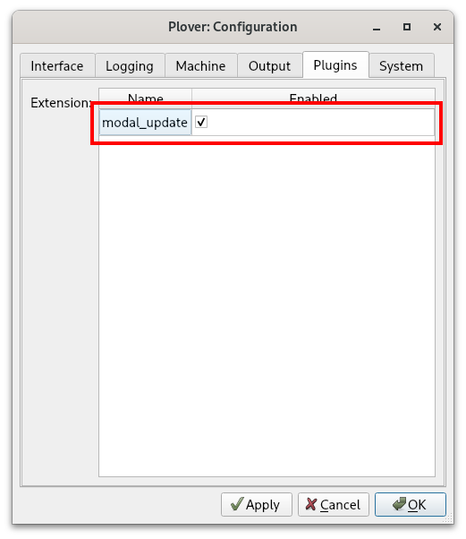
Modal dictionaries
Moving around a document can be quite tedious especially with such a long starting chord like #TPH. One way to make movement easier is to use a modal dictionary. This is a temporary dictionary that can be turned on and off with a regular outline that also outputs a translation.
A modal movement dictionary contains the regular movement strokes, but with the #TPH chord removed. Writing a normal movement stroke will turn this dictionary on, so that every subsequent movement stroke can be written using only the right hand. Writing a non-movement stroke will turn this dictionary back off.

NOTE: this plugin is incompatible with some plugins such as plover-clippy. The creator has expressed that it is a bit of a hacky plugin.
Semi-modal movement
If you do not want to use modal dictionaries, you can also use the semi-modal movement dictionary. This also contains movement strokes without the left hand starting chord.
You can download the dictionary from the link above and make sure you add it to the top of your stack. Uncheck the box so that it is disabled by default. The idea is that you can enable this dictionary only when you need to move the text cursor.
To achieve this, you will need to add a toggling entry to one of your dictionaries:
{PLOVER:TOGGLE_DICT:!semi-modal-movement.json}

Now, whenever you want to move the text cursor without having to use a left hand starting chord, just write SKWR (or whatever stroke you chose) and then SKWR again when you’re done.
First-up chord send and chord repeat
Quick video introducing these two firmware mods: https://youtu.be/UMGT-qyJeJk.
First-up chord send
Steno keyboards send stroke information to Plover once all keys have been released. You can test this out for yourself. Hold down S and press other keys on the steno layout. Plover will not receive any strokes as long as S (or any other key) is being held down. Once every key has been released, Plover will register the stroke.
Alternatively, you could have your keyboard send stroke information once the first key has been released. This is what “first-up chord send” refers to: stroke information is sent to Plover as soon as the first key has been released. This is very useful for repeating movement keys without using a separate dictionary or pressing the entire stroke each time.
By holding down the left hand starter chord, you can tap a right hand key repeatedly to move the cursor multiple times. In fact, as long as the left hand starter chord is being held, you can tap any of the right hand movement chords.
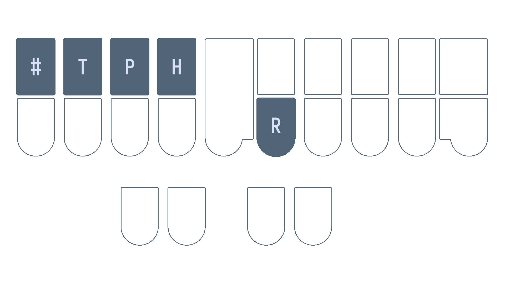
However, there are two caveats with this technique: firstly, it involves modifying your keyboard’s firmware. Secondly, it may cause your accuracy to drop if you’re writing fast. Personally, wrong strokes are very often detected by Plover when I try to use first-up chord send. It may be that my writing is sloppy and I am not too careful and deliberate about my stroke actions, but I have not been able to get used to this firmware mod.
Chord repeat
Chord repeat works a lot like holding down a key on a regular keyboard. However, as we often hold chords when we hesitate, it is more useful to double tap a chord and hold to signify that we want to repeat the chord.
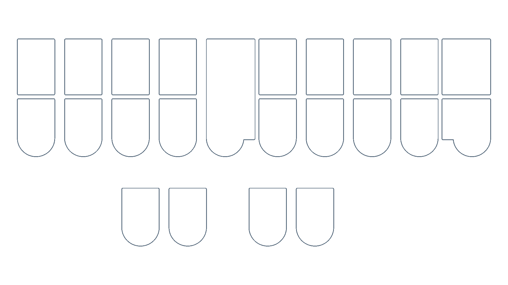
This technique also requires modifying your keyboard’s firmware. Unlike first-up chord send, I do recommend this and find it very useful.
Ecosteno, Multisteno, Splitography, Uni v3
For these keyboards, prebuilt firmware binaries for these mods are available at Josh Gram’s steno-firmware repository.
Flashing these firmware files are beyond the scope of this page, and instructions differ from keyboard to keyboard and machine to machine. On Linux, flashing the Multisteno is relatively straightforward as long as dfu-util is installed. I use the following command (where noll_multisteno.bin is the binary):
sudo dfu-util -d 1eaf:0003 -a 2 -D "noll_multisteno.bin"
Javelin compatible devices
Javelin is a steno engine that is contained within a keyboard’s firmware. This allows the keyboard to act a steno writer without having to install Plover on the host machine. It is very useful for using steno on multiple devices without having to worry about installing Plover or syncing dictionaries; the entirety of the translation from steno strokes to text happens on the keyboard itself.
Javelin is compatible with several steno keyboards such as the Uni v4 and the Polyglot. It is much easier to create custom firmware builds and flash binaries to these keyboards via the Javelin Steno Firmware Builder. By checking the “Show expert options” at the very top of the page, you have the option of enabling first up chord send and/or repeat.
If you don’t intend to use Javelin’s embedded steno capability, you can also still use Plover with keyboards that have Javelin firmware. For each keyboard, you will have to press a key combination to switch it into Gemini PR for usage with Plover.
Copying, pasting, and deleting text
Copying and pasting of text is done by simply emulating the Ctrl+C and Ctrl+V shortcuts. Using Abby’s left hand modifiers, this would be KHR/KR and KHR/SR respectively. The same goes for cutting text.
The following table lists a few helpful strokes for deleting text. It is important to note that using these strokes will mess up any undo history with the *.
| Outline | Translation | Description |
|---|---|---|
PW-FP | {#BackSpace}{^} | Backspace |
PW*FP | {#Control(BackSpace)}{^} | Backspace the last word (change translation if you’re on Mac) |
TKHR | {#Delete}{^} | Delete the next character |
TKHR* | {#Control(Delete)}{^} | Delete the next word |
If you have learned Plover theory and are considering switching to Lapwing, have a read through of this page before deciding!
Plover Theory
Plover theory is a perfectly capable theory. After all, Mirabai Knight, the founder of the Open Steno Project, uses it in her professional work as a stenocaptioner. She has graciously provided her own dictionary (main.json) for us hobbyists to use. As with all professional stenographers, she built the majority of this dictionary by herself, having added many of the entries over the years.
However, everyone writes differently. In fact, no two stenographers’ dictionaries are ever the same. Many of the entries in main.json are simply what made sense to Mirabai at the time. They do not always follow systematic and rigorous rules. Plover theory itself is not very well defined in some areas; to illustrate this, have a look at all the ways to write “monotonous” in main.json:
"PHO/TPHOT/TPHOUS": "monotonous",
"PHOE/TPHOT/TPHOUS": "monotonous",
"PHOE/TPHOT/TPHUS": "monotonous",
"PHOPB/OT/TPHOUS": "monotonous",
"PHOPB/OT/TPHUS": "monotonous",
"PHOPB/TOPB/TPHUS": "monotonous",
"PHOPB/TPHOT/TPHOUS": "monotonous",
There are many different ways to write this word simply because there are no simple rules when it comes to splitting multisyllable words. This would be fine if the dictionary contained every single valid combination, but it doesn’t. After all, it is a very time consuming task to add multiple entries for every single word. In the above example, PHOPB/TPHOT/TPHUS is missing.
The learning resources such as Learn Plover! and Art of Chording also do not mention any rules about doubling consonants between strokes or about using OUS vs US. While, I can advise against using US from having used main.json for a year, it is much harder for me to give a recommendation when it comes to doubling consonants in multisyllable words. It is just poorly defined, and the dictionary does not contain any easy to recognize patterns.
One more issue with main.json that is illustrated in the example above is the fact that many write-out entries require briefing techniques. In this case, you must drop the third “o” in “monotonous” since it is unstressed in order to write it out. This is fine for speed, but can be confusing for learners.
The common wisdom to work around these issues (if you would like to stick with Plover theory and main.json) is to simply just add entries to fill in these gaps. If you do not want to have to drop unstressed vowels, just add the entry yourself. If you disagree with the dictionary’s preference towards OUS, it’s trivial to add the alternative entries. After all, there is no such thing as a “complete” dictionary and stenographers constantly tweak their own.
However, I disagree with the notion that learners should be doing this right from the start. This is my motivation behind creating Lapwing theory. It is basically “Plover theory but more defined” in that there is always one outline that is correct for a given pronunciation.
I’ve also gone more into detail about my motivation behind creating Lapwing theory on my personal website.
Lapwing theory
I created the initial Lapwing dictionary in early 2022 and have been refining it since then. So far, it is in a more or less stable state; I only add miscellaneous entries that I come across in my daily computer usage, or remove bad entries that I discover.
You should not learn Lapwing theory if…
- … you have your own rules to work around the inconsistencies of Plover.
- … you have added well over a few hundred entries already.
- … you brief quite heavily and have memorized many of those
main.json.- Lapwing does contain many briefs, but it is still missing quite a few briefs from
main.json
- Lapwing does contain many briefs, but it is still missing quite a few briefs from
- … you prefer the openness of Plover theory and have adapted your dictionary to your writing style.
- … you dislike the notion of having a single “correct” way to write out a word.
- … you are looking for a theory that is not North American centric.
- Sadly, there are currently no freely available steno theories (that I know of) based on non-North American variants of English.
Using both main.json and lapwing-base.json
If you are used to many of the briefs in Plover’s default main.json dictionary, you can use this dictionary in conjunction with Lapwing. Both Plover and Lapwing theory are very similar, and you might benefit from having both dictionaries in your stack. Whether you would like to have lapwing-base above or below main.json is up to you; if you’d like to use Lapwing write-outs as a base and keep Plover briefs secondary, make sure Lapwing is higher up in your stack. On the other hand, if you’d like to prioritize Plover briefs, put main.json above Lapwing.
However, main.json has a few issues (mainly compound words) which make it slightly troublesome to use with Lapwing. Therefore, instead of using the stock dictionary, I reccommend using Harri’s Lapwing compatible version of main.json.
Differences
To switch to Lapwing theory from Plover theory, you do not necessarily need to work through every single chapter in Lapwing for Beginners. Below is a summary of the differences between Plover and Lapwing. The relevant chapters are also linked, and it is recommended you read these complete the exercises. You can assume anything not listed to be equivalent to Plover theory.
If you would still like to switch to Lapwing theory, I recommend reading through this entire section (and skimming the linked chapters) before finally deciding if trying it out is for you.
Top S number key
Lapwing theory uses the number key quite extensively for proper nouns (and sometimes as another disambiguator). The number bar on professional machines is in an inconvenient location. Furthermore, the finger you use differs depending on the other keys in the stroke. It is also not possible to include the number key in every single chord.
Thumb number keys (thumber keys) aren’t much better either. It is impossible to write #AOEU, for example. Instead, Lapwing theory relocates the number key to the top S key on the left.
Please see chapter 5 to configure Plover to use this key.
KWH for y
Use KWH for the initial “y” consonant.
- yes
KWHES - yurt
KWHURT
Please see chapter 6 for practice.
Note that this only applies to words that are spelled with a y. Words spelled without a y use no initial consonant chord.
- use
AOUS - utility
AOU/TEUL/TEU
TP* for ph
Use TP* for the left hand “ph” consonant.
- phone
TPO*EPB - morphology
PHOR/TPO*/HRO/SKWREU
WR for wr
Use WR for the left hand “wr” consonant.
- wrap
WRAP - write
WRAOEUT
WH for wh
Use WH for the left hand “wh-” consonant.
- when
WHEPB - white
WHAOEUT
Usage of AU
The AU vowel has the same sound as O as in “bot”, but is used in words that are not spelled with a single o.
- bought
PWAUT - watt
WAUT
Please see chapter 8 for practice.
*PL for mp
Unlike Plover theory, Lapwing exclusively uses *PL for the ending “-mp” sound.
- bump
PW*UPL - lamp
HRA*PL
Please see chapter 9 for practice.
-PLT for ment
Use -PLT as a compound cluster for “-ment”.
- garment
TKPWARPLT - torment
TORPLT
Please see chapter 11 for practice.
-LT for let
Use -LT as a compound cluster for “-let”.
- starlet
STARLT - roulette
RAOULT
Please see chapter 11 for practice.
KR to resolve c conflicts
Use KR for the initial c consonant when there is a conflicting word.
- cent
KREPBT- As
SEPBTis already “sent”
- As
- cite
KRAOEUT- As
SAOEUTis already “sight”
- As
Basic words miscellaneous theory
Make sure to read chapter 12 for wrapping up basic words. It especially covers scenarios where you must write single syllable words with more than one stroke.
Prefixes and suffixes
Lapwing theory prioritizes prefix and suffix strokes for the most “obvious” outlines. For example, OUT is given to the {out^} prefix so you must use O*UT or AOUT to write the word “out”.
Suffixes usually use KWR as a linker chord. This chord signifies that the stroke should attach to the previous word. For example, to write the word “flotation”, you would write TPHROET/KWRAEUGS.
You should also only use prefixes and suffixes when it semantically makes sense. For example, you would not write the “er” in the word “coriander” using the {^er} suffix since “coriand” is not a root word that the suffix is modifying.
Make sure to read chapter 13 for more detail on how prefixes and suffixes work.
Here are some common prefix strokes that take precedence over words:
| Prefix/word | Prefix Outline | Recommended word outline(s) | Explanation |
|---|---|---|---|
| a | A | AEU | A* is already used. |
| bi^ (by) | PWAOEU | PWEU | There is a three way conflict between “by”, “bye”, and “buy”. |
| be | PWE | -B | Useful in phrase briefs. |
| for | TPOR | TP-R or TPAURT | Useful in phrases like “for the” TP-RT. |
| in | EUPB | TPH | Useful in phrases like “in the” TPH-T. |
| or | OR | AOUR or AUR | O*R is already used. |
| out | OUT | O*UT or AOUT | Either works. |
| on | OPB | O*PB or AUPB | Either works. |
| tri^ (try) | TRAOEU | TRAO*EU or TREU | The first is the more “formal” outline, but the second matches the pattern with “by”. |
Multistroke prefixes also take precedence over multistroke words (e.g., UPB/TKER is the prefix “under-”) and in these cases the word variant is written by using the asterisk key in the second stroke.
Compound words
Compound words are written by including the asterisk in the first stroke of the second word.
- eyelash
AOEU/HRA*RB - grasshopper
TKPWRAS/HO*P/*ER
Please see chapter 14 for more details.
Syllabic splitting
Lapwing theory uses a strict method of splitting syllables. In short, every single stroke should start with a consonant (or KWR) and should not double the same consonant sound across two strokes.
- bunion
PWUPB/KWROPB - conscientious
KOPB/SHEU/KWREPB/-RBS - monotonous
PHO/TPHO/TO/TPHUS - shatter
SHA/TER - tomato
TO/PHAEU/TOE - violet
SRAOEU/KWROLT
This is one of Lapwing’s key differences, so be sure to read chapter 15.
Right hand numberpad
Numbers are written one digit at a time using a right hand numberpad and the number key.

Please see chapter 17 for more details.
Proper nouns
Proper nouns are written by including the number key in the first stroke of the proper noun.
- Bob
#PWOB - Cameron
#KA/PHER/KWROPB
Miscellaneous theory principles
Be sure to read chapter 21.
How to get started
Setting up Lapwing
It is highly recommended that you use the plover-lapwing-aio plugin. This will automatically install the right plugins, dictionaries, and adds some other quality-of-life improvements such as relocating the number key for you and reverting the special number key behaviour. See chapter 5 for setting up Lapwing with this plugin.
However, if you already have several dictionaries with Plover theory, you can also just add the Lapwing dictionaries to your stack. All the Lapwing dictionaries are fully compatible with Plover without having to make any modifications. See appendix B for details.
Transitioning to Lapwing
Keep this page bookmarked and refer back to it whenever you run into trouble. Chapters 12, 13, 14, and 15 are especially important and I recommend at least skimming through these before you go “cold turkey” with Lapwing.
More tips to come…
Setting up Lapwing manually
This page describes how to manually configure Plover to use Lapwing theory. This is not a recommended method for two reasons: there is a lot of manual work required, and Plover will have a tendency to modify the number key entries, thereby making lookups difficult.
If any change is made directly to a Lapwing dictionary, Plover will change all entries with the number key so that they contain numbers in the steno strokes (i.e. #PWOB → 3W0B). To revert this, you will have to redownload the dictionary and update the dictionary in your stack. Therefore, I would suggest installing the plover-lapwing-aio plugin instead of following the instructions on this page.
Install required plugins
See the Plover wiki page on installing plugins for instructions. Install the following plugins:
plover-dict-commandsplover-last-translationplover-modal-dictionaryplover-python-dictionaryplover-stitching
Note that you can install all four plugins before restarting Plover.
Enable modal_update
In Plover’s main window, go to Configure → Plugins and click on the modal_update box.
If you don’t see this box, make sure you’ve installed the
plover-modal-dictionaryplugin and restarted Plover.
Download the dictionaries
Download the dictionaries by right clicking the following links and pressing Save link as (or whatever the equivalent is for your browser):
jeff-phrasing.pyabby-left-hand-modifiers.pyemily-modifiers.pyemily-symbols.pylapwing-movement.modallapwing-commands.jsonlapwing-numbers.jsonlapwing-uk-additions.jsonlapwing-proper-nouns.jsonlapwing-base.json
Next, in the Plover main window, click on the green plus button:
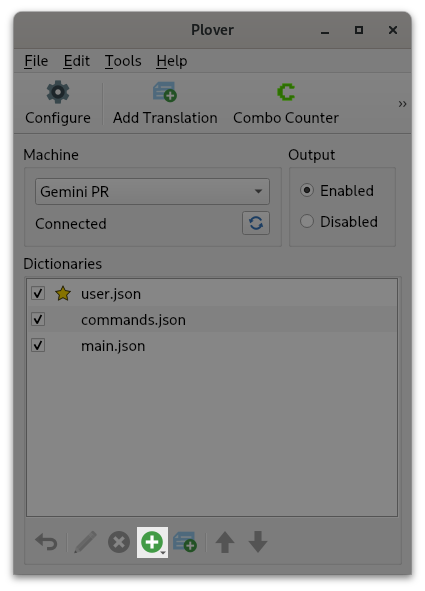
Select “Load dictionaries” and you will be greeted with a window to select all the dictionaries that you downloaded earlier. Next, click on main.json and press the red X button to delete it from your dictionary stack. Do the same for commands.json.
Now, select each dictionary and make sure they are listed in your stack in the same order as shown below by using the blue arrow keys or dragging them around.
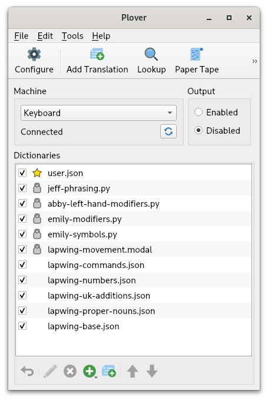
Relocate the number key
On professional steno machines, there is a long key that runs at the very top of the steno layout (called the number bar). It is in a somewhat awkward location, but for most mainstream steno theories, it doesn’t matter; it is only used for writing numbers.

However, Lapwing theory uses the number key quite extensively (especially in proper nouns) and therefore puts it in a more convenient location. Lapwing removes one of the redundant S keys on the left and replaces it with the number key.

This key is not configured by default, so you will have to change it yourself. In the main window of Plover, go to Configure → Machine.
Scroll down to the keymap, and change either S1 or q to # depending on whether you are using Gemini PR or keyboard as the machine.
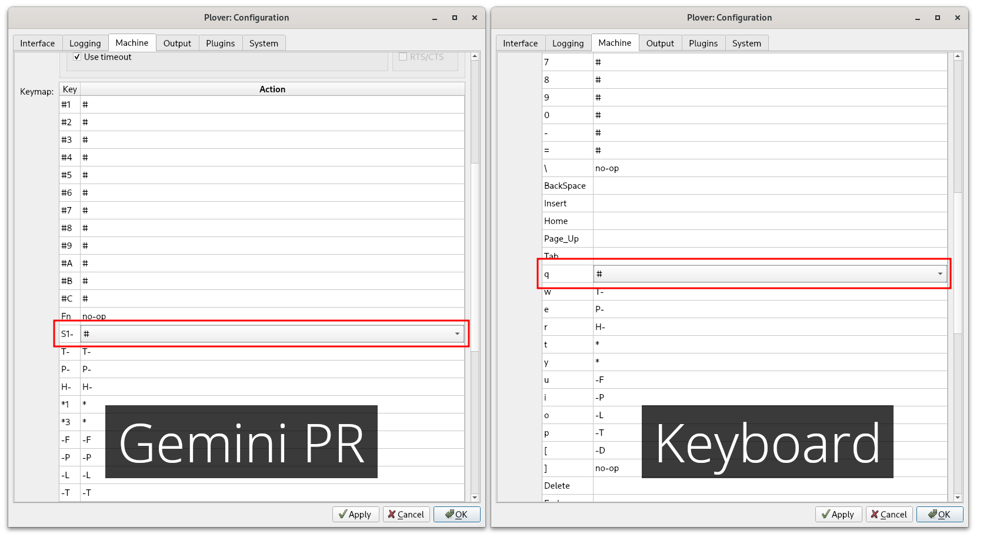
Triple click on the cell next to the key to open the dropdown. From there, you will be able to change the action to #.
Lapwing with Javelin
Javelin is a keyboard firmware that features an embedded steno engine. Embedded steno allows a keyboard to act as a steno machine without requiring any software installed on the host device. This is useful for using steno with locked down computers (i.e., school/work machines) or devices that do not support Plover (such as Chromebooks, iOS devices, Linux distros running Wayland, etc).
As this book is aimed towards Plover users, instructions specific to the Plover app will be found throughout the chapters. This page contains the afferent instructions for Javelin users in each chapter.
Chapter 3
Chapter 3 provides instructions on using the Plover lookup tool. The Javelin lookup tool can also be used; follow the same tips for affix strokes.
There is also a Javelin lookup tool for the onboard dictionaries in your steno keyboard. Although this requires connecting your steno keyboard, any translations you have added will show up here too.
Chapter 4
Chapter 4 covers using Steno Jig to learn the layout. To use the Steno Jig layout drills with Javelin, go to the active dictionaries and uncheck all the boxes:

NOTE: it does not matter if the dictionaries for your device are different than those in the image above. Simply uncheck every single one.
This will make the steno keyboard output the raw keys (rather than any translations), which is necessary for these exercises. Once you have completed chapter 4, make sure to enable the dictionaries again.
Chapter 5
Chapter 5 goes over setting up Lapwing with the Plover app. To set up Lapwing with Javelin, first go to the Javelin Firmware Builder.
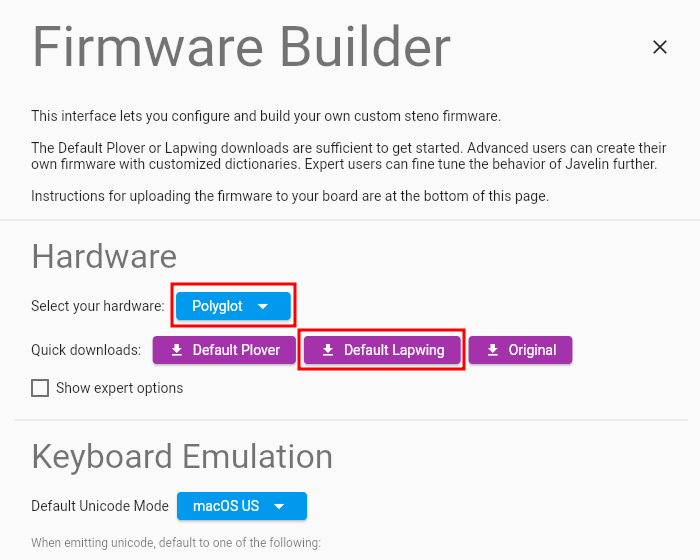
First select your hardware in the dropdown menu, and then press the Default Lapwing button. Scroll down to the very bottom of the page for specific instructions on flashing the firmware to your keyboard.
Chapter 26
Chapter 26 discusses editing text, and brings up modal dictionaries. These are unfortunately not supported by Javelin. If you follow the set up instructions below, you will by default use the lapwing-semi-modal-movement.json dictionary. You can also experiment with first-up chord send or creating movement key layers.
Creating your own Lapwing firmware
Instead of using the default Lapwing firmware, it is also possible to manually configure your own Javelin firmware for Lapwing. This may be helpful if you wish to tweak your layout or add your own personal dictionaries. As such, this guide is aimed towards advanced users. If you are new to steno and just want Lapwing on your board, follow the instructions for chapter 5 above.
Download the dictionaries
Download the following dictionaries by right clicking the links and pressing Save link as (or whatever the equivalent is for your browser):
lapwing-javelin-additions.jsonabby-left-hand-modifiers.jsonemily-modifiers.jsonlapwing-semi-modal-movement.jsonlapwing-commands.jsonlapwing-numbers.jsonlapwing-uk-additions.jsonlapwing-proper-nouns.jsonlapwing-base.json
Configure and build firmware
Go to the Javelin Firmware Builder.
Select your hardware (1), enable expert options (2), and change the unicode mode (3) to whichever is applicable to your use case.

Scroll down to options, and select Enable Repeat(4).

In dictionaries, uncheck Jeff’s modifiers dictionary (6), and enable Jeff’s phrasing dictionary (7) as well as Emily’s symbols dictionary (8).

In the dictionary list, add all the json dictionaries you downloaded earlier. Arrange them like shown below by dragging on the dictionary names.
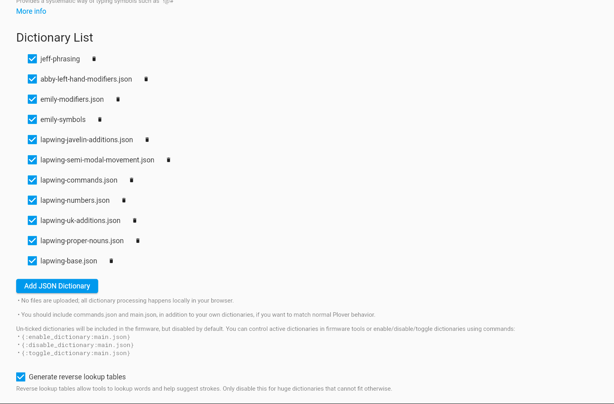
NOTE: make sure to uncheck the box next to
lapwing-semi-modal-movement.json. This ensures the dictionary is disabled by default as it should only be enabled for movement commands.
In the key map settings, check Use S1 as a #key (8).
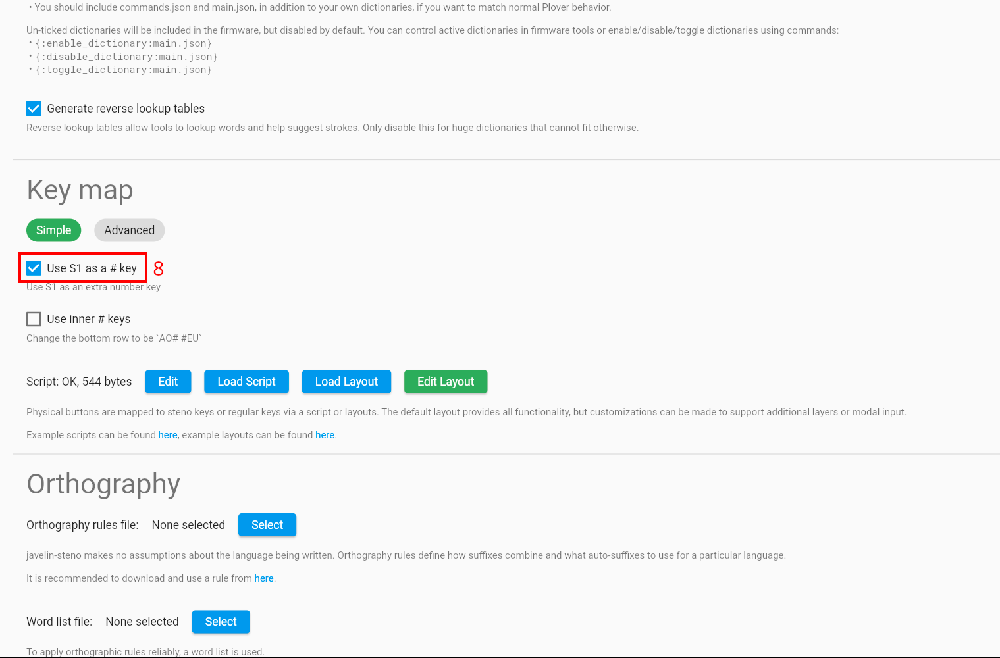
Finally, click on Create Standalone and follow the Update Firmware instructions in the section below. Note the instructions differ depending on the hardware you are using.
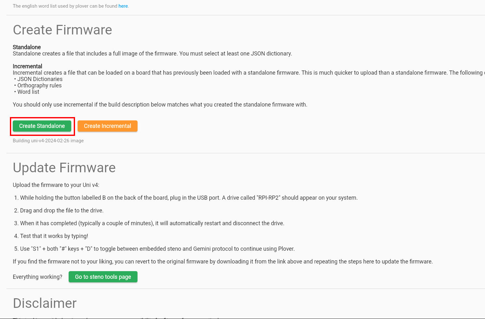
Settings summary
| Number | Setting |
|---|---|
| 1 | Select the keyboard you want to use with Javelin |
| 2 | Enable Show expert options |
| 3 | Change the default unicode mode (depends on the OS you use most often) |
| 4 | Check Enable repeat |
| 5 | Uncheck Jeff’s modifiers dictionary |
| 6 | Check Jeff’s modifiers dictionary |
| 7 | Check Emily’s symbols dictionary |
| 8 | Check Use S1 as a #key |
Tweaking settings after the fact
Javelin has several useful steno tools you can use to change various settings even after flashing the firmware. There is also a lookup tool and add translation tool just like with Plover.
Some of the content on this page is outdated, incomplete, and inaccurate. It is being worked on.
Chords
Left hand consonants
These chords start a syllable.
- Phonetic: underlined letter(s) represents a sound
- Orthographic: underlined letter(s) represents a spelling
| Chord | Representation | Notes | Examples |
|---|---|---|---|
S | s- (voiced and unvoiced) | Phonetic | sip SEUP, design TKE/SAOEUPB |
T | t- | Phonetic | type TAOEUP, mentor PHEPB/TOR |
K | k- | Phonetic | cut KUT, jacket SKWRA/KET |
P | p- | Phonetic | pay PAEU, super SAOU/PER |
W | w- | Phonetic | want WAUPBT, subway SUB/WAEU |
H | h- | Orthographic | hour HOUR, exhale EBGS/HAEUL |
R | r- | Phonetic | root RAOT, derision TKE/REUGS |
ST | st- | Phonetic | state STAEUT, install EUPB/STAUL |
SK | sk- | Phonetic | school SKAOL, obscure OB/SKAOUR |
SP | sp- | Phonetic | spew SPAOU, retrospect RE/TROE/SPEBGT |
SH | sh- | Phonetic | shoe SHAOU, conscious KOPB/SHUS |
SR | v- | Phonetic | voice SROEUS, devote TKE/SROET |
TK | d- | Phonetic | dad TKAD, meadow, PHE/TKOE |
TP | f- | Orthographic (see TP* below) | far TPAR, confess KOPB/TPES |
TP* | ph- | Orthographic | phi TPAO*EU, cipher SAOEU/TP*ER |
TW | tw- and chw- | Phonetic | twig TWEUG, mutual PHAOU/TWAL |
TH | th- | Orthographic | thought THAUT, feather |
TR | tr- | Phonetic | trod TROD, retry RE/TRAOEU |
KP | x- | Orthographic | x-ray KP/RA*EU, anxiety APBG/KPAOEU/TEU |
KW | qu- | Orthographic | quay KWAOE, equal AOE/KWAUL |
KH | ch- | Phonetic | chance KHAPBS, culture KUL/KHUR |
PW | b- | Phonetic | bot PWOT, limber HREUPL/PWER |
PH | m- | Phonetic | mat PHAT, femur TPAOE/PHUR |
PR | pr- | Phonetic | pride PRAOEUD, approve A/PRAOUF |
WH | wh- | Orthographic | whose WHAOUS, narwhal TPHAR/WHAL |
WR | wr- | Orthographic | write WRAOEUT, unwrap UPB/WRAP |
HR | l- | Phonetic | live HREUF, solar SOE/HRAR |
STK | des- and dis- | Phonetic | descent STKEPBT, disarm STKARPL |
STR | str- | Phonetic | strap STRAP, defenestrate TKE/TPE/TPHE/STRAEUT |
SKR | skr- | Phonetic | scree SKRAOE, subscribe SUB/SKRAOEUB |
SPW | int- and ent- | Phonetic | enter SPWER, intern SPWERPB |
SPH | sm- | Phonetic | smell SPHEL, small SPHAUL |
SPR | spr- | Phonetic | spray SPRAEU, sprout SPROUT |
TKW | div- | Phonetic | divine TKWAOEUPB, divisible TKWEUFBL |
TKR | dr- | Phonetic | drag TKRAG, laundry HRAUPB/TKREU |
TPH | n- | Phonetic | not TPHOT, cornet KOR/TPHET |
TPR | fr- | Phonetic | from TPROPL, afraid A/TPRAEUD |
KPH | com- | Phonetic | commend KPHEPBD, commission KPHEUGS |
KPR | compr- | Phonetic | comprise KPRAOEUS, decompression TKE/KPREGS |
KWH | y- | Orthographic | yes KWHES, yeet KWHAOET |
PWR | br- | Phonetic | bring PWREUPBG, embrace EPL/PWRAEUS |
SKWR | j- | Phonetic | jam SKWRAPL, roger RO/SKWRER |
TKPW | g- | Phonetic | got TKPWOT, cigar SEU/TKPWAR |
PWHR | bl- | Phonetic | bland PWHRAPBD, rambler RAPL/PWHRER |
STKPW | z- | Orthographic | zoo STKPWAO, |
TKPWR | gr- | Phonetic | grade TKPWRAEUD, pictograph PEUBG/TOE/TKPWRAF |
TKPWHR | gl- | Phonetic | glade TKPWHRAEUD, polyglot PO/HREU/TKPWHROT |
Right hand consonants
These chords end a syllable
- Phonetic: underlined letter(s) represents a sound
- Orthographic: underlined letter(s) represents a spelling
| Chord | Representation | Notes | Examples |
|---|---|---|---|
-F | -f, -v, and -s | Phonetic | stuff STUF, live HREUF, trust TRUFT |
-R | -r | Phonetic | far TPAR, inherit EUPB/HER/KWREUT |
-P | -p | Phonetic | tap TAP, grapple TKPWRAP/-L |
-B | -b | Phonetic | lab TAB, obscure OB/SKAOUR |
-L | -l | Phonetic | tell TEL, volcano SROEL/KAEU/TPHOE |
-G | -g | Phonetic | sag SAG, ignite |
-T | -t | Phonetic | net TPHET, atlas AT/HRAS |
-S | -s | Phonetic | sass SAS, misty PHEUS/TEU |
-D | -d | Phonetic | cad KAD, kidney KEUD/TPHEU |
-FR | -fer and -ver | Phonetic | lover HROFR, cipher |
-FP | -ch and -sp | Phonetic | such SUFP, lisp HREUFP |
-FL | -f_l and -v_l | Phonetic | playful PHRAEUFL, valve SRAFL |
-FT | -ft and -st | Phonetic | loft HROFT, host HOEFT |
*S | -st (secondary chord) | Phonetic | lift HREUFT, list HR*EUS |
-RP | -rp | Phonetic | harp HARP, corp KORP |
-RB | -rb and -sh | Phonetic | curb KURB, flash TPHRARB |
-RL | -r_l | Phonetic | viral SRAOEURL, curl KURL |
-RT | -rt | Phonetic | part PART, sport SPORT |
-RD | -rd | Phonetic | card KARD, herd, HERD |
-PB | -n | Phonetic | green TKPWRAOEPB, anther APB/THER |
-PL | -m | Phonetic | seem SAOEPL, template TEPL/PHRAT |
-PT | -pt | Phonetic | slept SHREPT, opt OPT |
-BL | -_b_l | Phonetic | visible SREUFBL, verbal SRERBL |
-BG | -k | Phonetic | truck TRUBG, taxi TABG/SEU |
-LG | -lch | Phonetic | mulch PHULG, welch WELG |
*LG | -lk | Phonetic | elk *ELG, sulk S*ULG |
-LT | -l_t | Phonetic | tilt TEULT, roulette RAOULT |
-LD | -ld | Phonetic | sold SOELD, cold KOELD |
-GT | -xt | Phonetic | text TEGT, context KOPB/TEGT |
-GS | -shun | Phonetic | ocean OEGS, motion PHOEGS |
-FRB | -rv | Phonetic | carve KAFRB, serve SEFRB |
-PBG | -ng and -nj | Phonetic | sing SEUPBG, hing HEUPBG |
-PBT | -nt | Phonetic | hint HEUPBT, saint SAEUPBT |
-PBS | -ns | Phonetic | dance TKAPBS, rinse REUPBS |
-PBD | -nd | Phonetic | sand SAPBD, kind KAOEUPBD |
-BGT | -kt | Phonetic | pact PABGT, expect EBGS/PEBGT |
-BGS | -x and -kshun | Phonetic | tax TABGS, traction TRABGS |
*BGS | -kshun (secondary chord) | Phoentic | sex SEBGS, section SE*BGS |
-FRPB | -rch and -nch | Phonetic | search SEFRPB, bench PWEFRPB |
-FRPBLG | -nch (secondary chord) | Phonetic | lurch HRUFRPB, lunch HRUFRPBLG |
-PBLG | -j | Phonetic | gauge TKPWAEUPBLG, surge SURPBLG |
Vowels
TODO: add IPA, pronunciation guides, more examples.
Short vowels
There are 5 short vowels defined in Lapwing, one for each letter. There are only 4 vowel keys: A, O, E, and U. Therefore, the EU chord is used to represent the 5th vowel: i.
If a short vowel is spelled with a single letter, the corresponding vowel key/chord is used.
If a short vowel is spelled with multiple letters, the vowel key/chord closest in pronunciation is used.
NOTE: this rule has some leeway. The dictionary may contain multiple entries if there is ambiguity.
Below is a table of short vowels as defined in Lapwing.
| Sound | Example | IPA | Steno outline |
|---|---|---|---|
| Short a | cat | KAT | |
| Short e | pet | PET | |
| Short i | sit | SEUT | |
| Short o | lot | HROT | |
| Short u | hut | HUT |
Examples
- asdf
- jk;l
- plaid
PHRAD - said
SED
Short o exception
Since there are a lot of homophones with short o vowels, any short o sound that isn’t spelled with a single “o” is written with the AU chord.
- bot
PWOT - bought
PWAUT - cot
KOT - caught
KAUT - spa
SPAU
NOTE: Lapwing is based on North American English, specifically my accent of English. To me, all of the words above (as well as the first vowel in “father” and “bother”) are exactly the same (cot-caught merger, father-bother merger). If your accent is closer to British English, see Warbler Theory.
Short vowels with -R
The following sounds are also considered short vowels (and therefore follow previously mentioned short vowel rules), but are distinct to the 5 sounds listed above.
| Sound | Example | IPA | Steno outline |
|---|---|---|---|
| Short a | cart | KART | |
| Short e | herd | HERD | |
| Short i | sir | SEUR | |
| Short o | lore | HROR | |
| Short u | hurt | HURT |
NOTE: “herd”, “sir”, and “hurt” actually have the same vowel.
Long vowels
Below is a list of long vowels as defined by Lapwing.
| Sound | Example | IPA | Steno outline |
|---|---|---|---|
| Long a | cane | KAEUPB | |
| Long e | heed | HAOED | |
| Long i | sigh | SAOEU | |
| Long o | low | HROE | |
| Long u | hue | HAOU |
These vowels are purely phonetic. Their steno chords correspond to sounds.
Long vowels with -R
The following sounds are also considered long vowels (and are therefore entirely phonetic), but are distinct to the 5 previously discussed long vowels.
| Sound | Example | IPA | Steno outline |
|---|---|---|---|
| Long a | cairn | KAEURPB | |
| Long e | here | HAOER | |
| Long i | sire | SAOEUR | |
| Long u | cure | KAOUR |
Long a exception
The sound listed as a long a can sometimes be spelled with a single e, such as in the word “herr”. In these cases spelled with a single e, the ER chord should be used. AEUR is reserved for all other spellings.
Out of order syllables
Despite all the chords listed above, some syllables cannot be written in one stroke. When this is the case, write as much of the word as possible in one stroke, and finish the rest in another stroke.
- helm
HEL/-PL - kiln
KEUL/-PB
For words ending in -v or -t, the -F or -T keys would normally be used. However, these keys on their own are briefs for the common words “of” and “the”. To prevent any potential conflicts, use *F and *T instead to end these words.
- elf
EL/*F - list
HREUS/*T
NOTE: using the
-FTor*Schords is preferred for ending a a syllable with -st.
Affix strokes
Most strokes are defined as words, meaning they are separated by spaces. However, affix strokes suppress spaces either before or after their translation. These are defined using curly braces {} and carets ^.
For example, the TPHOPB stroke is defined as {non^}. The curly braces indicate that they contain special formatting, and the caret indicates where the space is ignored. Therefore, writing TPHOPB/KAT would result in “noncat”.
Prefixes
Prefix strokes suppress spaces such that they are attached to the next stroke stroke.
- onlook
OPB/HRAOBG- {on^}
OPB
- {on^}
- relearn
RAOE/HRERPB- {re^}
RAOE
- {re^}
Common prefixes are written as if they were regular words (e.g. pre^ and on^ are just written using the chords above).
Suffixes
Suffix strokes suppress spaces such that they are attached to the next stroke.
Standalone right hand suffixes
KWR suffixes
_*R suffixes
Suffix keys
The following keys by themselves are defined as suffixes.
- {^ing}
-G - {^s}
-S - {^ed}
-D - {^s}
-Z
Compound words
Compound words are written with the asterisk on the first stroke of the second word.
- keyboard
KEU/PWAO*RD - mousepad
PHOUS/PA*D - storybook
STOR/KWREU/PWAO*RBG - textbook
TEGT/PWAO*BG
Syllabic splitting
Proper nouns
Prefixed proper noun dictionaries
Movement keys, keyboard shortcuts, commands
Punctuation
Right hand number pad
Fingerspelling
Consonant doubling with prefixes
Consonants can be doubled if the previous stroke is a prefix and the strokes that follow form a valid word on their own:
TKEUS/SOFLS→ dissolvesTKEUS/SEU/PHEU/HRAR→ dissimilar
Of course, if it makes sense to you to disregard this exception then feel free to add entries such as
TK*EU/SEU/PHEU/HRAR→ dissimilar to your dictionary.
Consonant doubling with “ng”
Words with “ng” such as “mango” would not be able to be defined accurately if consonants could not be doubled across strokes. Thus it is acceptable for these words to double the “G” across strokes:
PHAPBG/TKPWOE→ mangoTPEUPBG/TKPWER→ fingerSEUPBG/TKPWAOU/HRAR→ singular
-R as a vowel
Situations that benefit from dropping unstressed vowels
Conflict resolution
If two homophones must be resolved using asterisk, there are a few aspects of each word that will decide which word gets precedence.
If there are repeat letters in a word, that will use asterisk
#HART/PHAPB→ Hartman#HART/PHA*PB→ Hartmann
If two words differ in a vowel, (especially with Y or I), the asterisk will go to the word that doesn’t match the vowel as spelt
#HREUPB→ Lin#HR*EUPB→ Lynn
“kr” gets precedence over “chr” and “cr” in KR- as it matches the keys more
#KREUS/TEU→ Kristy#KR*EUS/TEU→ Christy- Also can be written
#KHREUS/TEU
- Also can be written
“x” and “ks” gets precedence over “kshun” in“ -BGS
TRABGS→ tracksTRA*BGS→ tractionRE/TPHREBGS→ reflexRE/TPHR*EBGS→ reflection-
The one exception to this rule is
TKEUBGS→ diction; I like being able to write “dictionary” asTKEUBGS/KWRAER. Seeing “dicks” show up before writingKWRAERseems silly.
For conflicts with words ending “i” vs “y”, use EU and KWREU respectively
#TE/REU→ Terri#TER/KWREU→ Terry#SAPL/KWREU→ Sammy#SA/PHEU→ Sammi
Beyond writing out
Dropping unstressed vowels
Using shorter prefixes and suffixes
Folding and stacking sounds on ending strokes
Folding suffix keys
UK Spellings
Glossary
brief
An abbreviated outline used for greater speed that does not follow basic theory.
chord
A group of keys pressed all at once.
conflict
A situation where two translations would normally be mapped to the same steno outline.
dictionary
A file used by a steno engine to translate from outlines to the output translation.
diphthong
Two distinct vowel sounds that blend together.
entry
A section in a dictionary that defines the translation of a steno outline.
fingerspelling
A technique to output words letter-by-letter.
folding
Including keys in a previous stroke (with disregard to steno order) to fit in more sounds.
glide
IPA
International Phonetic Alphabet; a system of symbols used internationally to represent sounds in all human languages.
N-key rollover
The property of a regular keyboard to detect multiple key presses simultaneously.
orthographic
Relating to spelling.
outline
One or more strokes that form a translation.
phonetic
Relating to pronunciation.
Plover
A free and open source steno engine for Linux, Mac, and Windows.
raw steno
A textual representation of the steno strokes pressed before being translated.
steno engine
A program used to translate steno outlines to text.
embedded steno engine
A steno engine embedded on a keyboard’s firmware; allows for plug-and-play stenography with no setup required on the host machine.
steno keyboard
A keyboard made primarily by hobbyists and for hobbyists for use with stenography.

steno machine
A machine (can be standalone requiring no host machine) for stenography by professional court reporters and captioners.
NOTE: some use “steno machine” to refer to any stenographic input device (such as hobbyist steno keyboards).

steno writer
Any stenographic input device.
steno order
The order in which sounds should fall on
stroke
Synonymous with chord as a noun; can also be used as a verb to describe the action of pressing a chord.
affix stroke
A stroke that attaches to words.
prefix stroke
A stroke that outputs a prefix and suppresses the next space.
suffix stroke
A stroke that outputs a suffix and attaches to the previous word.
syllabic splitting
A Lapwing technique for splitting multisyllable words into steno strokes.
steno theory
A set of rules that govern how words are broken down into steno outlines.
basic theory
The principles of Lapwing theory that encompass the rules for writing English text.
translation
The output (text, keyboard shortcut, etc) of a steno outline.
write-out
An outline that follows basic theory.
2024-12-28
- Added section in chapter 12 to explain “I’ll” vs “aisle” discrepancy
- Added note in chapter 12 to explain non-asterisked contractions
2024-11-10
- Changed recommended colon outlines to
#TPH-FPLTand#TPH*FPLT
2024-11-07
- Switched most graphics to @IllustratedMan-code’s SVG generator
2024-09-29
- Added section in chapter 22 on words ending in “h”
- Added “ah” and “doth” to problematic words
2024-09-22
- Updated Emily’s modifiers graphic in chapter 25
- Matched plugin v1.3.1 (removed mirroring of Emily’s symbols to Emily’s modifiers)
- Added tasks list on home page
- Renamed theory reference to appendix D
2024-09-21
- Fixed typo in chapter 20
- Added a section in chapter 3 going over discovering problematic words
2024-08-09
- Removed “kraut” from chapter 8 drills
2024-07-21
- Removed note on unstressed vowels in chapter 11. It is not necessary and may confuse readers instead.
- Rephrased the
-BLcompound cluster as primarily one sound.- However, since
-BLcan be used after dropping any vowel (mostly unstressed vowels), the wording has been updated. - It now uses the concept that the
-BLchord can be extended to represent a preceding vowel.
- However, since
- Added
-BLTas a compound cluster. - Removed recommended pace as it is not a helpful guide due to the huge diversity in learning styles/speeds.
- Clarified that the recommended passing goal is more intended for those unsure of when to move to the next chapter.